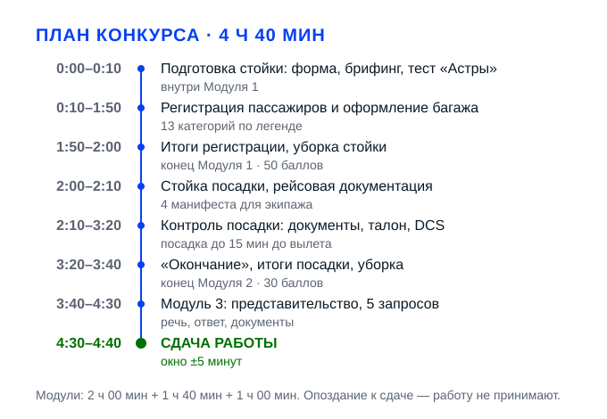
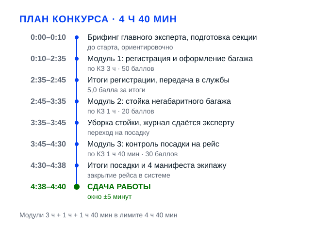
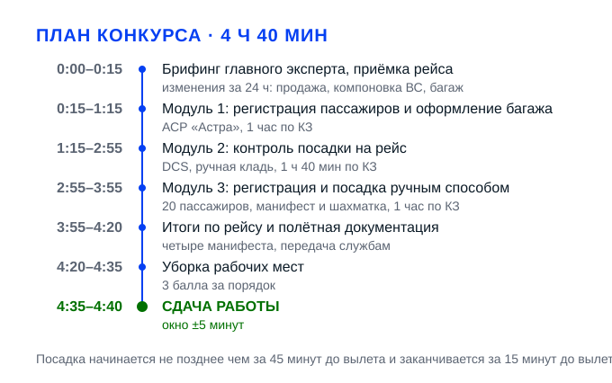

Сервис на воздушном транспорте (Р)
Задания ниже — официальные файлы «Абилимпикс» (источник: abilympics-russia.ru), разложенные по категориям. Решения написаны по тексту задания, регламенту и критериям оценки; в них указано, что именно проверяет эксперт.
Школьник
14–16 лет, базовый уровень заданияВ официальном файле категории не разделены отдельными разделами — приводим задание целиком; различия по категориям смотрите в таблице модулей.
Пошаговое решение
Задание школьников — 4 часа 40 минут, три модуля и 100 баллов, рейс внутренних воздушных линий, все билеты электронные, вся работа в автоматизированной системе регистрации «Астра». Модуль 1 идёт два часа и стоит 50 баллов: проверка документов, бизнес-класс, пассажиры с детьми, с животными, с картами привилегий, с оружием, группа, крупногабаритный и тяжеловесный багаж, багаж на дополнительном месте, досылочный багаж. Модуль 2 — час сорок и 30 баллов: контроль посадки с проверкой талона, визовым контролем, отметкой в DCS и оформлением багажа на выходе. Модуль 3 — час и 20 баллов: представительство авиакомпании, пять запросов пассажиров и речь. Ниже 47 шагов в том порядке, в котором они идут на площадке, с цифрами из Правил авиакомпании: нормы багажа по тарифам, вес животного до 8 кг с контейнером, ручная кладь 55 на 40 на 20, посадка не позднее 45 минут до вылета.

Задача 1. Подготовить секцию регистрации и войти в рейсМодуль 1 · подготовка 1,0 балла, уборка 2,0 балла
Регистрация начинается не с первого пассажира, а с момента, когда вы заняли место за стойкой: форма надета, маска и перчатки на руках, «Астра» открыта на нужном рейсе, принтер проверил бирку, список пассажиров прочитан, предварительная рассадка сделана. В КЗ это отдельный пункт 2.3: брифинг главного эксперта, подготовка рабочего места, тест оборудования, знакомство со списком и рассадка. Прямых баллов немного — 1,0 за подготовку и 2,0 за уборку, — но подготовка решает, успеете ли вы за два часа обслужить поток по легенде.
Действие 1.1. Надеть форму и получить допуск к стойке
Шаг 1.1.1
Форму надеваем до выхода на площадку, а не у стойки: блузу рубашечного фасона заправляем полностью, юбку берём не короче чем на три сантиметра выше колена или брюки до середины каблука, туфли — с закрытым мысом и пяткой, на каблуке от двух до четырёх сантиметров, колготки телесного тона без рисунка и сетки. Волосы ниже плеч убираем в пучок или улитку, пряди у лица закалываем заколками без стразов, макияж держим в пастельных тонах, лак на ногтях — в тон форме. Именной значок крепим слева на уровне груди, лицом вперёд, а не на шнурке и не в кармане.
Требования к внешнему виду в КЗ вынесены в отдельный раздел 2.2.1 и расписаны до высоты каблука и цвета колготок, то есть проверяют именно их, а не общее впечатление. Отдельного балла за костюм в оценочном листе нет, но «Подготовка рабочего места» в Модуле 1 стоит 1,0 балла, а в Модуле 3 из 20 баллов восемь отданы речи и доброжелательности, которые эксперт ставит на фоне внешнего вида. Аккуратный агент читается как сотрудник авиакомпании.
Проверьте себя по четырём признакам: значок читается с двух метров, юбка не поднимается выше допустимой линии, когда вы наклоняетесь за биркой, колготки без затяжек, обувь без пыли и разводов. Попросите волонтёра посмотреть со спины — воротник, ярлык, перекошенный шов на плече видно только сзади.
Самая частая ошибка — прийти в удобной обуви без каблука или в кроссовках, рассчитывая, что за стойкой ног не видно: стойка низкая, эксперт обходит её кругом. Вторая — надеть значок на шнурке поверх блузы: по разделу 2.2.1 он должен быть слева на груди, и это первое, что попадает в чек-лист подготовки.
Эксперт осматривает участника до старта, пока тот раскладывает бирки, и отмечает соответствие разделу 2.2.1 одной строкой в чек-листе. Спорить и поправлять форму посреди модуля он не станет — пометка уже сделана.
Шаг 1.1.2
Надеваем средства индивидуальной защиты до того, как сядем за стойку: маску так, чтобы она закрывала и нос, и рот, перчатки по размеру — не в обтяжку, иначе пальцы деревенеют на клавиатуре, и не свободные, иначе они сползают при печати бирки. В карман кладём вторую пару перчаток и маленький флакон антисептика: за два часа перчатки рвутся о замки и ручки чемоданов минимум один раз. Маску меняем, как только она отсырела, а не в конце модуля.
Приложение 1 к КЗ, пункт 3, прямо говорит: агент регистрации обслуживает пассажиров только в СИЗ — маска и перчатки, а пункт 50 добавляет, что пассажиров без СИЗ к посадке не допускают. Значит, СИЗ — не личная привычка, а условие допуска к работе с обеих сторон стойки. В оценочном листе это закрывает критерий 11 «Обеспечение безопасности» на 5,0 балла, самом дорогом в Модуле 1 после работы с документами.
Маска сидит по краю лица без щелей, дужка не давит за ушами, перчатки без дырок на пальцах и без складок на ладони. Проверьте, что вторая пара и антисептик лежат в кармане, а не в сумке под стойкой: тянуться за ними в момент обслуживания пассажира — это пауза в разговоре и потеря темпа.
Классика — работать в маске, спущенной на подбородок, «потому что душно»: эксперт фиксирует нарушение сразу и снимает баллы по обеспечению безопасности, а не только делает замечание. Вторая ошибка — надеть перчатки, но снять их, чтобы удобнее было печатать: клавиатура и мышь в перчатках работают нормально, привыкание занимает минуту.
Эксперт подходит к стойке в первые минуты модуля и смотрит именно на руки и лицо, а не на экран. Дальше он возвращается к этому критерию, если видит, что участник снял перчатки или маску в середине регистрации.
Шаг 1.1.3
Складываем в сумку и убираем под стойку телефон, наушники, умные часы и всё, что принимает сообщения: на площадку их проносить нельзя, а держать при себе — значит рисковать допуском. На рабочей поверхности оставляем ровно то, что нужно в работе: ручку, блокнот для пометок, запас бирок и посадочных талонов, антисептик. Бутылку воды ставим на полку в стороне, а не рядом с клавиатурой: один неловкий жест — и залитая техника останавливает модуль.
В разделе 2.3 КЗ есть отдельное «Особые указания»: участнику запрещено брать на соревновательную площадку любые средства связи, включая наушники и сотовый телефон. Это условие участия, а не рекомендация, и нарушение разбирает главный эксперт. Чистая стойка работает на критерий 1 «Подготовка рабочего места» и на критерий 2 «Приведение в порядок рабочего места по окончании работы» — 2,0 балла, их снимают за загромождённый стол.
На столе нет ничего лишнего: ни телефона, ни чехла, ни наушников, ни еды. Пройдите взглядом по поверхности слева направо — всё, что лежит правее принтера, обычно уже не нужно в работе. Сумка стоит под стойкой у ноги, а не на проходе, где за неё цепляются пассажиры с чемоданами.
Оставить телефон в кармане «на беззвучном» — самая дорогая ошибка из возможных: при обнаружении разбирательство идёт у главного эксперта, и оно не ограничивается снятием баллов. Вторая — положить бирки стопкой у края стойки: пассажир с сумкой сметает их одним движением, и вы ищете нужную сигнальную бирку в самый неподходящий момент.
Эксперт обходит секции регистрации перед стартом и смотрит на поверхность стойки и на руки участника. Порядок на столе он отмечает по критерию подготовки, а посторонние предметы — отдельно, с докладом главному эксперту.
Действие 1.2. Разобрать брифинг и список пассажиров
Шаг 1.2.1
На брифинге записываем в блокнот семь параметров рейса: номер рейса и направление, время вылета, тип воздушного судна и число мест, сколько мест в бизнес-классе, есть ли места повышенной комфортности и сколько их, закрытые зоны и особые указания по загрузке. Пишем от руки, коротко, столбиком, а не «запомню»: через сорок минут после начала регистрации цифры путаются, а вопрос «сколько мест в бизнесе» задают и пассажиры, и эксперт.
Пункт 2.3 КЗ начинается с того, что участники слушают брифинг главного эксперта об особенностях рейса, и это не формальность: от типа судна зависят места повышенной комфортности, а от числа мест в бизнесе — повышение класса. Кроме того, 30 процентов изменений вносятся за 24 часа до чемпионата — продажа на рейсе, количество и вес багажа, — поэтому цифры на бумаге и цифры в «Астре» должны сойтись до первого пассажира.
Сверьте записанное с экраном: номер рейса совпадает, время вылета совпадает, число мест в бизнес-классе совпадает. Если на брифинге назвали одно, а в системе другое, поднимите руку и уточните сразу — после старта вопросы к эксперту стоят времени, которого в двухчасовом модуле нет.
Не записать тип судна и количество мест повышенной комфортности: потом вы не сможете ответить пассажиру, есть ли они и сколько стоят, а это прямой минус по критерию 5 «Оформление пассажира с картой привилегий» на 3,0 балла. Вторая ошибка — записывать в телефон: он на площадке запрещён, и записи у вас не останется.
Главный эксперт проверяет, слушали ли участники брифинг, по первым же вопросам от пассажиров: кто не записал, тот переспрашивает и теряет темп. Пометок за это не ставят, но качество ответов видно сразу.
Шаг 1.2.2
Отдельно выписываем то, что изменилось: сколько пассажиров продано на рейс, изменилось ли число мест багажа и его вес, появились ли новые особые категории. Сверяем свою запись со списком в «Астре» и отмечаем расхождения карандашом на полях блокнота. Если по рейсу продано больше мест, чем в самолёте, это тоже фиксируем: регистрация на откидное сиденье и на места повышенной комфортности решается по-разному.
По условиям КЗ 30 процентов изменений вносятся за 24 часа до старта, и касаются они именно продажи, количества и веса багажа. Заученная дома норма может не совпасть с рейсом на площадке, а критерий 14 «Верно определена необходимость оплаты сверхнормативного багажа» стоит 2,0 балла и проверяется по каждому чемодану. Расхождение, замеченное до старта, стоит одной минуты, замеченное в середине регистрации — очереди и путаницы.
Сравните три числа: продано мест по списку, число мест в самолёте, количество пассажиров, которых вы увидите по легенде. Если третье меньше первого, кто-то не явится и попадёт в список неявившихся, а если больше — на рейсе перепродажа, и это повод уточнить порядок действий у эксперта.
Пропустить изменение веса багажа: вы считаете по старой норме, пассажир с двумя чемоданами уходит без оплаты, и по критерию 14 теряются 2,0 балла, а по итогам регистрации всплывает недостача по весу. Вторая ошибка — выяснять изменения у пассажиров: они не знают тарифов, знает система.
Эксперт сверяет итоги вашей регистрации с легендой и видит, работали ли вы по актуальным цифрам. Отдельно он смотрит, не пытались ли вы «договориться» с пассажиром вместо того, чтобы посчитать норму.
Шаг 1.2.3
Читаем список пассажиров построчно и карандашом помечаем тех, кто требует отдельной процедуры: INF — ребёнок до двух лет без места, STCR — несопровождаемый ребёнок, PETC — животное в салоне, AVIH — животное в багажном отсеке, WCHR, WCHS и WCHC — пассажиры с ограниченной мобильностью, WEAP — оружие, FQTV — карта часто летающего пассажира. Напротив каждого ставим одну букву и больше ничего: список нужен, чтобы видеть картину, а не для переписывания.
В Модуле 1 КЗ перечислены те категории, которые придут по легенде: бизнес-класс, пассажиры с детьми, с животными, слабослышащий, пассажир на инвалидном кресле, с картами привилегий, с оружием, группа, крупногабаритный и тяжеловесный багаж, багаж на дополнительном месте, досылочный багаж. Каждая категория — отдельный критерий от 1,0 до 5,0 балла со своей последовательностью в «Астре». Пометки на полях нужны, чтобы не вспоминать это у стойки.
К концу чтения у вас на полях столько букв, сколько особых пассажиров в списке, и вы можете назвать их по порядку. Проверьте себя вопросом: кто из пассажиров придёт с животным и сколько таких на рейсе — если ответа нет, список прочитан не до конца.
Читать список «по диагонали» и узнавать про животное в момент, когда пассажир ставит контейнер на весы: время уходит на поиск раздела в «Астре», очередь растёт, а по критерию 4 «Оформление пассажира с животным» теряются 2,0 балла. Вторая ошибка — переписывать список целиком: на это уходит пять минут модуля, а нужно всего несколько букв на полях.
Эксперт может подойти и спросить, кто на рейсе летит с животным или на кресле-коляске. Ответ по памяти, без бумажки, показывает, что участник владеет рейсом, а не читает его впервые.
Действие 1.3. Запустить «Астру» и сделать предварительную рассадку
Шаг 1.3.1
Включаем монитор и системный блок, дожидаемся загрузки, входим в автоматизированную систему регистрации «Астра» под своей учётной записью и открываем нужный рейс: номер, дата, направление. Проверяем, что в системе стоит правильное время вылета, правильный тип судна и правильная схема салона — именно по схеме вы будете сажать пассажиров и отмечать занятые места. Если рейс не открывается или данные не совпадают с брифингом, зовём эксперта до старта, а не после.
Вся регистрация школьника идёт в «Астре»: без открытого рейса нельзя ни проверить документы, ни оформить багаж, ни выдать посадочный талон. Критерий 17 «Количество зарегистрированных пассажиров» стоит 5,0 балла, критерий 16 «Верно переданы итоги регистрации» — ещё 5,0, и оба считаются по данным системы, а не по вашим записям. Ошибка в схеме салона обходится дороже всего: пассажир с талоном на занятое место возвращается к стойке.
На экране видны номер рейса, время вылета, тип судна и число свободных мест, и всё это совпадает с блокнотом. Схема салона открывается, места в бизнес-классе подсвечены отдельно, счётчик зарегистрированных стоит на нуле. Если счётчик не на нуле — рейс уже кто-то открывал, и это надо показать эксперту.
Работать в чужом или вчерашнем рейсе: система принимает данные, бирки печатаются, и только на подведении итогов выясняется, что пассажиры ушли не в тот рейс. Вторая ошибка — не проверить схему салона и рассадить пассажиров по умолчанию: на схеме другого типа судна ряды не совпадают, и посадочные талоны оказываются недействительными.
Эксперт подходит к стойке после старта и смотрит на экран: открыт ли правильный рейс и совпадает ли счётчик с числом обслуженных пассажиров. Это первая точка, где видно, готова ли секция к работе.
Шаг 1.3.2
Тестируем печать до первого пассажира: печатаем пробную багажную бирку и пробный посадочный талон, проверяем, что на бирке читается номер рейса, вес и пункт назначения, а на талоне — место, выход и время посадки. Смотрим, ровно ли ложится термолента, не замялась ли она, хватает ли рулона. Рядом кладём запасной рулон бирок, запасную ленту и чистые посадочные талоны — на два часа модуля с полной загрузкой одного рулона может не хватить.
Пробная бирка — единственный способ убедиться, что техника жива, не потратив на это пассажирское время. По критерию 12 «Маркировка багажа пассажира сигнальными бирками» дают 1,0 балл, но нечитаемая бирка обнуляет и оформление багажа, и работу с документами на 5,0 баллов, потому что вес и рейс на ней не сходятся с системой. Замена рулона занимает полторы минуты, и лучше потратить их до старта, чем в середине очереди.
Пробная бирка читается целиком, штрихкод ровный, без белых полос, посадочный талон вышел с первого раза и не смялся. Оторвите пробную бирку и выбросьте в мусор — на стойке не должно оставаться бирок с номерами, которые никому не выданы: при подведении итогов их считают.
Печатать бирки «по факту», не проверив принтер: первая бирка выходит с белой полосой, вы перепечатываете её, вторая тоже, и на пассажире накапливается задержка. Вторая ошибка — оставить на стойке пробные бирки: их находят при сверке и записывают в расхождения.
Эксперт смотрит, печатает ли участник пробную бирку до старта: это признак профессиональной привычки. Отдельно он проверяет, совпадает ли число напечатанных бирок с числом мест багажа по итогам.
Шаг 1.3.3
Делаем предварительную рассадку, как требует правило авиакомпании: в «Астре» открываем схему салона и заранее распределяем места для пассажиров с INF, для держателей карт FQTV, для пассажиров с животными PETC и для маломобильных. Детей с младенцами ставим так, чтобы рядом было место для люльки, держателей карт — ближе к бизнес-классу, пассажиров на кресле-коляске — у выхода с широким проходом. Заблокированные места проверяем отдельно: если место занято по схеме, пассажиру его не предложат.
Пункт 25 Приложения 1 к КЗ обязывает агентов перед началом регистрации сделать предварительную рассадку четырёх категорий: пассажиров с INF, с FQTV, с PETC и маломобильных. Это прямая связка с критериями 5, 7 и 8, которые вместе дают 13,0 балла, и с критерием 9 «Приоритетность посадки» в Модуле 2. Рассадка до старта экономит минуту на каждом особом пассажире, а в модуле на два часа именно минуты и решают.
На схеме видно, что места для INF, FQTV, PETC и WCHR отмечены и не пересекаются между собой: младенец не должен оказаться между двумя животными, а кресло-коляска — в ряду, где проход перекрыт. Сверьте количество заблокированных мест с числом особых пассажиров в списке — цифры должны совпасть.
Сажать всех по порядку «как придёт»: пассажир с животным оказывается рядом с пассажиром с аллергией, и вопрос приходится решать в салоне, уже после посадки. Вторая ошибка — забыть про маломобильных: по правилам их количество на рейсе не ограничено, но место у выхода нужно готовить заранее, иначе пассажира на кресле-коляске просто некуда деть.
Эксперт открывает схему салона и смотрит, совпадает ли рассадка с легендой. Если предварительная рассадка не сделана, он фиксирует это по критерию 6 и по критерию 8 — там видно, что участник работает реактивно.
Задача 2. Зарегистрировать пассажиров и оформить багажМодуль 1 · 2 часа · 50 баллов
Самый дорогой модуль: два часа и половина всех баллов — 50 из 100. Через стойку идёт весь пассажиропоток по легенде, и на каждом пассажире проверяется свой критерий: документы 5,0, бизнес-класс 4,0, ребёнок и несопровождаемый ребёнок 5,0, особые категории 5,0, группа 5,0, оружие 2,0, сверхнормативный багаж 2,0. Работа строится по одному циклу: проверили документ, нашли бронь в «Астре», взвесили багаж, внесли ремарку, напечатали бирку, выдали талон и приглашение в бизнес-зал. Всё остальное — вариации этого цикла.
Действие 2.1. Начать регистрацию и проверить документы
Шаг 2.1.1
Перед первым пассажиром делаем объявление о начале регистрации: называем номер рейса, направление, время вылета, номера стоек и время окончания регистрации. Говорим в микрофон или в сторону зала, не в экран, темп спокойный, фраза короткая: пассажир в шуме зала должен уловить три вещи — рейс, стойку и время. После объявления поправляем табличку на стойке и только тогда приглашаем первого пассажира.
Пункт 2.3 КЗ прямо требует: по готовности участники делают объявление о начале регистрации, а по окончании — объявление об её окончании. В Модуле 3 за чёткую грамотную речь дают 2,0 балла, и оценивают её как раз на таких объявлениях, а не в отдельном диалоге. Кроме того, объявление управляет потоком: если его не сделать, к стойке одновременно подходят все, и очередь начинает давить на темп работы.
Объявление прозвучало целиком: рейс, направление, стойки, время. Пассажиры у стойки начали движение, а не переспрашивают, куда идти. Проверьте по часам, что названное время окончания регистрации совпадает с тем, что стоит в расписании на экране.
Пробурчать объявление себе под нос, глядя в монитор: половина зала не слышит, к стойке подходят не те пассажиры, и вы тратите первые минуты на разворот очереди. Вторая ошибка — назвать время вылета вместо времени окончания регистрации: пассажир слышит «через два часа» и уходит пить кофе, а потом бежит.
Эксперт слушает первое объявление целиком и отмечает по критерию 10 Модуля 2 и по критерию 1 Модуля 3, как участник говорит: громкость, темп, полнота информации. Дальше он сверяет, делает ли участник объявления по ходу, а не только в начале.
Шаг 2.1.2
Берём документ в руки, а не смотрим на него через стойку: раскрываем на странице с фотографией и проверяем четыре вещи — фотография совпадает с человеком, срок действия не истёк, данные читаются без повреждений, страница с отметками целая. Паспортно-визовый контроль по правилам авиакомпании выполняет именно агент регистрации, поэтому смотрим и наличие, и срок действия. Документ возвращаем только после того, как закончили работу с бронью, и возвращаем в руки, а не кладём на стойку.
Критерий 3 «Работа с документами пассажира» — 5,0 балла, самый дорогой в Модуле 1 вместе с детьми и группой. По Приложению 1 паспортно-визовый контроль осуществляет агент регистрации, и проверяет он наличие и срок действия документа, то есть это его зона ответственности, а не пограничной службы. Пассажир с просроченным документом к перевозке не принимается, и решение об этом принимается здесь, у стойки.
Три признака: фотография узнаваема, срок действия заканчивается позже даты перелёта, номер и фамилия читаются полностью. Сверьте фамилию по буквам с бронью — одна перепутанная буква в латинице создаёт проблему на посадке, которую у стойки решают за десять секунд.
Взять документ, взглянуть на фотографию и вернуть: срок действия не проверен, и через час выясняется, что пассажир летит по просроченному паспорту, а рейс уже закрыт. Вторая ошибка — держать документ пассажира под рукой до конца регистрации: он забывается на стойке, и это самая неприятная ситуация из возможных.
Эксперт стоит рядом на первых двух-трёх пассажирах и смотрит, берёт ли участник документ в руки и открывает ли его. Дальше он выборочно проверяет, совпадают ли данные в системе с документом.
Шаг 2.1.3
Находим пассажира в «Астре» по фамилии или по номеру билета и сверяем данные построчно: фамилия и имя, номер документа, дата рождения, номер рейса, класс обслуживания, тариф. Если паспортные данные не совпадают с бронью, правим их в системе — правила авиакомпании разрешают агенту регистрации корректировать паспортные данные в DCS без оповещения перевозчика. После правки перечитываем изменённое поле вслух про себя: так ловятся опечатки, которые глаз пропускает.
Пункт 20 Приложения 1 к КЗ: при несоответствии паспортных данных агенту разрешается корректировать их в DCS без оповещения авиакомпании — то есть это штатная операция, и её надо уметь делать быстро. Критерий 6 Модуля 2 «Работа в системе DCS» стоит 2,0 балла и проверяется именно на таких операциях. Неисправленная ошибка в фамилии выходит боком на посадке: пассажира не пропускают, и разбираться приходится в самом конце.
После правки все поля совпадают с документом, класс обслуживания стоит тот, что в билете, рейс и дата верные. Посмотрите на строку тарифа: от неё зависит норма багажа, и если она не та, дальше поедет вся цепочка — бирка, вес, оплата.
Исправить фамилию, но не проверить дату рождения и номер документа: система принимает пассажира, а на посадке выясняется второе расхождение. Вторая ошибка — менять тариф или класс «чтобы прошло»: это уже не корректировка данных, а изменение условий перевозки, и оно без перевозчика не делается.
Эксперт смотрит на экран в момент правки и проверяет, что изменено только то поле, которое не совпадало. Отдельно он отмечает, перечитывает ли участник исправленное поле или закрывает окно сразу.
Шаг 2.1.4
Закончив с документами, задаём пассажиру вопрос о багаже до того, как он поставит чемодан на весы: «Багаж есть? Сколько мест? Ручная кладь с вами?» Ответ запоминаем и только потом переходим к взвешиванию. Документ возвращаем в руки пассажиру со словами, что он понадобится на посадке, и просим убрать его в сумку, а не в карман ручной клади, которую вы попросите открыть.
Вопрос о багаже заранее нужен, чтобы не выяснять на весах, что мест два, а норма одно: тогда придётся останавливать процедуру, считать доплату и отправлять пассажира в кассу, а за вами уже стоит очередь. Возврат документа в руки — часть критерия 3 на 5,0 балла, и эксперт смотрит именно на этот жест: документ, оставленный на стойке, считается грубой ошибкой работы с документами.
Документ у пассажира, а на стойке не осталось ни одного чужого документа и ни одной старой бирки. Вы знаете число мест багажа и наличие ручной клади до первого взвешивания. Очередь стоит на расстоянии, а не упирается в принтер.
Молча протянуть документ обратно и сразу взяться за чемодан: пассажир убирает паспорт в карман куртки, которую сдаёт в багаж, и на посадке остаётся без документа. Вторая ошибка — не спросить про ручную кладь: она всплывает уже на контроле посадки, и там её приходится оформлять в багаж в спешке.
Эксперт фиксирует момент возврата документа и заданный вопрос о багаже: это две привычки, по которым сразу видно, работал ли участник за стойкой раньше. Он же смотрит, не осталось ли документов на поверхности после пассажира.
Действие 2.2. Обслужить бизнес-класс и держателей карт
Шаг 2.2.1
Определяем класс обслуживания по тарифу, а не по виду пассажира: бизнес — это тарифы Б, Д, И, Ш, Ы. По нормам авиакомпании на тарифах Б, И и Ы пассажиру положены два места багажа по 23 кг каждое плюс ручная кладь до 10 кг, на тарифах Д и Ш — одно место 23 кг плюс ручная кладь до 10 кг. В «Астре» проверяем, что класс стоит бизнес, и только после этого печатаем посадочный талон: место в бизнес-салоне, отдельная зона, ранняя посадка.
Критерий 6 «Регистрация пассажира бизнес-класса» — 4,0 балла, и ошибка здесь идёт сразу по трём направлениям: неверная норма багажа, неверный салон и отсутствие приглашения в бизнес-зал. Нормы провоза на авиакомпании считаются по Piece Concept, то есть по местам, а не по общему весу, поэтому путать «два места по 23» и «46 кг одним чемоданом» нельзя: второе не принимается и требует доплаты.
В талоне стоит бизнес-класс и место в бизнес-зоне, в системе класс совпадает с тарифом, число мест багажа соответствует тарифу. Сверьте посадочный талон с экраном до того, как отдать его пассажиру: перепечатать талон — минута, а разбираться на посадке — пять.
Регистрировать бизнес по экономической норме: пассажир с двумя чемоданами по 23 кг отправляется в кассу платить за сверхнормативный багаж, которого у него нет, и потом возвращается с претензией. Вторая ошибка — посадить бизнес-пассажира в эконом-салон «там тоже есть места»: класс обслуживания определяется тарифом, а не наличием кресел.
Эксперт проверяет талон и запись в системе у каждого бизнес-пассажира: класс, место, число мест багажа. Расхождение между тарифом в билете и нормой, которую применил участник, он отмечает сразу.
Шаг 2.2.2
Печатаем приглашение в бизнес-зал из «Астры» и отдаём его вместе с посадочным талоном: рукописные приглашения не принимаются, только выпущенные автоматизированной системой регистрации. Проверяем, что на приглашении стоит фамилия, рейс и дата. Если пассажир спрашивает про места повышенной комфортности в эконом-классе, объясняем: они есть не на всех типах судна, бронируются за плату по тарифу и бесплатны только держателям карт PLATINUM, GOLD и SILVER, а без оплаты доступны при полной занятости судна в конце регистрации.
Пункт 30 Приложения 1 говорит прямо: обслуживание в бизнес-зале предоставляется по пригласительному талону, выпущенному в автоматизированной системе регистрации, рукописные не принимаются. Это одна из деталей, которые отличают работу по правилам от работы «как принято»: в критерии 6 на 4,0 балла приглашение входит отдельным пунктом. Места повышенной комфортности — вопрос критерия 5 на 3,0 балла, и ответ «не знаю» здесь стоит дорого.
Приглашение напечатано системой, а не написано от руки, фамилия и рейс совпадают с талоном, дата актуальная. По количеству гостей помним норму: SILVER — только сам пассажир, GOLD — плюс один гость, PLATINUM — плюс два гостя.
Написать приглашение от руки «чтобы не тратить бумагу»: на входе в бизнес-зал его не примут, пассажир вернётся к стойке, и разговор пойдёт уже не про приглашение, а про качество обслуживания. Вторая ошибка — обещать места повышенной комфортности бесплатно: они платные, и обещание придётся отзывать.
Эксперт проверяет, выдано ли приглашение и каким способом оно выпущено. Рукописный талон он считает ошибкой, даже если пассажир остался доволен, и отдельно сверяет число гостей со статусом карты.
Шаг 2.2.3
Смотрим на карту часто летающего пассажира и действуем по статусу: SILVER — приглашение в бизнес-зал, GOLD — приглашение плюс один гость, повышение класса из эконома в бизнес при наличии свободных мест и бирка Priority на багаж, PLATINUM — приглашение плюс два гостя, повышение класса и бирка Priority. Статус проверяем в системе, а не по внешнему виду карты, и повышение класса делаем только после того, как убедились, что свободные места в бизнесе есть. Priority клеим на каждое место багажа, а не на одно.
Критерий 5 «Оформление пассажира с картой привилегий» — 3,0 балла, и складывается он из трёх решений: зал, класс, бирка. Пункты 22, 23 и 24 Приложения 1 расписывают разницу между статусами, и она не косметическая: у GOLD и PLATINUM появляется повышение класса и Priority, у SILVER только зал. Повышение класса без свободных мест в бизнесе — это отказ на посадке, поэтому проверка наличия мест идёт до действия, а не после.
По каждому держателю карты сходится три пункта: приглашение в зал выдано, класс обслужен по статусу, бирка Priority наклеена на весь его багаж. Проверьте, что в системе повышение класса отражено: если оно сделано «на словах», в талоне останется эконом.
Повысить класс держателю GOLD, не проверив свободные места: в бизнесе их нет, и пассажира приходится возвращать в эконом, объясняя, почему обещание не выполнено. Вторая ошибка — наклеить Priority на чемодан, но не выдать приглашение в зал: пассажир со статусом знает свои права лучше, чем вы помните правила.
Эксперт сверяет статус карты с тем, что сделал участник: зал, класс, бирка. Особенно внимательно он смотрит на GOLD и PLATINUM, где набор услуг шире и ошибку видно по любому пропущенному пункту.
Шаг 2.2.4
Служебные билеты и билеты с открытой датой оформляем в конце регистрации, когда видно, сколько мест осталось: пассажира с открытой датой принимаем при наличии свободных мест к концу регистрации, служебный билет — тоже в конце, с повышением класса при свободных местах в бизнесе. Перед тем как посадить такого пассажира, смотрим счётчик свободных мест в «Астре» и, если мест нет, спокойно объясняем порядок и предлагаем обратиться к представителю перевозчика.
Пункты 32 и 35 Приложения 1 задают именно такой порядок: открытая дата и служебные билеты — в конце регистрации, при наличии мест. Нарушение очерёдности приводит к перепродаже: вы посадили пассажира по служебному билету, а потом пришёл пассажир с оплаченным местом. По критерию 17 «Количество зарегистрированных пассажиров» на 5,0 балла считается именно итог, и лишний или недостающий пассажир в нём виден сразу.
К концу регистрации счётчик свободных мест неотрицательный, а список зарегистрированных совпадает с числом выданных талонов. Если свободных мест не осталось, а пассажир с открытой датой ждёт, решение принимает не участник, а представитель перевозчика.
Посадить пассажира со служебным билетом в начале регистрации: к концу модуля мест не хватает оплатившему пассажиру, и вопрос разбирают эксперты. Вторая ошибка — отказывать сразу, не посмотрев счётчик: свободные места могут быть, и отказ будет нарушением правил.
Эксперт смотрит на порядок, в котором участник обслуживает такие билеты, и на счётчик свободных мест к концу модуля. Именно здесь чаще всего возникает перепродажа.
Действие 2.3. Оформить детей, животных и особые категории
Шаг 2.3.1
Пассажира с ребёнком до двух лет оформляем отдельно: ребёнок летит без места, но у него есть своя норма багажа — одно место до 10 кг, и в системе он проводится как INF, а не как взрослый. Спрашиваем возраст ребёнка, проверяем документ, вносим младенца в бронь взрослого и ставим место так, чтобы рядом было свободное кресло или место под люльку. Если ребёнок старше двух лет, он летит с местом, и норма у него как у взрослого по тарифу.
Критерий 7 «Регистрация пассажира и оформление багажа с ребёнком или несопровождаемого ребёнка» — 5,0 балла, столько же, сколько работа с документами. Пункт 15 Приложения 1 задаёт норму: детям до двух лет бесплатно одно место до 10 кг. Ошибка в возрасте ребёнка ломает сразу и норму багажа, и рассадку, и количество зарегистрированных пассажиров, поэтому возраст уточняется до любых действий в системе.
В брони взрослого стоит INF с возрастом ребёнка, в багаже — одно место до 10 кг, место выбрано с учётом младенца. Проверьте, что ребёнок не получил отдельный посадочный талон с местом: без места талон не печатается, и это признак правильной регистрации.
Зарегистрировать ребёнка до двух лет как взрослого: он получает место, которого нет в продаже, а норма багажа удваивается. Вторая ошибка — не спросить возраст и оформить по документам родителя: в системе ребёнок числится взрослым, и по итогам регистрации число пассажиров не сходится.
Эксперт проверяет запись по ребёнку: тип пассажира, норма багажа, место. Отдельно он смотрит, задан ли вопрос о возрасте и запрошен ли документ на ребёнка.
Шаг 2.3.2
Несопровождаемого ребёнка оформляем через STCR: проверяем, что в брони стоит признак несопровождаемого, вписаны встречающий и провожающий с контактами, и что на рейсе такой ребёнок только один — максимальное количество STCR на воздушном судне равно единице. Оформляем ребёнка под ответственность перевозчика, печатаем талон, бирку на багаж и отдельно проверяем, что в системе стоит отметка о передаче ребёнка на борт.
Тот же критерий 7 на 5,0 балла, и STCR — самая редкая его часть: пункт 37 Приложения 1 ограничивает количество несопровождаемых детей одним на судно. Если на рейсе уже есть STCR, второго принимать нельзя, и это решение принимается до оформления, а не после. Отметка о передаче на борт — не формальность: без неё ребёнка не посадят, и разбирательство идёт с участием представителя перевозчика.
В брони есть признак STCR, контакты встречающего и провожающего заполнены, счётчик STCR на рейсе равен единице. На талоне и в системе стоит отметка о передаче, багаж промаркирован. Проверьте, что ребёнок не остался с посадочным талоном на руках у провожающего.
Оформить второго STCR на рейс, где один уже есть: по правилам это запрещено, и ребёнка придётся снимать с рейса после регистрации. Вторая ошибка — не заполнить контакты встречающего: ребёнка некому передать, и вопрос решается уже в аэропорту прилёта.
Эксперт смотрит на признак STCR в брони и на счётчик по рейсу. Отсутствие контактов встречающего он отмечает как грубую ошибку, даже если талон выдан.
Шаг 2.3.3
Животное в салоне оформляем как PETC: взвешиваем контейнер вместе с животным, и вес не должен превышать 8 кг, проверяем ветеринарные документы и соответствие контейнера габаритам ручной клади 55 на 40 на 20 сантиметров. Смотрим, сколько PETC уже на рейсе: в салоне их не более двух, собаки-проводники не считаются, а разнородных животных в одном салоне перевозить нельзя. Вносим ремарку PETC, ставим животное в салон и предупреждаем пассажира, что на посадке контейнер не открывают.
Критерий 4 «Оформление пассажира с животным» — 2,0 балла, но ошибка здесь стопорит весь рейс: пункты 39, 40 и 41 Приложения 1 задают вес до 8 кг вместе с контейнером, не более двух PETC в салоне и не более четырёх AVIH в багажном отсеке. Разнородные животные в салоне запрещены, поэтому кошку и собаку на одном рейсе в салон не берут — одно из них идёт в багаж.
Вес на весах не больше 8 кг вместе с контейнером, габариты контейнера укладываются в 55 на 40 на 20, ремарка PETC в брони стоит, счётчик PETC на рейсе не больше двух. Ветеринарный документ проверен и возвращён владельцу.
Взвесить одно животное без контейнера: на весах 7 кг, в реальности 9, и на посадке контейнер не проходит по весу, а пассажира приходится переоформлять в багаж. Вторая ошибка — не проверить счётчик: третье животное в салоне нарушает правило двух PETC.
Эксперт смотрит на весы и на ремарку в системе, а не на слова пассажира. Он же проверяет, не забыл ли участник про ограничение по количеству животных на рейсе.
Шаг 2.3.4
Животное в багажном отсеке оформляем как AVIH: проверяем контейнер, вес, документы и количество AVIH на рейсе — не более четырёх. Пассажира на кресле-коляске оформляем как WCHR, WCHS или WCHC в зависимости от подвижности: WCHR ходит сам, WCHS не поднимается по трапу, WCHC передвигается только в кресле. Коляску оформляем как багаж, но сдаём её у трапа, а не в общую зону, и предупреждаем пассажира, где он получит её после прилёта.
Особые категории — критерий 8 на 5,0 балла, и в него входят и животные в багаже, и маломобильные пассажиры. Пункт 41 ограничивает AVIH четырьмя на рейс, а пункт 34 говорит, что количество WCHR, WCHS и WCHC не ограничено — то есть маломобильного пассажира не отказываются регистрировать, но для него надо готовить условия. Ошибка в типе WCH ломает посадку: пассажира WCHC нельзя вести по трапу пешком, и это выясняется в самый неподходящий момент.
Счётчик AVIH на рейсе не больше четырёх, контейнер взвешен и промаркирован. Тип WCH в брони соответствует тому, что пассажир может делать сам, коляска оформлена как багаж с отметкой о сдаче у трапа. Проверьте, что в системе стоит запрос на сопровождение.
Оформить всех маломобильных как WCHR: пассажира, который не может подняться по трапу, ведут пешком, и посадка останавливается. Вторая ошибка — сдать коляску в общий багаж: пассажир остаётся без средства передвижения до самого прилёта.
Эксперт проверяет тип WCH и оформление коляски: это видно и в системе, и по тому, как участник говорит с пассажиром. Отдельно он смотрит, предупредил ли участник, где получить коляску.
Шаг 2.3.5
Группу оформляем одним блоком: сначала находим бронь группы, проверяем число пассажиров и список фамилий, затем регистрируем по порядку, стараясь держать группу в одном салоне и по возможности рядом. Багаж считаем по норме каждого пассажира, а не одной суммой на всех, и следим, чтобы бирки не перепутались: у группы чемоданы часто одинаковые. В конце сверяем число выданных талонов с числом пассажиров в брони.
Критерий 9 «Регистрация группы пассажиров» — 5,0 баллов, и это тот случай, когда темп важнее индивидуального подхода: за группой стоит очередь, а каждая ошибка в бирках стоит дороже, чем у одиночного пассажира. Норма багажа по Piece Concept считается по местам на каждого пассажира, поэтому складывать вес группы в один котёл нельзя — иначе кто-то уедет с перевесом, а кто-то без своего места.
Число талонов равно числу пассажиров в брони, бирки на чемоданах совпадают с фамилиями, места в одном салоне. Сверьте список фамилий по бумаге: в группе часто есть пассажиры с одинаковой фамилией, и путаница обнаруживается только на посадке.
Регистрировать группу как отдельных пассажиров, каждый раз заново вводя данные: теряется десять минут модуля, и группа идёт в разные концы салона. Вторая ошибка — посчитать багаж одной суммой: по местам норма у каждого своя, и группа уходит с недостачей по весу.
Эксперт смотрит на скорость и на сверку по списку: группа — единственный случай, когда проверяют не только результат, но и порядок работы. Перепутанные бирки он отмечает сразу.
Действие 2.4. Оформить багаж: нормы, оплата, особые случаи
Шаг 2.4.1
Чемодан ставим на весы и смотрим не только цифру, но и тариф: по Piece Concept норма считается местами. Для тарифов Ц, В и X это одно место до 10 кг плюс ручная кладь до 5 кг, для Т и Н — только ручная кладь до 10 кг, для Э, Л, Я, Ж и K — одно место до 23 кг плюс ручная кладь до 5 кг. Проверяем габариты: сумма трёх измерений не должна превышать 203 сантиметра, ручная кладь — 55 на 40 на 20. Взвешиваем каждое место отдельно и называем пассажиру цифру вслух.
Критерий 14 «Верно определена необходимость оплаты сверхнормативного багажа» — 2,0 балла, но от него зависит и критерий 12 по биркам, и итоги по весу. Piece Concept означает, что два места по 10 кг — это норма, а одно место на 20 кг — уже сверхнормативный багаж, потому что превышено количество мест, даже если общий вес совпадает. Именно на этом различении построена большинство ошибок в модуле.
Вес назван вслух, число мест посчитано, норма по тарифу определена до печати бирки. Сумма трёх измерений проверена рулеткой, а не на глаз: чемодан 80 на 60 на 65 сантиметров даёт 205 и уже не проходит. Сверьте тариф в брони с тем, по которому вы считали.
Считать по общему весу: «двадцать три килограмма в сумме, значит норма» — при одном месте на тарифе Ц это перевес, а при двух местах на тарифе Б это недогруз, за который пассажир заплатил зря. Вторая ошибка — не измерить габариты: негабарит обнаруживается на посадке, и чемодан приходится оформлять в последний момент.
Эксперт подходит к весам и слушает, как участник называет вес и норму. Он проверяет, считает ли участник места, а не только килограммы, и смотрит на тариф в брони.
Шаг 2.4.2
Если норма превышена, оформляем сверхнормативный багаж и отправляем пассажира в кассу авиакомпании: багаж сверх бесплатной нормы принимается только при условии оплаты. Считаем, что именно превышено — количество мест или вес места, — называем сумму и объясняем, где касса. До оплаты бирку не печатаем и чемодан не принимаем, а после оплаты сверяем квитанцию с тем, что оформлено в системе.
Пункт 16 Приложения 1: багаж, превышающий бесплатную норму, принимается при условии оплаты пассажиром в кассе авиакомпании. Это значит, что участник не берёт деньги и не «решает вопрос» — он оформляет и направляет. Критерий 14 на 2,0 балла проверяется по каждому такому пассажиру, а критерий 17 по количеству зарегистрированных показывает, не остался ли чемодан неоформленным.
В системе стоит сверхнормативный багаж с числом мест и весом, у пассажира на руках квитанция об оплате, бирка напечатана после оплаты. Сверьте сумму в квитанции с тем, что посчитали: расхождение означает, что оплачено не то, что оформлено.
Принять чемодан «под честное слово» и пообещать, что пассажир оплатит потом: по правилам багаж без оплаты не принимается, а на рейсе появляется место, за которое никто не заплатил. Вторая ошибка — назвать сумму и отпустить пассажира, не оформив запись в системе: в кассе ему нечего оплачивать.
Эксперт проверяет связку «запись в системе — квитанция — бирка». Если хоть одно звено отсутствует, сверхнормативный багаж считается неоформленным, и балл по критерию 14 не ставится.
Шаг 2.4.3
Клеим сигнальные бирки по назначению: Priority — на багаж держателей GOLD и PLATINUM, «хрупкое» — на то, что действительно хрупкое, негабаритное — на то, что превышает 203 сантиметра в сумме трёх измерений. Номерную бирку клеим на ручку чемодана так, чтобы она не оторвалась в лотке: корешок бирки остаётся у вас и подкалывается к посадочному талону, а не бросается в карман. На чемодан с сигнальной биркой дополнительно говорим пассажиру, где он его получит.
Критерий 12 «Маркировка багажа пассажира сигнальными бирками в соответствии с правилами авиакомпании» — 1,0 балл, критерий 15 «Оформление хрупкого и/или негабаритного багажа» — ещё 1,0. Баллы небольшие, но они показательные: по биркам видно, понимает ли участник, зачем они нужны. Корешок номерной бирки — единственный документ, по которому ищут чемодан, если он потерялся, поэтому его место рядом с талоном, а не в кармане.
На каждом месте багажа есть номерная бирка, на положенных — сигнальная, корешки подколоты к талонам и их столько же, сколько чемоданов. Проверьте, что номер на корешке совпадает с номером на бирке: расхождение означает, что бирка от другого пассажира.
Клеить Priority всем подряд «чтобы не обидеть»: бирка теряет смысл, и багаж держателя карты выгружают вместе с общим. Вторая ошибка — не ставить «хрупкое» на то, что пассажир назвал хрупким: при повреждении претензию будут рассматривать как обычный багаж.
Эксперт смотрит на чемоданы после регистрации: сколько бирок, какие, совпадают ли корешки. Именно по этому критерию проще всего потерять балл, потому что проверить его можно за десять секунд.
Шаг 2.4.4
Оружие и боеприпасы оформляем по правилам перевозки опасных грузов: проверяем разрешение, вносим специальный запрос SSR в бронь, оформляем как отдельное место багажа с оплатой независимо от бесплатной нормы и передаём в службу, которая отвечает за оружие, по акту. Пассажира предупреждаем, что оружие он получит по прилёте в установленном порядке, и что в ручной клади боеприпасов быть не может.
Критерий 13 «Корректно зарегистрировано оружие и/или боеприпасы плюс SSR плюс оплата» — 2,0 балла, и в нём три обязательных элемента: ремарка, оплата, передача. Пункт 45 Приложения 1 говорит, что оружие принимается по правилам перевозки DG и оплачивается как дополнительное место независимо от бесплатной нормы. Пропущенный SSR означает, что экипаж не знает о грузе на борту, и это уже вопрос авиационной безопасности, а не баллов.
В брони стоит SSR по оружию, оформлено отдельное место с оплатой, оружие передано по акту в службу. Проверьте, что пассажир не унёс оружие с собой к выходу на посадку и оно не ушло в общий багажный лоток.
Оформить оружие как обычный багаж: нет SSR, нет оплаты, нет акта передачи, и на посадке выясняется, что предмет находится не там, где должен. Вторая ошибка — не проверить разрешение: без документа оружие к перевозке не принимается вообще.
Эксперт проверяет три элемента по отдельности: ремарку в системе, оплату, акт передачи. Отсутствие любого из них он фиксирует как невыполненный пункт критерия.
Шаг 2.4.5
Багаж на дополнительном месте оформляем как отдельное место с оплатой: велосипед, растения тяжелее 5 кг, второй чемодан сверх нормы. Лыжи, сноуборд, сёрф и гольф оформляем бесплатно сверх нормы независимо от веса и размеров. Досылочный багаж оформляем отдельно: он летит не с этим рейсом, поэтому нужна своя бирка, запись в системе и объяснение пассажиру, когда и где он получит вещи. По каждому такому случаю вносим ремарку, чтобы служба загрузки видела груз.
Критерий 10 «Регистрация пассажира, имеющего более одного места в салоне ВС» — 2,0 балла, и он про багаж на отдельном месте, а не про второго пассажира. Пункты 42, 43 и 44 Приложения 1 разводят три разных правила: спортинвентарь бесплатно, велосипед как дополнительное место, растения свыше 5 кг тоже как место. Досылочный багаж — отдельная строка в результатах модуля по КЗ, и он должен быть оформлен, а не отправлен «следующим рейсом» на словах.
По каждому случаю есть запись в системе и бирка, по досылочному — отдельная бирка и объяснение пассажиру. Проверьте, что спортинвентарь не был оплачен: лыжи и сноуборд идут бесплатно сверх нормы, и взять за них деньги — ошибка.
Взять плату за лыжи: по правилам они бесплатны сверх нормы, и пассажир потом возвращается с претензией. Вторая ошибка — оформить досылочный багаж обычной биркой: вещи уходят в общий лоток и находятся через несколько дней.
Эксперт проверяет, различает ли участник бесплатный спортинвентарь и платные дополнительные места. Досылочный багаж он ищет в итогах регистрации отдельной строкой.
Действие 2.5. Подвести итоги регистрации и сдать место
Шаг 2.5.1
За пять минут до окончания объявляем об окончании регистрации на рейс, называем стойку и время, после которого регистрация закрывается. Закрываем рейс в «Астре», считаем зарегистрированных пассажиров и сверяем с числом выданных талонов и оформленных мест багажа. Пассажиров, которые не явились, выводим в отдельный список: он понадобится и в Модуле 2, и в рейсовой документации.
Критерий 17 «Количество зарегистрированных пассажиров» — 5,0 баллов и критерий 16 «Верно переданы итоги регистрации» — ещё 5,0, то есть десятая часть всех баллов конкурса приходится на подведение итогов. Пункт 2.3 КЗ требует сделать объявление об окончании регистрации, а затем подвести итоги и передать данные экспертам. Список неявившихся — не формальность: он входит в пакет документов для экипажа.
Счётчик в системе, число талонов и число корешков бирок сходятся. Список неявившихся составлен по фамилиям и сверен со списком пассажиров. Свободных мест на рейсе столько, сколько должно быть по расчёту.
Закрыть рейс, не сверив числа: один пассажир остался в системе зарегистрированным, но талон не получил, и на посадке его ищут в списке. Вторая ошибка — не вывести неявившихся: экипаж получает неполный пакет документов.
Эксперт сверяет ваши цифры с системой: количество зарегистрированных, количество мест багажа, список неявившихся. Расхождение он трактует не в вашу пользу.
Шаг 2.5.2
Передаём итоги регистрации в службы: количество зарегистрированных пассажиров, число мест багажа и вес, особые категории с ремарками, список неявившихся, досылочный багаж и оружие. Говорим коротко и по пунктам, называя цифры, и отдаём распечатку эксперту. После передачи приводим стойку в порядок: убираем мусор и корешки, выключаем принтер, закрываем окно рейса, ставим на место стул и табличку.
Критерий 16 на 5,0 балла называется «Верно переданы итоги регистрации», и оценивают его по полноте: пассажиры, багаж, ремарки, неявившиеся. Критерий 2 «Приведение в порядок рабочего места по окончании работы» — 2,0 балла, и он снимается за грязную стойку и брошенные корешки. Порядок нужен и практически: Модуль 2 начинается сразу после Модуля 1, и стойку всё равно придётся освобождать.
Эксперт получил распечатку и названные цифры совпадают с ней. На стойке не осталось ни бирок, ни корешков, ни бумаг с данными пассажиров: последнее — требование безопасности, а не аккуратности. Распечатка при этом у эксперта, а не у вас.
Передать «всё в системе, посмотрите сами»: эксперт ждёт цифры и ремарки, а не ссылку на экран, и по критерию 16 теряются баллы целиком. Вторая ошибка — оставить на стойке корешки и распечатки с фамилиями: это нарушение работы с персональными данными.
Эксперт принимает итоги в конце модуля и проверяет полноту передачи: все ли категории названы, есть ли неявившиеся, оформлен ли досылочный багаж. Порядок на стойке он смотрит после передачи.
Задача 3. Провести контроль посадки на рейсМодуль 2 · 1 ч 40 мин · 30 баллов
Второй модуль — час сорок и 30 баллов, и он идёт сразу после регистрации, без паузы. Здесь два потока: пассажир с документом и талоном и его ручная кладь, которую надо оценить на глаз и на весы. Посадка начинается не позднее чем за 45 минут до вылета и заканчивается за 15 минут, объявлений ровно три: «Начало», «Вызов опаздывающих», «Окончание». Баллы идут за документы 2,0, талон 3,0, визовый контроль 2,0, работу в DCS 2,0 плюс 2,0, багаж на выходе 3,0, приоритетность 2,0, объявления 3,0 и два итоговых пункта по 5,0.
Действие 3.1. Подготовить стойку посадки и документы рейса
Шаг 3.1.1
Освобождаем стойку от регистрационных материалов и собираем её заново под посадку: сканер посадочных талонов ставим справа от себя на высоте руки, принтер оставляем включённым, рядом кладём ручку и блокнот для неявившихся. Проверяем, что сканер читает талон: проводим пробным талоном и смотрим, появился ли номер на экране. Если сканер не читает, сразу зовём эксперта и до его прихода готовим ручной ввод, а не ждём, пока подойдёт первый пассажир.
Критерий 1 Модуля 2 «Подготовка рабочего места» стоит 1,0 балл, но от него зависит темп всего модуля: без работающего сканера отметка в DCS делается руками, и на каждом пассажире теряется по полминуты. Критерий 7 «Отметка в DCS всех пассажиров» — 2,0 балла, и пропуск хотя бы одного пассажира без отметки считается грубой ошибкой. Пункт 2.3 КЗ прямо говорит: по окончании Модуля 1 участники готовят рабочее место для проведения контроля посадки.
Сканер читает пробный талон с первого раза, экран показывает номер, принтер готов, на стойке нет ничего лишнего. Проверьте, что пробный талон не остался в системе как посаженный пассажир: тестовые отметки перед началом модуля снимают или не делают вовсе.
Начать посадку с неисправным сканером: первые пассажиры проходят, отметки не ставятся, и к концу модуля список посаженных не сходится с реальностью. Вторая ошибка — оставить на стойке бирки и бумаги от регистрации: в тесноте они падают, и вы тратите время на поиск нужного листа.
Эксперт подходит к стойке в начале модуля и смотрит на порядок и на пробный скан. Он же проверяет, не осталось ли на стойке материалов предыдущего модуля.
Шаг 3.1.2
Готовим пакет документов на рейс: пассажирский манифест, манифест со специальным питанием, манифест со специальными запросами и манифест с неявившимися пассажирами. Печатаем их из «Астры» после закрытия регистрации и проверяем, что в каждом стоит номер рейса, дата и время вылета. Манифест со спецзапросами смотрим глазами: там должны быть WCHR, WCHS, WCHC, PETC, STCR и оружие — всё, что вы оформляли в Модуле 1.
Пункт 51 Приложения 1 перечисляет ровно четыре документа, которые нужны экипажу: пассажирский манифест, манифест со спецпитанием, манифест со специальными запросами и манифест с неявившимися. Критерий 3 «Подготовка рейсовой документации» — 3,0 балла, и он проверяется по комплектности, а не по наличию хотя бы одного документа. Спецзапросы в манифесте — единственный способ передать экипажу информацию о маломобильных и животных.
На руках четыре документа, в каждом верный рейс и дата, список спецзапросов совпадает с тем, что оформлено в регистрации. Сверьте количество фамилий в пассажирском манифесте с числом зарегистрированных пассажиров.
Распечатать только пассажирский манифест: экипаж не получает ни спецзапросов, ни списка неявившихся, и по критерию 3 теряется большая часть баллов. Вторая ошибка — печатать документы до закрытия регистрации: в манифест не попадают последние пассажиры.
Эксперт проверяет пакет документов на соответствие пункту 51: четыре документа, верные данные, актуальный состав пассажиров. Он же смотрит, когда документы напечатаны.
Шаг 3.1.3
Открываем в «Астре» экран контроля посадки и убеждаемся, что видны все зарегистрированные пассажиры и счётчик посаженных стоит на нуле. Делаем объявление о начале посадки: рейс, направление, выход, приоритетные категории и просьба готовить документы и талоны заранее. После объявления встаём так, чтобы видеть очередь и экран одновременно, и приглашаем первого пассажира.
Пункт 56 Приложения 1 задаёт три обязательных объявления, и «Начало» — первое из них; за объявления в Модуле 2 дают 3,0 балла по критерию 10. Объявление о приоритетных категориях не украшение: по пунктам 52–55 сначала проходят бизнес-класс, затем держатели карт, затем пожилые и пассажиры с детьми, и если об этом не сказать, приоритет приходится обеспечивать вручную, раздвигая очередь.
Объявление прозвучало целиком, счётчик посаженных на нуле, экран показывает всех зарегистрированных. Первый пассажир подошёл с документом и талоном в руках, а не ищет их в сумке у стойки. Талоны у пассажиров на руках.
Сделать объявление, не открыв экран контроля: пассажиры идут, а система не готова, и первый же скан не проходит. Вторая ошибка — не назвать приоритетные категории: бизнес-пассажир стоит в общей очереди и по критерию 9 теряются баллы.
Эксперт слушает объявление и смотрит на экран: открыт ли модуль контроля и совпадает ли список с зарегистрированными. Он же отмечает, названы ли приоритетные категории.
Действие 3.2. Проверить документы, талон и визу
Шаг 3.2.1
Берём документ и посадочный талон и сверяем их между собой: фамилия и имя в документе и в талоне совпадают, номер рейса на талоне тот, на который идёт посадка, дата верная. Смотрим на фотографию и на человека, на срок действия документа. Талон при этом держим так, чтобы пассажир видел, что вы его не подменяете: талон возвращается после отметки, а не остаётся у вас.
Критерий 2 «Работа с документами пассажира» — 2,0 балла, критерий 5 «Проверка посадочного талона» — 3,0. На посадке проверка короче, чем на регистрации, но строже по последствиям: пассажир с чужим талоном или с талоном на другой рейс не должен пройти, и решение принимается за секунды. Сверка фамилии и рейса — это ровно то, что проверяет эксперт, когда встаёт рядом.
Фамилия в документе и талоне совпадает по буквам, рейс и дата совпадают, фотография узнаваема, срок действия не истёк. Талон после проверки у пассажира, а не на стойке, и в руках у вас не осталось чужого документа.
Смотреть только на талон: пассажир с талоном на вчерашний рейс проходит до трапа и возвращается, а посадка стоит. Вторая ошибка — забирать талон и не возвращать: пассажир остаётся без документа на руках и объясняется с бортпроводником.
Эксперт стоит рядом на нескольких пассажирах и смотрит, берёт ли участник документ в руки и сверяет ли данные. Именно по этой паре критериев видно, работает участник по процедуре или «на доверии».
Шаг 3.2.2
Проводим визовый контроль: смотрим, требуется ли виза для направления рейса, и если требуется, проверяем наличие, срок действия и число разрешённых въездов. Отдельно проверяем документы у иностранных пассажиров и у тех, кто летит транзитом. Если визы нет или она просрочена, не пропускаем пассажира и зовём представителя перевозчика, а не решаем вопрос самостоятельно.
Критерий 4 «Визовый контроль» — 2,0 балла, и он есть в Модуле 2 отдельной строкой, хотя рейс внутренний: проверяют не знание визовых режимов, а сам факт проверки и порядок действий при отсутствии документа. Пассажир, посаженный без визы, становится проблемой перевозчика в аэропорту прилёта, и стоимость возврата ложится на авиакомпанию.
По направлению рейса понятно, нужна ли виза, и по каждому иностранному пассажиру есть ответ: проверена или не требуется. Если визы нет — пассажир не прошёл, а вызов представителю сделан и зафиксирован.
Пропустить визовый контроль «потому что рейс внутренний»: на легенде почти всегда есть пассажир с иностранным документом, и отсутствие проверки видно по отметкам. Вторая ошибка — решать вопрос визы самому: это компетенция представителя перевозчика.
Эксперт проверяет, задан ли вопрос о визе и что сделано при её отсутствии. Он же смотрит, не пропущен ли пассажир с просроченным документом, и требует назвать представителя, которому передан вопрос.
Шаг 3.2.3
Сканируем посадочный талон, дожидаемся, что система нашла пассажира, и ставим отметку о посадке в DCS. Отметка ставится каждому пассажиру без исключения, включая младенцев без места и пассажиров на кресле-коляске. Если скан не срабатывает, вводим номер талона вручную и проверяем, что отметка появилась именно у этого пассажира, а не у соседа по списку.
Критерий 7 «Отметка в DCS всех пассажиров» — 2,0 балла, а критерий 6 «Работа в системе DCS» — ещё 2,0. Правила требуют не допускать пропуска пассажира на борт без отметки в DCS: по этим отметкам формируется количество посаженных, из которого считается центровка и загрузка. Пассажир, прошедший без отметки, формально остаётся на земле, и итоги рейса не сходятся.
После каждого пассажира счётчик посаженных увеличивается на единицу, в списке напротив фамилии стоит отметка. В конце модуля счётчик совпадает с числом людей, прошедших через стойку, — это ваша главная сверка.
Сканировать талоны «пачкой», откладывая отметки: система теряет последовательность, и часть пассажиров остаётся без отметки. Вторая ошибка — поставить отметку по фамилии, не открыв талон: в группе с одинаковыми фамилиями отметка уходит не тому пассажиру.
Эксперт сверяет счётчик посаженных с числом пассажиров, прошедших контроль, и смотрит выборочно, у всех ли стоят отметки. Отсутствие отметки у одного пассажира он считает ошибкой по всему пункту.
Действие 3.3. Оценить ручную кладь и оформить багаж на выходе
Шаг 3.3.1
Оцениваем ручную кладь на глаз и на весы: габариты не больше 55 на 40 на 20 сантиметров, вес в пределах нормы по тарифу. Отдельно помним про вещи из пункта 135 ФАП82 — дамскую сумку, портфель или рюкзак: они идут сверх ручной клади, но тоже ограничены габаритами 55 на 40 на 20 и весом до 5 кг. Если у пассажира и чемодан, и рюкзак, и сумка, считаем не количество предметов, а то, что сверх нормы.
Пункт 17 Приложения 1 задаёт габариты ручной клади, пункт 18 — габариты и вес вещей из пункта 135 ФАП82. Критерий 8 «Оформление багажа на выходе» — 3,0 балла, и он появляется именно здесь: то, что не проходит в салон, оформляется в багаж у стойки, а не у трапа. Ошибка в габаритах обходится дорого: чемодан 60 сантиметров по длине в салон не проходит, и возвращать пассажира с трапа — худший сценарий модуля.
Сумка укладывается в рамку-калибратор без усилия, вес на весах в пределах нормы, дамская сумка или рюкзак не превышают 5 кг. Если предмет не проходит — он идёт в багаж, и это решение объявлено пассажиру до того, как он пошёл к выходу.
Пропустить чемодан «на глаз, вроде небольшой»: у трапа он не проходит в калибратор, пассажира возвращают, и рейс задерживается. Вторая ошибка — считать ручной кладью всё, что несёт пассажир: сумка сверх нормы тоже оформляется в багаж.
Эксперт смотрит на калибратор и на весы, а не на слова. Он же проверяет, объяснил ли участник пассажиру, что именно уходит в багаж и почему, и не пытается ли «протолкнуть» чемодан в салон.
Шаг 3.3.2
Проверяем ручную кладь на предметы, которые запрещены или принимаются с ограничениями: жидкости сверх нормы, острые предметы, инструменты, аэрозоли. Если предмет принимается с ограничением, решение о допуске принимает агент: либо предмет остаётся у пассажира, либо оформляется в багаж. Спорные вещи не оцениваем на глаз — сверяемся с перечнем и при сомнении зовём старшего эксперта, а не спорим с пассажиром у стойки.
Критерий 8 на 3,0 балла в КЗ сформулирован как «Определены вещи, принимаемые с ограничением, и оформлены в багаж», то есть проверяется и решение, и действие. Это единственный пункт модуля, где участник принимает решение о допуске, и ошибка здесь означает, что запрещённый предмет уходит на борт. Спокойное объяснение при этом входит в критерий 10 «Объявления» и в оценку коммуникации.
По каждому спорному предмету есть решение: остаётся или в багаж. Если в багаж — оформлена бирка и предмет ушёл по назначению. Если остаётся — пассажир предупреждён, что на досмотре предмет могут изъять.
Разрешить провоз жидкости сверх нормы «она же маленькая»: на досмотре её изымают, пассажир возвращается к стойке с претензией. Вторая ошибка — спорить с пассажиром и доказывать свою правоту: решение принимается по перечню, а не по настроению, и разговор должен занимать полминуты.
Эксперт наблюдает за решением по ограниченным предметам и за тем, как участник объясняет его пассажиру. Спор у стойки он отмечает отдельно, даже если решение было верным.
Шаг 3.3.3
Оформляем багаж на выходе: печатаем бирку, вносим в систему место багажа и вес, клеим бирку на ручку и отдаём корешок пассажиру в руки, а не кладём на стойку. Если вес сверх нормы, направляем в кассу и не принимаем вещь до оплаты. Предметы, которые нельзя брать в салон, забираем и передаём в службу, отвечающую за загрузку, по установленному порядку.
Критерий 8 «Оформление багажа на выходе» — 3,0 балла, и он закрывает разрыв между регистрацией и посадкой: всё, что появилось у пассажира после стойки регистрации, должно быть оформлено и промаркировано. Неоформленная вещь, ушедшая в багаж, — это потерянный чемодан и претензия, а вещь, пронесённая в салон, — нарушение авиационной безопасности.
Бирка на вещи, запись в системе, корешок у пассажира, вес совпадает с тем, что на весах. Сверьте количество оформленных на выходе мест с числом вещей, которые вы забрали у пассажиров, и проверьте, что ни одна вещь не осталась у стойки.
Забрать вещь и пообещать «передать потом»: без бирки и записи она растворяется между стойкой и лотком. Вторая ошибка — оформить бирку на глаз, не взвесив: вес в системе не совпадает с фактическим, и по итогам рейса появляется расхождение.
Эксперт проверяет связку «вещь — бирка — запись» и смотрит, не осталось ли у стойки неоформленных предметов после окончания посадки. Отдельно он отмечает, предупреждён ли пассажир о том, где получит вещь.
Действие 3.4. Держать приоритет, время и объявления
Шаг 3.4.1
Держим приоритет посадки по пунктам 52–55: сначала бизнес-класс, затем держатели карт часто летающих пассажиров, затем пожилые пассажиры и пассажиры с детьми, затем все остальные. Приоритет обеспечиваем объявлением и отдельной очередью, а не спором у стойки: если пассажир эконом-класса подошёл первым, вежливо просим подождать и объясняем, что сейчас проходят приоритетные категории.
Критерий 9 «Приоритетность посадки» — 2,0 балла, и проверяется он по последовательности, в которой участник обслуживает пассажиров. Приоритет — это правило перевозчика, а не любезность: бизнес-пассажир, стоящий в общей очереди, воспринимается как нарушение условий перевозки. Одновременно приоритет разгружает стойку: приоритетных пассажиров немного, и они проходят, пока остальные готовят документы.
Последовательность в журнале отметок совпадает с приоритетом: бизнес и карты прошли раньше эконома. Ни один приоритетный пассажир не стоял в общей очереди, и спорных ситуаций у стойки не было. Порядок сохраняется и после объявления.
Обслуживать строго по очереди «кто первый пришёл»: приоритетные пассажиры проходят последними, и по критерию 9 баллы снимаются. Вторая ошибка — пропустить вперёд пассажира, который громче возмущается: приоритет определяется категорией, а не громкостью.
Эксперт смотрит на порядок прохождения и на то, как участник разводит потоки. Ему важно не только, кто прошёл первым, но и как об этом сказано остальным.
Шаг 3.4.2
Следим за часами: посадка начинается не позднее чем за 45 минут до вылета и заканчивается за 15 минут до него. За 20 минут до окончания делаем объявление «Вызов опаздывающих» с фамилиями и выходом, за 15 минут — «Окончание» и закрываем посадку. Пассажиров, которые не пришли, вносим в список неявившихся и передаём его вместе с остальными документами.
Пункты 47 и 48 Приложения 1 задают два жёстких времени: начало не позднее 45 минут до вылета и окончание за 15 минут. Критерий 10 «Объявления о статусе рейса» — 3,0 балла, и в нём ровно три объявления: «Начало», «Вызов опаздывающих», «Окончание». Пропущенное объявление о опаздывающих означает, что пассажир, который бежал, остался на земле, а рейс ушёл с недогрузом.
Все три объявления прозвучали, время каждого совпадает с графиком, список неявившихся составлен и передан. Счётчик посаженных плюс число неявившихся равно числу зарегистрированных пассажиров. Время каждого объявления вы можете назвать по часам.
Забыть про «Вызов опаздывающих»: пассажир приходит за десять минут, посадка уже закрыта, и вопрос разбирают эксперты. Вторая ошибка — закрыть посадку раньше 15 минут до вылета: формально это нарушение, даже если все пассажиры уже на борту.
Эксперт фиксирует время объявлений по своим часам и сверяет его с правилами. Пропущенное объявление или сдвиг времени он отмечает по критерию 10, а неявку пассажира — по критерию 11.
Действие 3.5. Подвести итоги посадки
Шаг 3.5.1
Закрываем рейс в системе и считаем посаженных: счётчик DCS, число отметок в списке и фактическое число пассажиров, прошедших через стойку, должны совпасть. Отдельно считаем багаж, оформленный на выходе, и проверяем, что все такие вещи есть в системе. Если числа расходятся, ищем причину сразу, по списку фамилий, и доводим поиск до конца модуля. Сверка идёт до конца модуля, а не после него.
Критерий 11 «Количество посаженых на рейс пассажиров» — 5,0 баллов, самый дорогой в модуле вместе с итогами. Расхождение в один пассажир означает, что кто-то прошёл без отметки или, наоборот, отмечен, но не сел, а от этого зависит загрузка и центровка. Именно поэтому сверка идёт по трём источникам, а не по одному счётчику.
Три числа совпадают: счётчик DCS, число отметок и фактическое число пассажиров. Багаж на выходе учтён в системе, список неявившихся плюс посаженные дают число зарегистрированных, и вы можете назвать каждое из трёх чисел вслух.
Поверить одному счётчику: он показывает ровно, а фактически один пассажир прошёл мимо сканера, и итог расходится. Вторая ошибка — не учесть багаж, оформленный на выходе: по весу и загрузке получается недостача.
Эксперт сверяет ваши цифры с системой и с фактическим числом пассажиров на посадке. Расхождение он трактует как ошибку по критерию 11, а не как описку в блокноте.
Шаг 3.5.2
Передаём итоги посадки экспертам: количество посаженных, число мест багажа, список неявившихся, отметки о спецзапросах. Отдаём распечатанный пакет документов на рейс из рук в руки и называем цифры вслух, чтобы эксперт мог сверить их сразу. После передачи убираем стойку: сканер на место, бумаги в папку, мусор в контейнер, стол протёрт. Мусор выносим сразу, а не оставляем у стойки.
Критерий 12 «Подведены итоги посадки на рейс и переданы экспертам» — 5,0 баллов, и он оценивается по полноте передачи, а не по факту разговора. Уборка стойки после модуля входит в критерий подготовки следующего этапа и в общую оценку рабочего места. Кроме того, следующий модуль начинается через несколько минут, и приводить стойку в порядок в его время — значит терять баллы уже там.
Эксперт получил пакет и цифры, названные вслух, совпадают с распечаткой. На стойке пусто, сканер выключен, бумаги убраны. Вы можете назвать итог по рейсу одной фразой, без поиска в бумагах. Сканер выключен из сети.
Отдать папку молча: эксперт ждёт цифры и неявившихся, а по критерию 12 теряется половина баллов. Вторая ошибка — оставить стойку с бумагами и включённым сканером: следующий модуль начинается в мусоре, и это видно с первой минуты.
Эксперт принимает итоги в конце модуля и проверяет, названы ли все обязательные цифры. Порядок на стойке он смотрит сразу после передачи, не откладывая.
Задача 4. Представлять авиакомпанию перед пассажирамиМодуль 3 · 1 час · 20 баллов
Третий модуль — час и 20 баллов, и он единственный, где нет ни принтера, ни весов: вы работаете только голосом и головой. По КЗ это «Представительство авиакомпании»: организовать пассажиров для получения информации и проинформировать их по вопросам правил перевозки. Из 20 баллов восемь отданы речи, доброжелательности и умению решать проблемы, четыре — грамотному ответу на запрос, а остальные десять — обслуживанию пяти пассажиров по 2,0 балла за каждого. Здесь проигрывают не те, кто не знает правил, а те, кто знает их и отвечает так, что пассажир уходит неудовлетворённым.
Действие 4.1. Организовать пассажиров и принять запрос
Шаг 4.1.1
Организуем пассажиров до того, как начнём отвечать: приглашаем по одному, просим держать дистанцию в пару шагов и готовить документы заранее. Если подошли двое сразу, сначала заканчиваем разговор с первым, а второму говорим, что сейчас подойдём, и называем порядок. Стойку держим свободной от бумаг, чтобы разговор шёл лицом к лицу, а не через заваленный стол.
Пункт 2.3 КЗ для Модуля 3 прямо говорит: сначала организация пассажиров для получения информации, потом информирование. Порядок не случайный: в шуме зала два одновременных разговора сливаются, и пассажир не слышит ответ, а эксперт видит суету. По критерию 2 «Доброжелательность в общении с пассажирами» дают 2,0 балла, и оценивают её именно в таких ситуациях, когда к вам подходят двое и оба торопятся.
Перед стойкой один пассажир, остальные на расстоянии и с документами в руках. Никто не перебивает, разговор слышен без повышения голоса. Если кто-то подошёл сбоку, вы обозначили ему очередь словами, а не жестом.
Начать отвечать двоим одновременно: ответ получается обрывками, оба пассажира переспрашивают, и время уходит вдвое больше. Вторая ошибка — не обозначить очередь и позволить встать сбоку у стойки: тот, кто ждал, воспринимает это как несправедливость.
Эксперт смотрит на организацию потока в первые минуты модуля: по одному, с дистанцией, без суеты. Дальше он оценивает, не теряет ли участник нить разговора, когда подходят новые люди.
Шаг 4.1.2
Начинаем разговор с приветствия и короткого представления: «Добрый день, меня зовут так, я представляю авиакомпанию, чем могу помочь». Смотрим на пассажира, а не в экран, слушаем до конца и не перебиваем, даже если по первым словам понятно, о чём речь. Пока пассажир говорит, держим руки на стойке, а не скрещёнными, и киваем в такт — это самые дешёвые признаки внимания, которые эксперт отмечает отдельно.
Критерий 1 «Четкая грамотная речь» и критерий 2 «Доброжелательность в общении с пассажирами» дают по 2,0 балла, и оба набираются в первые пятнадцать секунд разговора. Пассажир в этом модуле приходит с запросом, а не с жалобой, и оценивают не только правильность ответа, но и то, дали ли ему договорить. Перебить пассажира — значит потерять балл за доброжелательность независимо от качества ответа.
Приветствие прозвучало, пассажир договорил без перебивания, зрительный контакт был. Вы можете пересказать его запрос своими словами одной фразой — это главный признак того, что вы слушали, а не ждали паузы.
Перебить на середине фразы «понятно, идите в кассу»: пассажир не договаривает главного, и решение оказывается не про его случай. Вторая ошибка — смотреть в монитор во время ответа: балл за доброжелательность снимается, даже если информация верная.
Эксперт стоит в двух шагах и слушает первый разговор целиком. Он отмечает приветствие, зрительный контакт, умение не перебивать и темп речи — четыре признака, из которых складываются два балла.
Шаг 4.1.3
Уточняем запрос вопросами, а не догадками: номер рейса, дата, что именно случилось, какой результат нужен пассажиру. Записываем ключевое в блокнот — номер брони, фамилию, суть, — коротко, символами, чтобы не отвлекаться от разговора. Если запрос касается багажа, уточняем, оформлен ли он и есть ли корешок бирки: без корешка разговор идёт по другому сценарию.
Критерий 3 «Навык решения возникающих проблем» — 2,0 балла, и он проявляется именно в уточняющих вопросах: без них решение принимается по первому впечатлению и часто не то. Критерий 4 «Предоставление грамотного ответа на запрос пассажира» — 4,0 балла, самый дорогой в модуле, и грамотный ответ невозможен без точных вводных. Записи в блокноте ещё и защищают от ошибки в фамилии или номере рейса.
Вы знаете номер рейса, дату, суть запроса и желаемый результат. Ключевое записано, переспрашивать не приходится. Если запрос про багаж, вы знаете, есть ли у пассажира корешок бирки и посадочный талон.
Принять решение по первому слову «чемодан»: пассажир говорит о повреждении, а вы оформляете розыск, и время уходит зря. Вторая ошибка — не записывать: через два пассажира номер брони забывается, и приходится возвращаться к началу разговора.
Эксперт слушает, какие вопросы задаёт участник. Если вопросов нет, а ответ есть, он делает вывод, что участник угадывает, и снижает оценку по критерию 3.
Действие 4.2. Ответить по правилам и оформить документы
Шаг 4.2.1
Отвечаем по существу и с цифрами: норма багажа по тарифу, вес животного до 8 кг вместе с контейнером, габариты ручной клади 55 на 40 на 20, дети до двух лет — одно место до 10 кг, беременность до 28 недель. Если вопрос про задержку рейса или изменение условий, называем порядок действий и то, что делает авиакомпания, без обещаний, которых не сможем выполнить. Ответ строим в три шага: что произошло, что можно сделать, что делаем прямо сейчас.
Критерий 4 «Предоставление грамотного ответа на запрос пассажира» — 4,0 балла, и он проверяется по точности цифр: правила авиакомпании в Приложении 1 к КЗ расписаны по тарифам, весам и габаритам, и эксперт знает их наизусть. Ответ «примерно двадцать килограммов» считается неграмотным, даже если он близок к истине. Три шага в ответе нужны, чтобы пассажир ушёл с решением, а не с пересказом правил.
В ответе есть цифра или конкретный порядок действий, а не общая фраза. Пассажир может пересказать ответ своими словами и знает, что делать дальше. Вы не пообещали того, чего нет в правилах, и не добавили лишних подробностей.
Отвечать общими словами «это регулируется правилами перевозчика»: пассажир уходит без ответа, и по критерию 4 теряется большая часть из четырёх баллов. Вторая ошибка — пообещать компенсацию или повышение класса, которого вы не можете обеспечить: обещание фиксируется и становится проблемой.
Эксперт сверяет названные цифры с Приложением 1: нормы, веса, габариты, сроки. Он же оценивает структуру ответа — понял ли пассажир, что делать дальше.
Шаг 4.2.2
Оформляем документы по запросу: при повреждении багажа — акт с описанием повреждений и номером бирки, при утрате — заявление на розыск с корешком бирки и посадочным талоном, при претензии по обслуживанию — письменное обращение с контактами пассажира. Заполняем полностью, без пропусков, отдаём пассажиру копию, а оригинал подшиваем и передаём представителю перевозчика.
В результатах Модуля 3 по КЗ написано: «Решены вопросы по запросам пассажиров, оформлены необходимые документы». Пять пассажиров по 2,0 балла в критериях 5–9 — это пять запросов, и каждый заканчивается либо документом, либо чётким отказом с объяснением. Неоформленный акт означает, что вопрос не решён, даже если разговор был вежливым.
Документ заполнен целиком: фамилия, контакты, номер рейса, номер бирки, описание, дата и подпись. Копия у пассажира, оригинал в папке. Вы можете назвать, какой документ оформлен по каждому из пяти обращений.
Заполнить акт наполовину и пообещать «дописать потом»: пассажир уходит с недействительным документом, а вопрос считается нерешённым. Вторая ошибка — отдать оригинал и не оставить копию: доказать, что обращение было, нечем.
Эксперт проверяет оформленные документы в конце модуля: полноту полей и наличие копии у пассажира. По ним он и считает, сколько запросов действительно закрыто.
Студент
учащиеся колледжей и техникумовВ официальном файле категории не разделены отдельными разделами — приводим задание целиком; различия по категориям смотрите в таблице модулей.
Пошаговое решение
Студенческая категория компетенции «Сервис на воздушном транспорте» — это полный цикл наземного обслуживания одного внутреннего рейса: от брифинга и подготовки секции регистрации до последнего объявления на посадке. За четыре часа сорок минут вы проходите три модуля подряд — регистрацию пассажиров и оформление багажа на 50 баллов, стойку регистрации негабаритного багажа на 20 баллов и контроль посадки на 30 баллов, итого 100. Тридцать процентов исходных данных — продажа на рейсе, количество и вес багажа — меняются за сутки до старта, поэтому заученный список пассажиров не работает: придётся читать «легенду пассажира» и держать в голове правила авиакомпании из приложения к заданию. Ниже разобрано по шагам, что делать руками, почему именно так, как проверить себя и в какой момент на вас смотрит эксперт.

Задача 1. Зарегистрировать пассажиров рейса и оформить багажМодуль 1 · 50 баллов · 3 часа по КЗ
Первый и самый дорогой модуль: за три часа по заданию нужно провести через секцию регистрации весь список пассажиров — бизнес-класс, пассажиров с детьми и животными, слабовидящего, пассажира в кресле-коляске, держателей карт привилегий, пассажира с оружием, группу, владельцев крупногабаритного и тяжеловесного багажа, пассажира с багажом на дополнительном месте — и оформить экипаж по декларации. На выходе должны быть посадочные талоны у всех, приглашения в бизнес-зал у тех, кому они положены, багаж в системе «Астра» с номерными и сигнальными бирками, верно определённая оплата сверхнормативного багажа, оформленный досылочный багаж и итоги, переданные в службы. Пятьдесят баллов складываются из мелких критериев по 1,0–5,0, и почти каждый теряется не на знаниях, а на порядке действий.
Действие 1.1. Принять рейс и подготовить секцию регистрации
Шаг 1.1.1
Садимся на брифинг главного эксперта с блокнотом и выписываем семь параметров рейса: номер, дату, время вылета, тип воздушного судна, число пассажиров, свободные места по классам и то, что изменилось за сутки. Рядом колонкой помечаем категории, которые точно будут в потоке: бизнес-класс, пассажиры с детьми, с животными, слабовидящий, кресло-коляска, карты привилегий, оружие, группа, крупногабаритный и тяжеловесный багаж, багаж на дополнительном месте и экипаж. Вопросы задаём сразу, на брифинге, пока эксперт ещё отвечает: потом он не обязан прерывать конкурс ради уточнений.
Брифинг — единственный момент, когда изменения по продаже и багажу объявляют официально, и тридцать процентов задания держится именно на них. Если не записать, что за сутки сняли двух пассажиров и добавили тяжеловесное место, вы зарегистрируете не тот рейс: критерий «Количество зарегистрированных пассажиров» стоит 5,0 балла и снимается целиком. Записанные категории дают возможность спланировать рассадку заранее, не отвлекаясь на каждого у стойки.
В блокноте семь строк заполнены, ни одна не оставлена «уточню по ходу». Проверьте себя так: закройте лист и назовите номер рейса, время вылета и число пассажиров — если хоть одно число приходится вспоминать с усилием, значит, оно не записано. Отдельно проверьте, что отмечены изменения за сутки.
Типичная ошибка — слушать брифинг «на слух» и понадеяться на память: к третьему пассажиру цифры путаются, а изменение по весу багажа всплывает уже на стойке негабарита. Вторая — записать всё, но не отметить, кто именно из пассажиров идёт с животным или в кресле-коляске, и готовить рассадку вслепую.
Эксперт наблюдает, как участник слушает брифинг и задаёт вопросы: умение работать с информацией входит в требования ФГОС, а по критериям это видно по тому, насколько уверенно и без переспрашиваний идёт потом регистрация.
Шаг 1.1.2
Проверяем секцию регистрации по цепочке: включаем компьютер и монитор, заходим в автоматизированную систему регистрации «Астра» под своей учётной записью, проверяем, что рейс открыт и список пассажиров подгрузился. Печатаем одну тестовую багажную бирку на принтере и сразу отрываем её — так видно, что термоголовка не «жуёт» край и штрихкод читается сканером. Весы ставим на ровную поверхность, обнуляем без груза и проверяем контрольной гирей: расхождение больше 0,1 кг недопустимо, потому что по весу считают оплату сверхнормативного багажа.
Подготовка рабочего места — отдельный критерий на 1,0 балла, но цена её выше: нечитаемый штрихкод или сбитые весы тянут за собой ошибки в критериях «Маркировка багажа» и «Верно определена необходимость оплаты сверхнормативного багажа». Проверять оборудование до первого пассажира дешевле, чем объяснять эксперту, почему бирка не сканируется при посадке.
Рейс открыт, список пассажиров виден, тестовая бирка отпечатана чисто и читается сканером, весы показывают ноль и подтверждают контрольный вес. На столе лежат запас рулонов бирок, сигнальные бирки, ручка и бланки — тянуться за ними через стойку во время обслуживания нельзя.
Самая частая ошибка — начать регистрацию на непроверенном принтере: первая бирка выходит бледной, а замечают это на третьем пассажире, когда переоформлять уже нечем. Вторая — не обнулить весы после транспортировки: смещение на 0,5–1 кг превращает нормальный чемодан в сверхнормативный и уводит в минус сразу два критерия.
Эксперт подходит к секции в первые минуты и смотрит именно на тестовую бирку и на весы: по ним видно, готовился участник или рассчитывал на удачу. Отдельно он смотрит, лежит ли на столе запас бирок.
Шаг 1.1.3
Делаем предварительную рассадку до прихода пассажиров: в системе отмечаем места для пассажиров с младенцами, для держателей карт привилегий, для пассажиров с животными и для маломобильных — им нужны места у прохода или в первом ряду, где больше места для ног. Затем берём микрофон и объявляем начало регистрации по формуле авиакомпании: номер рейса, пункт назначения, время вылета, номера стоек и просьба подготовить документы. Говорим в одном темпе, не быстрее, чем диктор в аэропорту, и обязательно повторяем объявление один раз.
Предварительная рассадка прямо прописана в правилах обслуживания авиакомпании, и её отсутствие видно сразу: младенец оказывается в середине салона, коляска — в ряду без места для неё, а пересаживать на посадке уже нельзя. Объявление о начале регистрации — часть критерия «Обеспечение безопасности» на 5,0 балла и одновременно сигнал эксперту, что модуль начался официально, а не «когда получится».
В системе видно, что места распределены по категориям, а объявление прозвучало целиком: номер рейса, направление, время, стойки. Проверьте по часам — от объявления до первого пассажира проходит не больше минуты, иначе часть потока уже стоит и слушает вполуха.
Ошибка — объявить «регистрация началась» без номера рейса и стоек: половина пассажиров идёт не к той стойке, и вы тратите время на разворот очереди. Вторая — рассаживать «по факту», отдавая места подряд, и вспоминать про младенца, когда свободных мест у прохода уже нет.
Эксперт слушает объявление целиком и фиксирует, названы ли рейс, направление и стойки: это первое, по чему он судит о готовности участника к работе с пассажиропотоком.
Действие 1.2. Проверить документы и зарегистрировать пассажира
Шаг 1.2.1
Берём паспорт, раскрываем на странице с фотографией и сверяем четыре вещи: фамилию и имя посимвольно, дату рождения, номер и срок действия документа. Смотрим на срок действия внимательно — паспорт, истекающий в день вылета, к перевозке не принимается, а просроченный тем более. Затем сверяем данные с электронным билетом в системе: расхождение в одну букву — уже повод править запись, и по правилам авиакомпании агент регистрации вправе корректировать паспортные данные в системе без оповещения перевозчика.
Работа с документами пассажира — самый весомый критерий модуля, 5,0 балла, и он оценивается по каждому пассажиру, а не «в целом». Паспортно-визовый контроль по правилам авиакомпании выполняет именно агент регистрации, поэтому пропущенное расхождение в фамилии — это не мелкая невнимательность, а ошибка, из-за которой пассажира потом снимают с рейса.
Данные в системе совпадают с паспортом до буквы, срок действия проверен и записан, отметка о проверке стоит. Если правили запись — убедитесь, что изменение сохранилось, а не осталось в поле ввода: вернитесь на карточку пассажира и прочитайте её заново.
Ошибка — смотреть только на фотографию и фамилию, пропуская срок действия: именно просроченный паспорт чаще всего и всплывает. Вторая — исправить опечатку в поле и не сохранить: визуально всё правильно, а посадочный талон печатается со старыми данными.
Эксперт может подойти в момент проверки документов и попросить показать, что именно сверено: он смотрит на паспорт в руках участника и на открытую карточку в системе.
Шаг 1.2.2
Определяем класс обслуживания по тарифу, а не по внешнему виду пассажира: бизнес — тарифы Б, Д, И, Ш, Ы; экономический плюс — Э, Л, Я, Ж, K; экономический — Ц, В, X, T, Н. От класса зависит бесплатная норма провоза багажа, и её надо назвать вслух до того, как чемодан встанет на весы: для Ц, В, X это одно место до 10 кг плюс ручная кладь до 5 кг, для T и Н — только ручная кладь до 10 кг, для Э, Л, Я, Ж, K — место до 23 кг плюс ручная кладь 5 кг, для Б, И, Ы — два места по 23 кг плюс ручная кладь 10 кг, для Д и Ш — место 23 кг плюс ручная кладь 10 кг.
Класс обслуживания задаёт всё дальнейшее: норму багажа, право на бизнес-зал, порядок посадки и даже маркировку биркой Priority. Если определить его на глаз, пассажир экономического класса с тарифом Э получит приглашение в бизнес-зал, которого не имеет права, — а критерий «Регистрация пассажира бизнес-класса» стоит 4,0 балла и оценивается отдельно.
Проверьте по системе: тариф в карточке, класс обслуживания, норма багажа в местах и килограммах. Назовите норму пассажиру и убедитесь, что он услышал: кивок головой здесь и есть подтверждение, что дальше спора о весе не будет.
Частая ошибка — считать бизнес-классом всех, кто прошёл к отдельной стойке, и наоборот, записать бизнес-пассажира в эконом по привычке. Вторая — перепутать тарифы T и Н с остальным экономом: у них нет места багажа вовсе, только ручная кладь, и любой чемодан становится платным.
Эксперт сверяет класс в системе с тарифом в билете у двух-трёх пассажиров: именно на этой развилке чаще всего и теряются баллы за бизнес-класс и за карты привилегий.
Шаг 1.2.3
Задаём пассажиру вопросы по авиационной безопасности, пока чемодан ещё не на весах: сами ли собирали багаж, не передавал ли кто-то ему вещи, нет ли в ручной клади колющих, режущих предметов, жидкостей больше 100 мл, аккумуляторов и зажигалок. Вопросы задаём спокойным голосом, глядя на пассажира, а не в экран, и слушаем ответ до конца. Если пассажир замялся — уточняем и просим открыть сумку до того, как она уедет по транспортёру.
Опрос по авиационной безопасности — обязательная процедура по правилам авиакомпании, и в критериях он спрятан в «Обеспечение безопасности» на 5,0 балла. Проверка на стойке дешевле, чем разбирательство на досмотре: предмет, найденный после регистрации, означает возврат пассажира, переоформление багажа и задержку всего рейса.
Вопросы заданы все четыре, ответы услышаны, сомнительная сумка открыта и проверена. Признак хорошей работы простой: если эксперт стоит рядом и слышит вопрос про самостоятельную упаковку, значит, процедура действительно идёт, а не имитируется.
Ошибка — задать вопрос формально, одним словом «оружие есть?», и не дождаться ответа. Вторая, более дорогая, — не проверить ручную кладь пассажира, который явно нёс объёмную сумку: на посадке её придётся оформлять в багаж в спешке, и критерий «Оформление багажа на выходе» поплывёт.
Эксперт прислушивается к формулировкам вопросов и к тому, смотрит ли участник на пассажира: формальный опрос слышно за пять метров. Отдельно отмечает, дождался ли участник ответа, а не задал вопрос в пустоту.
Шаг 1.2.4
Регистрируем пассажира в системе «Астра»: подтверждаем рейс, проверяем данные, выбираем место по предварительной рассадке и с учётом пожеланий, вводим багаж по местам и весу, сохраняем. Печатаем посадочный талон, проверяем на нём четыре поля — фамилию, номер рейса, дату, время посадки — и только потом отдаём пассажиру, показывая, где выход и во сколько начинается посадка. Если пассажир имеет право на бизнес-зал, печатаем приглашение из системы: рукописные талоны по правилам авиакомпании не принимаются.
Регистрация в системе — ядро модуля: от неё зависят критерии «Работа в системе», «Количество зарегистрированных пассажиров» на 5,0 балла и весь блок багажа. Приглашение в бизнес-зал, выпущенное системой, — единственный документ, который там принимают, поэтому «напишу от руки» не работает и приводит к конфликту уже на входе в зал.
Посадочный талон читается, все четыре поля совпадают с паспортом, место соответствует рассадке, багаж в системе учтён по весу. Проверьте, что пассажир понял, куда идти: он должен уйти к выходу, а не к соседней стойке с тем же вопросом.
Ошибка — печатать талон, не проверив данные: опечатка в фамилии обнаруживается на посадке, когда пассажира не пускают на борт. Вторая — выдать приглашение в бизнес-зал пассажиру без права на него или забыть про держателя карты, который это право имеет.
Эксперт проверяет посадочные талоны на выходе и в конце модуля сверяет число зарегистрированных в системе с числом в списке: расхождение видно сразу и стоит баллов.
Действие 1.3. Обслужить пассажиров отдельных категорий
Шаг 1.3.1
Пассажира бизнес-класса ведём по расширенному сценарию: приветствие по имени-отчеству, предложение выбрать место из свободных в бизнес-салоне, приглашение в бизнес-зал, отдельная норма багажа — два места по 23 кг для тарифов Б, И, Ы и одно место 23 кг для Д и Ш, плюс ручная кладь до 10 кг. Бирку на его чемодан клеим с приоритетом и проговариваем, что багаж прилетит первым. Если в бизнес-салоне нет свободных мест, а пассажир летит по тарифу с правом повышения, фиксируем это в системе и говорим прямо, а не обещаем «разберёмся на посадке».
Регистрация пассажира бизнес-класса — отдельный критерий на 4,0 балла, и он проверяет не столько вежливость, сколько знание нормы: у бизнеса она другая, и путать её с экономом нельзя. Приглашение в бизнес-зал выдаётся только системой, поэтому его отсутствие у пассажира с тарифом Б — такая же ошибка, как лишнее приглашение у эконома.
Проверьте по системе: класс, норма в местах и килограммах, приглашение в зал выпущено, бирка Priority наклеена. Сверьте число мест багажа с нормой вслух — пассажир должен уйти с пониманием, сколько у него мест, а не с догадкой.
Ошибка — зарегистрировать бизнес-пассажира по экономной норме в одно место: дальше либо ненужная оплата, либо скандал у стойки. Вторая — забыть про приглашение в зал, потому что «он и так знает дорогу»: без системного талона в зал не пускают.
Эксперт стоит у стойки в момент обслуживания бизнес-пассажира и слушает, как участник объясняет норму: здесь видно, работает человек по правилам или по интуиции.
Шаг 1.3.2
Держателя карты часто летающего пассажира определяем по системе, а не по вопросу «у вас есть карта?». Дальше действуем по статусу: SILVER — приглашение в бизнес-зал без гостя; GOLD — бизнес-зал плюс один гость и право повышения класса из эконома в бизнес при наличии свободных мест, багаж маркируется биркой Priority; PLATINUM — бизнес-зал плюс два гостя, повышение класса из эконома в бизнес или из бизнеса в первый и та же бирка Priority. Повышение оформляем в системе до печати посадочного талона, иначе пассажир уйдёт с экономным талоном.
Оформление пассажира с картой привилегий — 3,0 балла, и вся сложность здесь в трёх разных статусах с разным числом гостей. Гость — это отдельный пассажир, которого надо провести в системе, иначе на входе в зал его развернут, а претензия будет адресована стойке регистрации.
Проверьте: статус считан системой, приглашение выпущено на нужное число людей, класс в посадочном талоне изменён, бирка Priority на багаже. Если повышали класс — убедитесь, что место в бизнес-салоне действительно занято этим пассажиром.
Частая ошибка — дать PLATINUM одно приглашение вместо трёх и забыть про гостей. Вторая — повысить класс на словах, не тронув запись: пассажир сядет в эконом, а в манифесте останется бизнес, и итоги регистрации разойдутся.
Эксперт проверяет приглашения и бирки Priority у двух-трёх пассажиров с картами: расхождение по числу гостей фиксируется как ошибка критерия. Приглашения он просит показать у пассажира, а не ищет в системе.
Шаг 1.3.3
Пассажира с ребёнком обслуживаем, начиная с рассадки: места рядом, по возможности у окна и не у аварийного выхода, коляску оформляем как багаж на выходе или в багаж, если она не нужна до борта. Ребёнка до двух лет вносим в бронь как младенца без места, с бесплатной нормой багажа одно место до 10 кг. Несопровождаемого ребёнка оформляем отдельно: проверяем заявление родителей, данные сопровождающего, ставим специальный запрос в системе и передаём информацию на посадку, где ребёнка встретят под подпись.
Регистрация пассажира с ребёнком и несопровождаемого ребёнка — 5,0 балла, самый дорогой критерий модуля вместе с особыми категориями. Младенец без места и ребёнок с местом — разные записи в системе, и если перепутать, бесплатная норма багажа посчитается неверно, а на посадке выяснится, что ребёнку не забронировано место.
Проверьте: места рядом и не у выхода, младенец внесён без места, коляска оформлена, специальный запрос стоит. Для несопровождаемого ребёнка отдельно проверьте, что информация ушла на посадку и что в системе видно, кто его встречает.
Ошибка — посадить родителя с ребёнком в разные ряды из-за предварительной рассадки: пересаживать придётся на посадке, а свободных мест уже нет. Вторая — оформить двухлетнего ребёнка как младенца и лишить его места и нормы багажа.
Эксперт подходит к стойке именно на этой категории и смотрит на экран: видно, как участник различает младенца, ребёнка и несопровождаемого. Отдельно фиксирует, спросил ли участник, с кем летит ребёнок.
Шаг 1.3.4
Пассажира с животным начинаем с проверки: животное в контейнере, вес вместе с контейнером не больше 8 кг для провоза в салоне, есть ветеринарные документы. В системе ставим код PETC для салона или AVIH для багажного отсека, проверяем лимиты — в салоне не больше двух животных, кроме собак-проводников, в багаж не больше четырёх на рейс, а разнородных животных в салоне вместе не везут. Место даём у прохода или у окна, но не у аварийного выхода, и предупреждаем, что контейнер всю дорогу остаётся на полу.
Оформление пассажира с животным — 2,0 балла, и ошибка здесь стоит дороже баллов: животное, не оформленное кодом, обнаруживается на посадке, и рейс задерживается, пока его оформляют заново. Лимиты в два и четыре животных — не формальность, а правило загрузки, которое проверяет служба загрузки.
Проверьте: код PETC или AVIH стоит в карточке, вес контейнера подтверждён весами, лимит по рейсу не превышен, место не у аварийного выхода. Документы животного просмотрены, а не просто упомянуты пассажиром.
Ошибка — принять животное без взвешивания контейнера: восемь килограммов на глаз определяются плохо, а перевес означает переоформление в багажный отсек прямо у стойки. Вторая — не проверить лимит и стать вторым PETC при уже имеющемся одном.
Эксперт проверяет коды в системе и весы: контейнер на весах — самый быстрый способ увидеть, работал участник по правилам или нет. Он же проверяет, предупреждён ли пассажир, что контейнер нельзя открывать в полёте.
Шаг 1.3.5
Группу ведём отдельным сценарием: сначала принимаем список от руководителя группы, сверяем число людей с бронью, затем регистрируем подряд, стараясь держать группу в одном блоке мест. Помечаем группу в системе, чтобы её было видно на посадке, и заранее готовим посадочные талоны — печатать их по одному в момент подхода двадцати человек слишком долго. Багаж группы принимаем по местам и весу каждого пассажира, а не «в среднем», и предупреждаем руководителя, что при перевесе оплата считается по конкретному чемодану.
Регистрация группы пассажиров — 5,0 балла, и главный риск здесь не в отдельном пассажире, а в темпе: группа приходит одним потоком и сметает очередь, если её не подготовить заранее. Блочная рассадка нужна не для красоты — при разбросе по салону группа задерживает посадку, собираясь по всему проходу.
Проверьте: число зарегистрированных совпадает со списком, места идут блоком, талоны отпечатаны, багаж каждого учтён отдельно. Сверьте с руководителем группы число людей до того, как последний получит талон.
Ошибка — регистрировать группу «как обычных пассажиров», не помечая её в системе: на посадке непонятно, кого ещё ждать. Вторая — посчитать багаж по среднему весу и потом искать, чей чемодан дал перевес.
Эксперт смотрит на два момента: сверялся ли участник со списком группы и остался ли блок мест целым в системе. Он также смотрит, напечатаны ли талоны группы заранее или по одному.
Действие 1.4. Оформить багаж и особые случаи
Шаг 1.4.1
Пассажира с инвалидностью обслуживаем без спешки и без лишних вопросов о здоровье: здороваемся, спрашиваем, какая помощь нужна, и предлагаем её, не навязывая. Слабовидящему называем всё, что делаем, и предупреждаем, прежде чем взять документы из рук; при необходимости предлагаем сопровождение до выхода. Пассажира в кресле-коляске регистрируем, не отходя от него, ставим код WCHR, WCHS или WCHC в зависимости от того, может ли он подниматься по трапу сам, и передаём информацию на посадку, где его встретят.
Регистрация пассажиров особых категорий — 5,0 балла, и оценивается не только запись в системе, но и манера общения. Коды WCHR, WCHS и WCHC означают разную степень помощи, и неверный код приводит к тому, что на посадке нет ни персонала, ни кресла-коляски — пассажир остаётся у трапа, а рейс ждёт.
Проверьте: код стоит верный, информация передана на посадку, пассажир понимает, где его встретят и что будет дальше. Если человек слабовидящий — убедитесь, что он уходит в нужную сторону, а не стоит у стойки в ожидании подсказки.
Ошибка — поставить WCHR всем подряд, потому что «разберутся»: человек, которому нужен подъёмник, получит помощь только до трапа. Вторая — начать разговор с вопроса «а что с вами?»: это нарушение и этики, и регламента обслуживания.
Эксперт наблюдает за коммуникацией и проверяет коды в системе: по ним видно, различает ли участник степени помощи или ставит одно значение по привычке.
Шаг 1.4.2
Взвешиваем каждое место багажа отдельно и сравниваем с бесплатной нормой: для Ц, В, X — место до 10 кг, для Э, Л, Я, Ж, K — до 23 кг, для Б, И, Ы — два места по 23 кг, для Д и Ш — одно место 23 кг, для T и Н места багажа нет вовсе, только ручная кладь до 10 кг. Если вес или число мест превышают норму, считаем платный багаж по тарифу и отправляем пассажира в кассу авиакомпании до оформления, а не после. Дети до двух лет имеют отдельную норму — одно место до 10 кг.
Критерий «Верно определена необходимость оплаты сверхнормативного багажа» стоит 2,0 балла и проверяется по каждому пассажиру с перевесом. По правилам багаж сверх нормы принимается только после оплаты в кассе, поэтому «оформлю, а он потом заплатит» — это багаж, который уедет неоплаченным, и разбираться будет участник.
Проверьте: вес на весах совпадает с введённым в систему, число мест посчитано, квитанция об оплате есть до печати бирки. Если пассажир отказался платить — багаж не оформляется, и это надо проговорить вслух, а не оставить вопрос открытым.
Ошибка — округлить 23,4 кг до 23 и пропустить платный килограмм: расхождение вскроется при сверке итогов. Вторая — принять перевес «до выяснения» и напечатать бирку: багаж уедет, а оплата не поступит.
Эксперт сверяет показания весов с суммой в системе и наличием квитанции: это одна из немногих проверок, где видно всё сразу. Если расхождение больше 0,2 кг, он требует объяснения сразу, а не после модуля.
Шаг 1.4.3
Пассажира с оружием или боеприпасами ведём строго по правилам перевозки опасных грузов: проверяем разрешение, принимаем оружие в специальной упаковке, оформляем как отдельное место багажа с оплатой независимо от бесплатной нормы. В системе ставим специальный запрос и помечаем, что груз перевозится под контролем, а пассажира предупреждаем, что оружие он получит по прибытии, а не в салоне. Боеприпасы принимаем отдельно от оружия и отдельно взвешиваем.
Критерий «Корректно зарегистрировано оружие и/или боеприпасы с запросом и оплатой» стоит 2,0 балла, но цена ошибки здесь не в баллах: неправильно оформленное оружие — это нарушение авиационной безопасности, из-за которого рейс могут задержать, а участника снять с конкурса.
Проверьте: разрешение просмотрено, упаковка закрыта и опечатана, оплата оформлена, специальный запрос стоит в карточке, пассажир предупреждён о порядке получения. Сверьте, что в системе оружие числится отдельным местом, а не внутри общего багажа.
Ошибка — принять оружие как обычный чемодан и не поставить запрос: на посадке выяснится, что о нём никто не знает. Вторая — не взять оплату, решив, что «это же не перевес»: по правилам оружие оплачивается как дополнительное место всегда.
Эксперт проверяет запись в системе и документы: это тот случай, когда он смотрит внимательнее обычного и фиксирует каждое отклонение. Проверяет он и то, предупреждён ли пассажир о порядке получения оружия по прибытии.
Шаг 1.4.4
Пассажира, который выкупил дополнительное место в салоне для багажа, оформляем отдельно: второе место в системе, отдельная багажная бирка на предмет, который полетит рядом с ним, и проверка, что предмет проходит по габаритам ручной клади — 55 на 40 на 20 см. Досылочный багаж оформляем, когда пассажир летит без вещи или вещь приходит позже: заполняем документы, ставим отметку в системе, выдаём пассажиру подтверждение и передаём информацию в службу, которая займётся отправкой.
Критерий «Регистрация пассажира, имеющего более одного места в салоне» — 2,0 балла, а досылочный багаж входит в общий зачёт по итогам регистрации на 5,0 баллов. Досылочный багаж без документа — это вещь, которая приедет неизвестно когда и кому, поэтому бумага здесь важнее скорости.
Проверьте: второе место видно в системе, бирка на предмете есть, габариты уложились в 55 на 40 на 20 см. Для досылочного — документы заполнены полностью, копия у пассажира, информация передана в службу.
Ошибка — оформить багаж на дополнительном месте как обычный и не напечатать вторую бирку: предмет уедет в общий багаж, и пассажир будет искать его на выдаче. Вторая — заполнить досылочные документы частично и отдать пассажиру без подтверждения.
Эксперт проверяет число бирок и документы досылочного багажа: неполный бланк видно с первого взгляда. Отдельно смотрит, заполнен ли бланк досылочного багажа полностью, включая адрес и телефон.
Шаг 1.4.5
Маркируем багаж по правилам: номерная бирка на каждое место, отрывной корешок — пассажиру, и сигнальные бирки поверх, если они нужны. Priority вешаем держателям карт GOLD и PLATINUM и пассажирам бизнес-класса, хрупкое помечаем биркой «Хрупкое» и предупреждаем, что ответственность за содержимое на пассажире, негабарит и тяжеловес — отдельными сигнальными бирками. Габариты багажа проверяем по сумме трёх измерений: 203 см — предел, всё, что больше, идёт как негабаритный багаж.
Маркировка сигнальными бирками — 1,0 балла, оформление хрупкого и негабаритного багажа — ещё 1,0, и это те баллы, которые теряют чаще всего, потому что бирку «забыли». Между тем именно по сигнальным биркам грузчики понимают, что место нельзя ставить в штабель, а по бирке Priority — что оно выгружается первым.
Проверьте на каждом месте: номерная бирка закреплена на ручке, а не на колесе, корешок отдан пассажиру, сигнальная бирка видна снаружи. Измерьте рулеткой сумму трёх измерений у крупного места — на глаз 203 см не определяются.
Ошибка — наклеить бирку на колесо или на ремень: при транспортировке она отрывается, и место летит «безымянным». Вторая — не пометить хрупкое, и коробку ставят в штабель, а претензию предъявляют стойке регистрации.
Эксперт осматривает багаж после регистрации: наличие бирок и их расположение — самая быстрая проверка критерия. Он проверяет и то, на чём закреплена бирка: на ручке или на колесе.
Действие 1.5. Оформить экипаж и передать итоги регистрации
Шаг 1.5.1
Экипаж регистрируем по декларации, без оповещения авиакомпании: берём список от представителя экипажа, сверяем фамилии с документом, отмечаем каждого в системе как члена экипажа, а не как обычного пассажира. Места экипажу не выбираем по общей рассадке — их распределяет командир, и наша задача просто зафиксировать посадку. Багаж экипажа оформляем по тем же правилам, что и пассажирский, но без оплаты сверхнормативного, если иное не указано в декларации.
Оформление экипажа прямо входит в перечень результатов модуля и в критерий «Количество зарегистрированных пассажиров» на 5,0 балла: если экипаж не отмечен, итог по рейсу не сойдётся с загрузкой. Кроме того, члены экипажа не должны попасть в пассажирский манифест как пассажиры — иначе в документах рейса появится лишний человек.
Проверьте: каждый член экипажа отмечен, число совпадает с декларацией, в пассажирском манифесте их нет. Сверьте фамилии по списку и назовите представителю экипажа итоговое число — это самая быстрая проверка.
Ошибка — зарегистрировать экипаж как обычных пассажиров с местами в салоне: загрузка поедет, а на посадке выяснится, что часть мест занята дважды. Вторая — оформить багаж экипажа без сверки с декларацией и потерять одно место.
Эксперт сверяет декларацию с системой: расхождение по числу членов экипажа — заметная ошибка, которая бьёт по итогам всего модуля. Он также сверяет, не попали ли члены экипажа в пассажирский манифест.
Шаг 1.5.2
Подводим итоги регистрации: считаем зарегистрированных пассажиров, отдельно — по классам и категориям, считаем места багажа и общий вес, число платных мест и сумму доплат. Сверяем полученные цифры со списком пассажиров: разница должна объясняться только теми, кто не явился. Затем распечатываем ведомости из системы и передаём итоги в службы — загрузки, посадки и представителю авиакомпании, проговаривая цифры вслух и называя номер рейса.
Верно переданные итоги регистрации — 5,0 балла, столько же, сколько стоит количество зарегистрированных. Именно по этим цифрам служба загрузки строит центровку, поэтому ошибка в два места означает пересчёт загрузки и задержку рейса. Передача итогов — это не «отдать бумажку», а назвать цифры и убедиться, что их записали.
Проверьте: сумма по классам равна общему числу зарегистрированных, вес багажа совпадает с суммой по местам, число неявившихся объясняет разницу со списком. Ведомости подписаны и переданы, цифры проговорены получателю.
Ошибка — назвать только общее число, не разбив по классам и категориям: загрузка не сможет посчитать центровку. Вторая — передать ведомость молча, не убедившись, что её приняли, и потом доказывать, что цифры были верные.
Эксперт принимает итоги лично и сверяет их с системой: несовпадение хотя бы одной цифры фиксируется как ошибка критерия. Если цифры не совпали, он просит объяснить расхождение на месте.
Шаг 1.5.3
Объявляем окончание регистрации по той же формуле, что и начало: номер рейса, направление, время вылета, стойки и приглашение опаздывающих пройти регистрацию в порядке очереди. После объявления приводим рабочее место в порядок: убираем бланки и мусор, отрываем и складываем корешки, освобождаем стол, проверяем, что на нём не осталось чужих документов. Принтер бирок оставляем включённым — он понадобится на посадке для багажа на выходе.
Приведение рабочего места в порядок по окончании работы — 2,0 балла, и это те баллы, которые теряют просто потому, что «не до этого». Объявление об окончании регистрации нужно ещё и технологически: с этого момента стойка закрыта, и опоздавших принимают уже по особому порядку, о котором надо сказать вслух.
Проверьте: объявление прозвучало целиком, стол пустой, корешки сложлены, принтер и компьютер в рабочем состоянии. Пройдите взглядом по стойке с стороны пассажира — так видны забытые бумаги и мусор. Проверьте также, что на столе не осталось бирок предыдущего пассажира.
Ошибка — уйти на посадку, оставив на столе паспорт или документы предыдущего пассажира: возврат займёт время и сорвёт начало следующего модуля. Вторая — объявить окончание регистрации, не назвав стоек, и получить поток опоздавших не туда.
Эксперт проходит по секции после модуля и смотрит на стол и на состояние оборудования: порядок фиксируется в чек-листе сразу. Отдельно он отмечает, выключено ли оборудование и убран ли мусор со стола.
Задача 2. Принять негабаритный багаж на отдельной стойкеМодуль 2 · 20 баллов · 1 час по КЗ
Второй модуль длится час и стоит 20 баллов: отдельная стойка, весы, рулетка и журнал учёта приёма багажа. Здесь проверяют документы пассажира, соответствие веса информации на багажной бирке, габариты по сумме трёх измерений с границей 203 см, корректность приёма и передачу данных в службу загрузки. Работа выглядит простой, но именно тут теряют баллы за маркировку и за неполную запись в журнале: места мало, времени час, а каждое место нужно взвесить, измерить, промаркировать и увезти.
Действие 2.1. Развернуть стойку негабаритного багажа
Шаг 2.1.1
Слушаем брифинг перед вторым модулем и уточняем то, что относится именно к негабариту: сколько мест заявлено, какие габариты и вес ожидаются, есть ли лыжи, велосипед, коляска или детская люлька, куда передавать принятый багаж. Записываем номер рейса, время окончания приёма и фамилию того, кто принимает багаж в службе загрузки — передавать придётся лично или по связи, и знать адресата нужно заранее. Уточняем, где стоит транспортёр и как далеко до него везти тележку.
Модуль на негабарит идёт всего час и стоит 20 баллов, из которых 4,0 — за корректный приём. Всё, что не выяснено на брифинге, придётся выяснять с тележкой в руках, а время в этом модуле расходуется быстрее, чем в первом: каждое место надо взвесить, измерить, промаркировать и увезти.
В блокноте есть номер рейса, время закрытия приёма, перечень ожидаемых мест и фамилия принимающего. Проверьте себя вопросом: если сейчас привезут велосипед, вы знаете, куда его везти и кому передать, — если ответа нет, брифинг отработан не полностью.
Ошибка — пропустить брифинг второго модуля, решив, что «всё уже понятно по первому»: именно здесь объявляют, какие места будут и в каком порядке их принимать. Вторая — не узнать, кто принимает багаж, и потом искать службу загрузки по всей площадке.
Эксперт начинает оценивать модуль с момента брифинга и отмечает, готов ли участник к работе именно с негабаритом, а не с обычным потоком. Он же отмечает, записаны ли время закрытия приёма и фамилия принимающего.
Шаг 2.1.2
Готовим стойку: выкатываем весы для крупногабарита, ставим их на ровный пол и обнуляем, рядом кладём рулетку или складной метр, запас сигнальных бирок «Негабаритный багаж», «Хрупкое» и «Тяжеловес», маркер, журнал учёта приёма багажа и ручку. Проверяем, что есть тележка или ролл-платформа — нести лыжи в руках через всю площадку нельзя. Надеваем маску и перчатки: по правилам авиакомпании агент обслуживает пассажиров только в средствах индивидуальной защиты.
Подготовка рабочего места на этой стойке — 1,0 балла, но без весов и рулетки не выполнить главные критерии: проверку веса на 3,0 и приём на 4,0. Средства индивидуальной защиты — жёсткое требование правил, и его отсутствие фиксируется отдельно, как и отсутствие форменной одежды с именным значком слева на уровне груди.
Проверьте: весы показывают ноль, рулетка под рукой, бирки трёх видов лежат на столе, журнал открыт на первой странице, тележка стоит рядом. Перчатки на руках, маска закрывает нос и рот, значок на месте.
Ошибка — принимать негабарит на обычных напольных весах: платформа меньше места, и вес получается заниженным, а разница всплывает при сверке с биркой. Вторая — работать без перчаток, потому что «так быстрее»: это прямое нарушение правил обслуживания.
Эксперт осматривает стойку до первого пассажира и фиксирует наличие весов, рулетки, бирок и СИЗ в чек-листе. Отдельно фиксируется наличие масок и перчаток у самого участника.
Шаг 2.1.3
Проверяем инструмент до первого пассажира: взвешиваем контрольный груз и сверяем показания, измеряем рулеткой заведомо известный отрезок, проверяем, что маркер пишет на бирке, а не размазывается. Открываем журнал и заполняем шапку: дата, номер рейса, направление, тип воздушного судна, фамилия участника. Пустые графы в шапке потом невозможно восстановить по памяти, а журнал проверяют целиком.
Ведение журнала учёта приёма багажа — 2,0 балла, и он оценивается как документ: шапка, нумерация, подписи. Кривой инструмент приводит к ошибкам, которые видно в графе «вес»: заниженные или завышенные цифры в журнале сразу читаются как небрежность. Кроме того, журнал сдают эксперту, и он остаётся документом модуля.
Проверьте: контрольный вес совпал, отрезок по рулетке совпал, маркер пишет, шапка журнала заполнена полностью. Убедитесь, что страницы пронумерованы и первая запись будет первой по порядку, а не в середине листа.
Ошибка — начать записи с середины страницы или с пропуском строки: журнал выглядит так, будто часть приёма не зафиксирована. Вторая — писать вес «на глаз» после взвешивания, не глядя на табло. Третья — не проверить, пишет ли маркер: бирка с бледной надписью не читается.
Эксперт открывает журнал в конце модуля и сверяет записи с фактически принятыми местами: шапка и полнота строк — первое, что бросается в глаза. Он также смотрит, заполнена ли шапка журнала до первой записи.
Действие 2.2. Проверить документы и параметры багажа
Шаг 2.2.1
Встречаем пассажира и первым делом просим посадочный талон и документ: без посадочного талона негабарит не принимают, потому что место должно быть привязано к конкретному пассажиру и рейсу. Сверяем фамилию, номер рейса и дату, смотрим, что пассажир действительно зарегистрирован, а не пришёл «на всякий случай». Если талона нет — отправляем на регистрацию, а не принимаем багаж «под честное слово».
Проверка документов пассажиров на этой стойке — 3,0 балла, второй по весу критерий модуля. Багаж без посадочного талона невозможно передать в службу загрузки: он не привязан к рейсу, и его либо снимут, либо отправят не тем рейсом. Именно поэтому проверка идёт до взвешивания, а не после.
Проверьте: фамилия в талоне совпадает с документом, рейс и дата — те, что объявлены на брифинге, статус пассажира в системе — «зарегистрирован». Если что-то не совпало, вопрос решается до того, как место встанет на весы.
Ошибка — принять багаж по одному посадочному талону на двоих, например у семейной пары: второе место останется без владельца. Вторая — не посмотреть дату и принять багаж пассажира вчерашнего рейса. Третья — принять багаж пассажира, который ещё не зарегистрирован.
Эксперт стоит рядом в момент проверки документов: он смотрит, что именно участник сверяет и просит ли талон до взвешивания. Он же отмечает, попросил ли участник талон до того, как место встало на весы.
Шаг 2.2.2
Взвешиваем место на платформенных весах целиком, не приподнимая край и не поддерживая рукой: любое касание меняет показания. Записываем вес с точностью до 0,1 кг и сверяем с тем, что написано на багажной бирке, выданной на регистрации. Если цифры расходятся больше чем на 0,2 кг — не переписываем бирку молча, а фиксируем расхождение и сообщаем эксперту, потому что речь идёт о возможной ошибке весов на первой стойке.
Проверка соответствия веса багажа с информацией на багажной бирке — 3,0 балла, и это единственный критерий, где участник выступает контролёром собственной работы. Расхождение означает, что оплата сверхнормативного багажа посчитана неверно, а служба загрузки получит неверные данные для центровки.
Проверьте: вес на табло прочитан целиком, записан в журнал, сверен с биркой. Если место занимает всю платформу — убедитесь, что оно не свисает и колёсами не упирается в пол, иначе часть веса уходит мимо датчиков.
Ошибка — взвесить место, придерживая его за ручку: вес занижается на два-три килограмма, и тяжеловесный багаж проходит как обычный. Вторая — не сверять с биркой вообще, считая, что «там уже всё написано».
Эксперт смотрит на весы в момент взвешивания и потом сверяет запись в журнале с биркой: расхождение видно по цифрам. Отдельно он смотрит, не придерживал ли участник место рукой при взвешивании.
Шаг 2.2.3
Измеряем габариты рулеткой по трём измерениям и складываем: длина плюс ширина плюс высота. Если сумма больше 203 см, место идёт как негабаритное, а не как обычный багаж. Отдельно смотрим на признаки нарушений: незакрытые упаковки, торчащие острые части, повреждённый корпус, следы подтёков, отсутствие бирки, вес больше заявленного в билете. Каждое нарушение проговариваем пассажиру вслух и фиксируем в журнале, а не «берём на заметку».
Выявление нарушений — 3,0 балла, и это тот критерий, где проверяют именно внимательность: место с торчащим острым краем нельзя ставить в багажный отсек, оно повредит соседние чемоданы. Габариты 203 см — граница между обычным и негабаритным багажом, и она проверяется рулеткой, а не глазомером.
Проверьте: три измерения записаны, сумма посчитана, вывод «негабарит или нет» сделан до взвешивания оплаты. По нарушениям — каждое названо и записано, пассажир о нём предупреждён. Если сумма близка к 203 см, перемеряйте, а не округляйте в меньшую сторону.
Ошибка — измерить только длину и решить, что «в остальном нормально»: диагональ и высота складываются в сумму, которая легко переходит 203 см. Вторая — принять место с повреждённой упаковкой молча: претензию предъявят стойке, а не перевозчику.
Эксперт может попросить показать, как участник измерял, и сверить цифры с записью в журнале: здесь важно, чтобы измерения были настоящими, а не «примерно».
Действие 2.3. Принять негабаритный багаж и передать его в службу загрузки
Шаг 2.3.1
Маркируем место до того, как оно уедет: номерная бирка на ручку или раму, отрывной корешок — пассажиру, сигнальная бирка «Негабаритный багаж» — на видное место, при необходимости «Хрупкое» и «Тяжеловес». Лыжи и сноуборд связываем в пару одной биркой, велосипед помечаем отдельно и снимаем педали, если это предусмотрено правилами. Бирку крепим так, чтобы её не сорвало при погрузке: на ручке, а не на колесе и не на ремне.
Корректный приём негабаритного багажа — 4,0 балла, самый дорогой критерий модуля, и маркировка — его половина. Без сигнальной бирки место попадёт в общий поток и его либо поставят в штабель, либо не найдут при разгрузке. Отрывной корешок — единственное доказательство у пассажира, что вещь принята.
Проверьте: бирка держится, штрихкод читается сканером, сигнальная бирка видна снаружи, корешок отдан пассажиру. Пройдите вокруг места и посмотрите, что бирка не закрыта упаковкой и не прижата к полу. Проверьте и корешок: он должен быть отдан до того, как место уехало.
Ошибка — наклеить бирку на скотч или на плёнку: при транспортировке она отклеивается вместе с куском упаковки. Вторая — не выдать корешок, и потом доказывать пассажиру, что место вообще принимали. Третья — наклеить бирку поверх старой, и на месте оказываются два номера.
Эксперт осматривает маркировку сразу после приёма: расположение бирки и наличие сигнальной — самая наглядная часть критерия. Он же проверяет, читается ли штрихкод сканером с первого раза.
Шаг 2.3.2
Принимаем багаж официально: проговариваем пассажиру вес, число мест и то, что вещь полетит не в салоне, а в багажном отсеке, и выдачу он получит на выдаче багажа по прибытии. Если место оплачивается как дополнительное — сначала убеждаемся, что оплата прошла, и только потом принимаем. Принятое место укладываем на тележку отдельно от обычного багажа, чтобы не перепутать при передаче.
Приём — это передача ответственности: с момента, когда место уехало от стойки, за него отвечает перевозчик, и любая недостача оформляется актом. Критерий на 4,0 балла оценивает именно полноту процедуры: взвесил, измерил, оплату проверил, пассажира предупредил, место маркировал.
Проверьте: вес и число мест названы пассажиру, оплата подтверждена, место лежит отдельно и промаркировано. Пассажир должен уйти с пониманием, где получит вещь, а не с вопросом «а точно ли она полетит».
Ошибка — принять место без подтверждения оплаты: багаж уедет, а доплата останется висеть на стойке. Вторая — сложить негабарит в общую кучу, где его закроют чемоданами и не найдут при погрузке. Третья — не предупредить пассажира, что вещь он получит только на выдаче.
Эксперт проверяет, названы ли пассажиру вес и порядок выдачи: по разговору слышно, ведётся процедура или просто перекладывание вещей. Отдельно он отмечает, назван ли вес до того, как место уложили на тележку.
Шаг 2.3.3
Заполняем журнал учёта приёма багажа по каждой строке: номер по порядку, фамилия пассажира, номер посадочного талона, число мест, вес, габариты, вид упаковки, наличие сигнальных бирок, подпись пассажира и своя подпись. Пишем разборчиво и сразу, а не «потом по памяти»: восстанавливать вес по памяти через двадцать минут невозможно. Ошибку в строке исправляем аккуратно, зачёркивая и заверяя, а не замазывая.
Ведение журнала — 2,0 балла, и это документ, который проверяют целиком, а не выборочно. По журналу служба загрузки понимает, сколько негабарита уйдёт в отсек, а при недостаче именно журнал становится основанием для поиска. Подпись пассажира нужна для того, чтобы спор о весе решался по записи, а не по воспоминаниям.
Проверьте: строк столько же, сколько принятых мест, вес в каждой строке совпадает с показаниями весов, подписи стоят. Сверьте нумерацию — пропуск строки читается как потерянная запись. Проверьте также, что подпись пассажира стоит в каждой строке, а не только в первой.
Ошибка — заполнить журнал в конце модуля, когда пассажиры уже ушли: подписи собрать негде, а цифры путаются. Вторая — записать вес «примерно» и не указать габариты, из-за чего запись нечего сверять. Третья — исправить вес замазкой или поверх старой цифры.
Эксперт листает журнал и сверяет две-три строки с фактическими местами: несовпадение фиксируется как ошибка критерия. Отдельно он смотрит на разборчивость почерка и на отсутствие пропущенных строк.
Шаг 2.3.4
Передаём принятый багаж в службу загрузки: называем номер рейса, число мест, общий вес и габариты, показываем сигнальные бирки, отдаём копию журнальной записи или расписываемся в приёмке. Если багаж забирают не сразу, оставляем его в зоне приёма, а не у прохода, и сообщаем, что место ждёт отправки. О любом расхождении — недостаче, повреждении, неверной бирке — говорим сразу и фиксируем письменно.
Передача информации в службу загрузки — 2,0 балла, и это тот шаг, где негабарит либо уходит на борт, либо остаётся на земле. Устное «я отдал тележку» без цифр не считается передачей: служба должна знать вес, потому что от него зависит центровка воздушного судна.
Проверьте: цифры названы и приняты, отметка о приёмке есть, место физически в зоне службы загрузки. Если передача шла по связи — убедитесь, что вас услышали и повторили цифры. Если передача шла по связи, попросите повторить вес и число мест.
Ошибка — отвезти багаж и уйти, не назвав вес: место в отсеке, а в загрузке его нет. Вторая — не сообщить о повреждении упаковки при передаче, и потом отвечать за него перед пассажиром. Третья — оставить багаж у прохода, где его закроют другие вещи.
Эксперт проверяет отметку о передаче и слышит, какие цифры участник называет: полнота информации — прямой критерий. Он же отмечает, назван ли общий вес, а не только число мест.
Действие 2.4. Закрыть модуль и сдать стойку
Шаг 2.4.1
Сверяем журнал с фактическим наличием: пересчитываем места на тележке и в зоне приёма, сравниваем с числом строк и с суммой веса. Если чего-то не хватает — ищем сразу, пока пассажиры ещё на площадке, а не после объявления посадки. Отдельно проверяем, что все оплаченные места отмечены, а неоплаченные не уехали. Если место нашлось лишним, оформляем его отдельной строкой, а не дописываем в чужую.
Сверка — это тот шаг, который ловит ошибки до того, как их увидит эксперт: недостача места обходится дороже, чем пять минут пересчёта. Критерии приёма и журнала оцениваются вместе, и расхождение между ними означает, что один из двух точно провален. Кроме того, сверка занимает минуту, а поиск пропажи — полчаса.
Проверьте: число мест совпадает со строками журнала, сумма веса совпадает с суммой по строкам, оплата по каждому платному месту подтверждена. Расхождение должно быть объяснено, а не списано на «наверное, посчитал неправильно».
Ошибка — не пересчитывать вообще и узнать о недостаче от службы загрузки: тогда искать придётся под давлением времени. Вторая — списать расхождение на ошибку весов и не разобраться, хотя причина чаще в пропущенной строке.
Эксперт сверяет итог журнала с фактическим числом мест в конце модуля: это финальная проверка всего блока. Он же смотрит, совпадает ли сумма веса в журнале с показаниями весов.
Шаг 2.4.2
Приводим стойку в порядок: весы выключаем и убираем на место, рулетку и маркер — в ящик, бирки складываем в пачку, мусор и обрывки бирок выбрасываем. Журнал закрываем и оставляем на столе — он сдаётся эксперту. Тележку возвращаем на место стоянки, чтобы она не мешала следующему модулю, где понадобится зона посадки. Отрывные корешки складываем в пачку и оставляем рядом с журналом.
Уборка в этом модуле входит в критерий подготовки рабочего места и в общую оценку организованности: разбросанные бирки и брошенная тележка читаются как «участник не довёл работу до конца». Кроме того, площадка общая, и оставленная тележка мешает вам же через десять минут.
Проверьте: стол пустой, журнал закрыт и лежит на видном месте, весы убраны, мусор вынесен, тележка на стоянке. Пройдите по зоне приёма — там не должно остаться ни одного места багажа. Проверьте и пол под стойкой: обрывки бирок обычно остаются там.
Ошибка — оставить тележку посреди прохода и уйти: на посадке она перекроет путь пассажирам. Вторая — забрать журнал с собой «чтобы не потерялся»: эксперт не сможет его оценить, и баллы за ведение уйдут.
Эксперт забирает журнал и осматривает стойку после модуля: порядок и наличие документов фиксируются сразу. Отдельно он отмечает, выключены ли весы и убрана ли рулетка.
Шаг 2.4.3
Коротко докладываем эксперту итог модуля: сколько мест принято, сколько из них платных, общий вес, какие нарушения выявлены и как решены. Говорим цифрами и по порядку, без пересказа всего модуля. Если было расхождение или спор с пассажиром — называем его и объясняем, как закрыли. Если эксперт задаёт вопрос, отвечаем коротко и возвращаемся к цифрам.
Доклад — часть критерия коммуникации на 2,0 балла и одновременно способ зафиксировать свою работу в протоколе. Эксперт оценивает модуль по своим записям, но короткий точный доклад помогает снять вопросы по спорным моментам, которые он мог не видеть. Кроме того, доклад занимает меньше минуты, а вопросов после него становится меньше.
Проверьте: в докладе есть число мест, вес, число платных и перечень нарушений. Если эксперт переспрашивает — значит, цифры не прозвучали или прозвучали неразборчиво. Назовите цифры так, чтобы их можно было записать под диктовку.
Ошибка — отвечать «всё сделал, всё нормально» без цифр: проверить такой доклад невозможно, и эксперт опирается только на то, что успел увидеть. Вторая — начать оправдываться за задержку вместо того, чтобы назвать результат.
Эксперт слушает доклад и сверяет его со своими записями: расхождение между словами и журналом фиксируется. Он же отмечает, названы ли нарушения и как они были закрыты.
Задача 3. Провести контроль посадки и закрыть рейсМодуль 3 · 30 баллов · 1 час 40 мин по КЗ
Финальный модуль на 30 баллов: посадка начинается не позднее чем за 45 минут до вылета и заканчивается за 15, приоритет прохождения — бизнес-класс, затем карты часто летающих пассажиров, затем пожилые и пассажиры с детьми. Нужно проверить документы, пройти визовый контроль, отсканировать посадочные талоны, отметить каждого в системе, определить вещи, принимаемые с ограничениями, оформить багаж на выходе, сделать три объявления и передать экипажу четыре манифеста. Половина баллов модуля — 10 из 30 — приходится всего на два критерия: количество посаженных пассажиров и корректно подведённые итоги.
Действие 3.1. Подготовить зону посадки и рейсовую документацию
Шаг 3.1.1
Слушаем брифинг перед третьим модулем и уточняем три вещи: время начала и окончания посадки, номер выхода и готовность телетрапа или автобуса. По правилам авиакомпании посадка начинается не позднее чем за 45 минут до вылета и заканчивается за 15 минут, поэтому эти два времени записываем на лист и держим перед глазами. Затем готовим зону: убираем лишние стулья, освобождаем проход, ставим ограждение так, чтобы очередь шла в одну линию, а не веером.
Подготовка рабочего места к посадке — 1,0 балла, но от неё зависит темп всего модуля на 30 баллов: в узком проходе пассажиры с ручной кладью и коляской блокируют друг друга, и посадка растягивается. Время начала и окончания — жёсткие рамки, и опоздание на посадку фиксируется как нарушение технологии, а не как «небольшая задержка».
Проверьте: два времени записаны, проход свободен, ограждение стоит, стулья не мешают. Пройдите по маршруту пассажира от входа до сканера — на нём не должно быть препятствий и мест, где двое не разойдутся.
Ошибка — оставить зону как есть и начать посадку в тесном проходе: очередь встаёт, объявления приходится повторять, а время уходит. Вторая — не записать время окончания и работать «пока идут». Третья — не проверить, работает ли микрофон, и объявлять в тишину.
Эксперт осматривает зону до начала посадки и фиксирует готовность в чек-листе: свободный проход видно сразу. Он же смотрит, записаны ли оба времени — начала и окончания посадки.
Шаг 3.1.2
Готовим рейсовую документацию до первого пассажира: распечатываем из системы список пассажиров с местами, список специальных запросов, список с спецпитанием и бланк для неявившихся. Проверяем, что в списке есть все зарегистрированные, включая экипаж, и что число строк совпадает с итогом регистрации. Отдельно готовим шахматку-сетку или её электронный аналог для отметок по местам, если система позволяет вести её на экране.
Подготовка рейсовой документации — 3,0 балла, и это документы, которые после посадки уйдут экипажу: пассажирский манифест, манифест со спецпитанием, манифест со специальными запросами и манифест с неявившимися. Если список распечатан после начала посадки, часть изменений в нём уже не будет отражена, и командир получит неверные данные о загрузке.
Проверьте: число строк в списке совпадает с числом зарегистрированных, спецзапросы и спецпитание вынесены отдельно, бланк неявившихся пуст и готов к заполнению. Убедитесь, что принтер не поставил в очередь вторую копию — лишние листы потом путаются с рабочими.
Ошибка — печатать документацию в середине посадки: изменения по пассажирам уже вносятся, и список расходится с системой. Вторая — не вынести спецпитание отдельным листом, и экипаж узнаёт о нём только на борту.
Эксперт проверяет пакет документов до начала посадки: полнота пакета — прямой критерий на 3,0 балла. Отдельно он проверяет, вынесены ли спецзапросы и спецпитание отдельными листами.
Шаг 3.1.3
Проверяем оборудование посадочной зоны: сканер штрихкодов читает посадочный талон с первого касания, монитор показывает рейс, в системе «Астра» открыт режим контроля посадки. Надеваем маску и перчатки — по правилам авиакомпании пассажиры без средств индивидуальной защиты к посадке не допускаются, и агент тоже работает только в них. Затем берём микрофон и делаем объявление о начале посадки: рейс, направление, выход, приоритетные категории и просьба подготовить документы.
Проверка посадочного талона — 3,0 балла, и она физически невозможна, если сканер не читает код: каждое повторное прикладывание талона съедает секунды, а на потоке это минуты. Объявление о начале посадки — часть критерия объявлений на 3,0 балла, и оно же задаёт порядок: если не назвать приоритетные категории, они встанут в общую очередь.
Проверьте: сканер считал тестовый талон с первого раза, рейс на мониторе совпадает, режим посадки открыт. Объявление прозвучало целиком: рейс, направление, выход, приоритетные категории. Убедитесь и в том, что микрофон включён и слышен в конце зоны ожидания.
Ошибка — объявить посадку, не проверив сканер: первый же пассажир с нечитаемым талоном задерживает очередь, и дальше приходится вводить данные вручную. Вторая — не назвать приоритетные категории, и бизнес-класс оказывается в хвосте очереди.
Эксперт слушает объявление и смотрит на сканер в первые минуты: по этим двум вещам видно, готов ли участник к потоку. Он же отмечает, назван ли выход и приоритетные категории пассажиров.
Действие 3.2. Проверить пассажира и отметить его в системе
Шаг 3.2.1
На посадке документы проверяем быстрее, чем на регистрации, но по тем же полям: фамилия, имя, фото, срок действия. Сверяем с посадочным талоном и с данными в системе — фамилия должна совпадать до буквы, потому что по этой строке пассажир попадёт в манифест. Если пассажир предъявляет чужой талон или документ с истёкшим сроком, не пропускаем и вызываем представителя авиакомпании, а не решаем вопрос на месте.
Работа с документами на посадке — 2,0 балла, и здесь ошибка необратима: после того как пассажир прошёл на борт, изменить манифест уже нельзя без снятия с рейса. Проверка документов при посадке прямо входит в перечень трудовых функций агента, поэтому «на регистрации уже смотрели» не считается основанием пропустить проверку.
Проверьте: документ раскрыт на странице с фото, фамилия сверена и с талоном, и с системой, срок действия в порядке. Если пассажир идёт с ребёнком — сверьте и детский документ, если он предусмотрен правилами.
Ошибка — смотреть только талон и не открывать паспорт: на борт проходит человек, которого в манифесте нет. Вторая — пропустить пассажира с истёкшим документом «потому что он уже зарегистрирован». Третья — пропустить пассажира по талону, оформленному на другого человека.
Эксперт стоит у сканера в момент проверки и смотрит, открывает ли участник документ или только берёт талон. Он же фиксирует, сверена ли фамилия с системой, а не только с талоном.
Шаг 3.2.2
Визовый контроль проводим по направлению рейса: для внутренних воздушных линий проверяем соответствие документа гражданству и отсутствие отметок, ограничивающих перевозку, а для рейсов, где это требуется, — наличие визы и срок её действия. Смотрим на паспорт целиком: страница с фотографией, штампы, вкладыши, срок действия. Если пассажир следует транзитом, уточняем, есть ли право на пересадку и не истекло ли оно.
Визовый контроль — 2,0 балла, и на внутренних линиях он сводится к проверке документа и отсутствию ограничений, но пропуск этого шага означает, что пассажира без права на перевозку снимут уже в аэропорту назначения, а перевозчик заплатит штраф. Именно поэтому контроль делает агент регистрации, а не пограничная служба.
Проверьте: документ просмотрен целиком, ограничений нет, для транзита право подтверждено. Если есть сомнение — вопрос решается до отметки в системе, а не после. Если рейс внутренний, достаточно убедиться, что ограничений на перевозку нет.
Ошибка — пролистать паспорт до страницы с фото и закрыть: отметки об ограничениях стоят на других страницах. Вторая — не проверить транзитного пассажира, решив, что «он уже летел». Третья — не проверить срок действия документа у ребёнка, летящего с родителем.
Эксперт может задать вопрос по конкретному пассажиру: проверяет, понимает ли участник, что именно он проверял и зачем. Отдельно он смотрит, просмотрен ли паспорт целиком, а не только страница с фото.
Шаг 3.2.3
Сканируем посадочный талон: штрихкод прикладываем ровно, не под углом, и ждём подтверждения на экране, а не отводим талон сразу. Если система выдаёт предупреждение — читаем его целиком, прежде чем что-то нажимать: там может быть смена места, изменение класса или отметка о досмотре. Талоны, которые не читаются, вводим вручную по номеру, но помечаем, что сканирование не прошло.
Проверка посадочного талона — 3,0 балла, и это техническая основа всей посадки: без сканирования система не знает, кто на борту. Предупреждения системы игнорировать нельзя — именно в них приходит информация об изменении места или класса, и если её пропустить, пассажир сядет не туда.
Проверьте: на экране появилось подтверждение по каждому талону, статус пассажира изменился. Если сканировали вручную — убедитесь, что номер введён без ошибок и пассажир найден именно тот. Проверьте и то, что талон вернули пассажиру, а не оставили у себя.
Ошибка — прикладывать талон и отводить руку до подтверждения: половина сканирований не считывается, и очередь растёт. Вторая — нажимать «пропустить» на предупреждении, не читая его. Третья — вводить номер вручную, не проверив, что найден нужный пассажир.
Эксперт смотрит на экран в момент сканирования: подтверждение по каждому пассажиру — прямой признак корректной работы. Он же отмечает, читаются ли предупреждения системы вслух или проглатываются.
Шаг 3.2.4
Ставим отметку в системе по каждому пассажиру, прошедшему контроль, и делаем это сразу, а не пачкой в конце: отметка — это факт посадки, и без неё пассажир числится неявившимся. Проверяем, что статус изменился на «посажен», и что счётчик посаженных растёт. Если пассажир прошёл и вернулся, например за забытой вещью, отметку не снимаем, а фиксируем ситуацию и сообщаем представителю.
Отметка в системе — 2,0 балла, работа в системе — ещё 2,0, и вместе они дают то, без чего невозможен критерий «Количество посаженных пассажиров» на 5,0 баллов. Пропуск пассажира на борт без отметки — грубое нарушение: в манифесте его нет, а на борту он есть, и это уже вопрос авиационной безопасности.
Проверьте: у каждого прошедшего статус «посажен», счётчик совпадает с числом людей за турникетом. В конце потока сверьте счётчик с числом оторванных корешков — они должны сойтись. Если счётчик отстаёт, ищите пассажира, который прошёл без отметки.
Ошибка — отмечать пассажиров «оптом» после окончания посадки: пока идёт поток, невозможно понять, кто уже прошёл, и в манифесте появляются ошибки. Вторая — пропустить пассажира без отметки, потому что «он спешит».
Эксперт периодически смотрит на экран и на счётчик: расхождение между числом людей и числом отметок фиксируется. Отдельно он проверяет, не отмечен ли кто-то дважды за одну посадку.
Действие 3.3. Соблюсти приоритетность и сделать объявления
Шаг 3.3.1
Соблюдаем приоритет прохождения контроля: сначала бизнес-класс, затем держатели карт часто летающих пассажиров, затем пожилые пассажиры и пассажиры с детьми, и только после них — экономический класс. Приоритет не означает отдельную стойку: достаточно объявить порядок и пригласить категории по очереди, но если пассажир из приоритетной группы подошёл в общем потоке, проводим его вперёд, а не отправляем в конец очереди.
Приоритетность посадки — 2,0 балла, и это правило авиакомпании, а не вежливость: бизнес-класс садится первым, потому что занимает переднюю часть салона, а пассажиры с детьми — потому что им нужно время уложить коляску. Нарушение приоритета видно сразу: очередь начинает перестраиваться сама, и объявления приходится повторять.
Проверьте: объявление о приоритете прозвучало, приоритетные пассажиры прошли раньше общего потока. Если кто-то из них стоит в общей очереди — пригласите отдельно, а не ждите, пока он дойдёт сам. Проверьте и то, что приоритетные категории названы в объявлении по порядку.
Ошибка — пустить всех в одну очередь «чтобы не спорить»: бизнес-класс идёт в конце, а критерий приоритетности обнуляется. Вторая — пригласить приоритетных, но не назвать, куда именно подходить. Третья — пропустить вперёд себя пассажира, который громче всех возмущается.
Эксперт смотрит на порядок прохождения: кто прошёл первым — фиксируется в его записях по времени. Он же отмечает, названы ли категории в объявлении до начала общего потока.
Шаг 3.3.2
Делаем три обязательных объявления: «Начало» — при открытии посадки, «Вызов опаздывающих» — когда до окончания остаётся около десяти минут и поток иссяк, и «Окончание» — когда посадка закрыта. В каждом называем номер рейса, направление и выход, а в вызове опаздывающих ещё и фамилии тех, кто зарегистрирован, но не прошёл. Говорим в микрофон, не перекрывая шум площадки, и повторяем объявление один раз.
Объявления о статусе рейса — 3,0 балла, и они оцениваются по наличию всех трёх: начало, вызов опаздывающих, окончание. Пропущенный вызов опаздывающих — это пассажиры, которые остались в зале ожидания и потом предъявляют претензию, а пропущенное объявление об окончании означает, что люди продолжают подходить к закрытой посадке.
Проверьте: все три объявления прозвучали, в каждом названы рейс, направление и выход. По вызову опаздывающих — фамилии названы по списку неявившихся, а не «кто ещё не прошёл». Проверьте и то, что вызов опаздывающих прозвучал до закрытия, а не после.
Ошибка — сделать объявление один раз в начале и считать, что этого достаточно: вызов опаздывающих и окончание — отдельные обязательные объявления. Вторая — назвать фамилии неразборчиво или слишком быстро, так что их никто не узнаёт.
Эксперт фиксирует объявления по времени и содержанию: три объявления — три отметки в чек-листе. Отдельно он слушает, разборчиво ли названы фамилии и время вылета.
Шаг 3.3.3
Держим временные рамки: посадка начинается не позднее чем за 45 минут до вылета и заканчивается за 15 минут. За десять минут до закрытия сверяем список неявившихся, звоним или объявляем по громкой связи, а не ждём у сканера. Когда посадка закрыта, снимаем оставшихся пассажиров в системе, оформляем список неявившихся и сообщаем представителю авиакомпании — решение о снятии багажа принимает он, а не агент.
Закрытие посадки за 15 минут — правило авиакомпании, и оно связано с расчётом загрузки: после закрытия багаж неявившихся пассажиров нужно снимать с борта, а это задержка рейса. Список неявившихся входит в пакет документов экипажу, поэтому он должен быть готов к моменту закрытия, а не после.
Проверьте: время закрытия совпадает с расчётным, список неявившихся оформлен, о снятии сообщено. Сверьте число посаженных плюс число неявившихся — сумма должна дать число зарегистрированных. Если сумма не сходится, ищите пассажира, прошедшего без отметки.
Ошибка — тянуть до последней минуты в надежде, что опаздывающий придёт: задержка закрытия переносит вылет. Вторая — оформить список неявившихся после ухода представителя, и тогда его никто не увидит. Третья — объявить окончание посадки, не закрыв рейс в системе.
Эксперт сверяет время закрытия с расписанием и смотрит на список неявившихся: обе вещи документируются. Он же отмечает, во сколько прозвучал вызов опаздывающих.
Действие 3.4. Проверить ручную кладь и оформить багаж на выходе
Шаг 3.4.1
Проверяем ручную кладь визуально и по габаритам: допустимый размер — 55 на 40 на 20 см, вес до 5 кг для вещей из перечня, разрешённых сверх нормы, и до 10 кг для тарифов с ручной кладью 10 кг. Смотрим не только на сумку в руках, но и на то, что висит на плече и на пакеты сверху: часто именно они выводят общий вес за норму. Если сумка явно больше — предлагаем измерить, а не спорим на глаз.
Проверка багажа и принятие решения о допуске — часть критерия «Оформление багажа на выходе» на 3,0 балла. Габариты 55 на 40 на 20 см и вес — это правила авиакомпании, и они существуют потому, что объём полок в салоне ограничен: негабаритная сумка не помещается и остаётся в проходе, задерживая посадку.
Проверьте: габариты сопоставлены с рамкой или измерены, вес проверен на весах, если есть сомнение. Решение по каждой сумке принято до сканирования талона, иначе пассажир уже прошёл, а вопрос остался. Проверьте и то, что рамка для измерения стоит на видном месте.
Ошибка — пропустить сумку «на глаз», потому что она похожа на разрешённую: в салоне она не влезает, и её всё равно приходится оформлять в багаж, только уже в проходе. Вторая — начать спор о сантиметрах, не показав рамку.
Эксперт наблюдает за проверкой ручной клади у двух-трёх пассажиров: важно, чтобы участник смотрел на вещи, а не только на талон. Он же смотрит, смотрит ли участник на сумки, а не только на талон.
Шаг 3.4.2
Определяем предметы, принимаемые к перевозке с ограничениями: колющие и режущие, жидкости в объёме больше 100 мл, инструменты, спортивный инвентарь, детские коляски, аккумуляторы. Решение принимаем по правилам: часть вещей нельзя брать в салон, но можно сдать в багаж — тогда оформляем их на выходе, взвешиваем, маркируем и передаём. Если предмет запрещён полностью, объясняем это пассажиру и вызываем представителя, а не изымаем самостоятельно.
Определение вещей, принимаемых с ограничениями, — прямо прописанный результат модуля и часть критерия на 3,0 балла. Ошибка в обе стороны одинаково плоха: пропущенный в салон нож — нарушение авиационной безопасности, а безосновательно отобранная вещь — жалоба и разбирательство.
Проверьте: по каждому сомнительному предмету принято решение и оно проговорено. Вещи, ушедшие в багаж, взвешены и промаркированы, пассажир получил корешок. Спорных предметов «на потом» не осталось. Проверьте и то, что пассажир понял, где получит сданную вещь.
Ошибка — пропустить сумку с жидкостями, не посмотрев на объём: 200 мл шампуня в салоне — нарушение, которое обнаружат на досмотре. Вторая — забрать вещь «до выяснения», не оформив документ. Третья — решать вопрос по предмету, не зная правила наизусть.
Эксперт может подойти с конкретным предметом и спросить решение: проверяется знание правил, а не скорость. Отдельно он отмечает, объяснено ли правило одной фразой, без спора.
Шаг 3.4.3
Оформляем багаж на выходе по полной процедуре: взвешиваем, проверяем норму и необходимость оплаты, при необходимости отправляем в кассу, печатаем бирку, клеим на ручку и отдаём корешок. В системе ставим отметку, что багаж принят на выходе, иначе он не попадёт в загрузку. Если пассажир уже прошёл сканирование, порядок не меняется: сначала оформляем вещь, потом отмечаем посадку.
Оформление багажа на выходе — 3,0 балла, и это последняя точка, где можно легально убрать вещь из салона. Багаж, принятый без отметки в системе, физически уедет в отсек, но в документах его не будет, и при разгрузке он окажется «лишним». Кроме того, отметка в системе нужна и для итогов: без неё число мест не сойдётся.
Проверьте: вес и норма сверены, оплата при необходимости пройдена, бирка на месте, корешок у пассажира, отметка в системе стоит. Сверьте число оформленных на выходе мест с числом напечатанных бирок. Проверьте и то, что бирка наклеена на ручку, а не на ремень.
Ошибка — принять вещь и не поставить отметку в системе: место уедет, а в манифесте багажа не прибавится. Вторая — не проверить норму и не взять оплату, потому что «это же на выходе, а не на регистрации».
Эксперт проверяет число бирок и отметок в системе: расхождение видно при сверке итогов. Он же смотрит, поставлена ли отметка в системе сразу после оформления, а не в конце.
Шаг 3.4.4
Если пассажир отказывается сдавать вещь в багаж или спорит, действуем спокойно и по процедуре: объясняем правило одной фразой, показываем рамку или весы, предлагаем альтернативу — сдать в багаж или оставить вещь. Не повышаем голос и не переходим на личности, а если решение требует представителя авиакомпании, вызываем его и продолжаем обслуживать следующего пассажира, не останавливая поток.
Коммуникация с пассажирами входит в критерии модуля, а конфликт на посадке стоит дороже всего: очередь останавливается, время уходит, и часть пассажиров может опоздать на борт. Спокойное повторение правила и предложенная альтернатива почти всегда закрывают вопрос за минуту.
Проверьте: правило названо, альтернатива предложена, решение принято и зафиксировано. Поток не остановился — следующий пассажир прошёл в пределах нормального темпа. Проверьте и то, что следующий пассажир не ждал окончания разговора.
Ошибка — начать спорить и доказывать, кто прав: время уходит, очередь растёт, а решение всё равно принимает представитель. Вторая — уступить и пропустить негабарит в салон, чтобы избежать конфликта. Третья — вызывать представителя и бросать стойку без присмотра.
Эксперт наблюдает за спорной ситуацией целиком: оценивается и содержание ответа, и то, насколько быстро восстановлен темп. Отдельно он отмечает, предложена ли альтернатива, а не только запрет.
Действие 3.5. Подвести итоги посадки и передать документы
Шаг 3.5.1
Считаем посаженных: счётчик в системе, число оторванных корешков и число людей, прошедших контроль, должны совпасть. Отдельно считаем по классам — бизнес, эконом-плюс, эконом — и сверяем с первоначальной рассадкой. Если цифры расходятся, ищем причину сразу: чаще всего это пассажир, прошедший без отметки, или талон, сканированный дважды. Если разошлось, начинаем с корешков: они физически подтверждают проход.
Количество посаженных на рейс пассажиров — 5,0 балла, самый дорогой критерий модуля вместе с итогами. Именно эта цифра уходит в загрузку и в манифест: ошибка в одного пассажира означает неверную центровку и лишний или недостающий человек на борту, а это уже вопрос безопасности полёта.
Проверьте: счётчик, корешки и число прошедших совпадают, разбивка по классам сходится с рассадкой. Сумма посаженных и неявившихся равна числу зарегистрированных — это главная проверка всего рейса. Проверьте и разбивку по классам: она должна сходиться с рассадкой.
Ошибка — назвать число «примерно» и не сверять с корешками: расхождение в два человека выяснится только на борту. Вторая — не считать по классам, и тогда бизнес-салон окажется переполненным. Третья — считать по числу людей в зоне, а не по системе и корешкам.
Эксперт сверяет названное число с системой: расхождение фиксируется как ошибка критерия на 5,0 баллов. Он же отмечает, названо ли число посаженных по классам, а не одной цифрой.
Шаг 3.5.2
Подводим итоги и передаём их: называем представителю авиакомпании и в службу загрузки число посаженных, число неявившихся, количество мест багажа и особые случаи — пассажира в кресле-коляске, животное в салоне, оружие на борту. Проговариваем цифры вслух, называя рейс, и ждём подтверждения, что их записали. Все изменения по пассажирам, сделанные на посадке, к этому моменту должны быть внесены в систему.
Итоги посадки и их передача — 5,0 балла, и это финальная точка технологии: после неё рейс закрыт, и любые правки идут через снятие пассажира. Особые случаи называют отдельно потому, что от них зависит обслуживание на борту и порядок высадки. Кроме того, после закрытия рейса правки возможны только через снятие пассажира.
Проверьте: цифры названы и подтверждены, все изменения внесены, особые случаи перечислены. Сверьте, что в системе статус рейса — «посадка закрыта», а не «посадка идёт». Проверьте и то, что в системе нет пассажиров со статусом «на регистрации».
Ошибка — передать только общее число, не назвав неявившихся и особые случаи: экипаж не получит полной картины. Вторая — оставить изменения «на потом» и закрыть рейс с неверными данными. Третья — назвать цифры, не дождавшись подтверждения, что их записали.
Эксперт принимает итоги лично и сверяет с системой: несовпадение хотя бы одной цифры — минус по критерию. Отдельно он проверяет, названы ли особые случаи: коляска, животное, оружие.
Шаг 3.5.3
Собираем пакет документов для экипажа: пассажирский манифест, манифест со специальным питанием, манифест со специальными запросами и манифест с неявившимися пассажирами — по одному экземпляру каждого. Проверяем, что в манифестах стоит актуальное число посаженных и что спецзапросы соответствуют тем, что вводили на регистрации. Передаём пакет представителю экипажа под подпись, затем приводим рабочее место в порядок: сканер и монитор выключаем, корешки и бланки убираем, мусор выбрасываем.
Четыре манифеста — обязательный перечень документов для экипажа по правилам авиакомпании, и нехватка любого из них означает, что экипаж летит без нужной информации о пассажирах. Уборка рабочего места после модуля входит в общую оценку организованности, а порядок на стойке видно без всяких измерений.
Проверьте: в пакете ровно четыре манифеста, в каждом актуальные цифры, подпись о приёмке есть. Стол пустой, оборудование выключено, мусор вынесен, журналы и бланки сданы эксперту. Проверьте и то, что в каждом манифесте стоит число посаженных, а не зарегистрированных.
Ошибка — передать три манифеста из четырёх, забыв спецпитание: на борту выяснится, что рацион не заказан. Вторая — уйти, оставив включённый сканер и разбросанные корешки: это фиксируется при осмотре зоны.
Эксперт проверяет пакет документов и состояние зоны после модуля: полнота пакета и порядок — последние баллы конкурса. Отдельно он отмечает, переданы ли документы под подпись, а не «в руки».
Специалист
работающие профессионалыВ официальном файле категории не разделены отдельными разделами — приводим задание целиком; различия по категориям смотрите в таблице модулей.
Пошаговое решение
Категория «Специалисты» — наземное обслуживание пассажиров на внутренних воздушных линиях: за 4 часа 40 минут вы обслуживаете один рейс как агент регистрации авиакомпании. Сначала час регистрации в системе «Астра»: бизнес-класс, пассажиры с детьми и младенцами, с животными, PRM и на коляске, карты привилегий, оружие, группа, крупногабаритный багаж и спортинвентарь, багаж на дополнительном месте, экипаж, транзит и досылочный багаж. Затем 1 час 40 минут контроля посадки: документы, сканирование талона, отметки в DCS, ручная кладь и предметы, принимаемые с ограничениями. Финал — сбойная ситуация: час на регистрацию 20 пассажиров и посадку ручным способом, без системы, на бумаге. Всего 100 баллов: 40 за регистрацию, 25 за посадку, 35 за ручной способ. Тридцать процентов изменений объявляют за 24 часа — продажа, компоновка ВС, вес багажа, поэтому брифинг слушают как рабочую инструкцию.

Задача 1. Принять рейс и развернуть секцию регистрацииМодуль 1 · 8 баллов за подготовку и уборку
До прихода первого пассажира секция регистрации должна быть работоспособна целиком: система «Астра» открыта под вашим логином, принтер бирок печатает читаемо, весы стоят на нуле и проверены контрольным грузом, сигнальные бирки и приглашения в бизнес-зал разложены по гнёздам, предварительная рассадка сделана. По критериям конкурсного задания подготовка рабочего места стоит 5 баллов, а приведение его в порядок после работы — ещё 3, и оба балла берутся не в конце, а прямо сейчас: у работающего агента регистрации стойка либо готова, либо рейс уже идёт с задержкой.
Действие 1.1. Пройти брифинг и принять рейс
Шаг 1.1.1
Садимся за стол брифинга с блокнотом и ручкой и записываем рейс тремя строками: номер и направление, тип воздушного судна с раскладкой кресел по классам, особые пассажиры из списка. Главный эксперт называет компоновку салона, число мест в бизнес-классе и то, что изменилось за сутки до старта, — по конкурсному заданию 30 процентов изменений (продажа на рейсе, компоновка ВС, количество и вес багажа) вносятся именно за 24 часа, и объявляют их голосом только здесь. Записи делаем своими словами и в той последовательности, в которой будете работать: рейс, классы, особые категории.
Брифинг — единственный момент, когда изменения звучат до начала работы; всё, что не записано, придётся выяснять под пассажиром, а это уже потерянные минуты из часа, отведённого на Модуль 1. Кроме того, эксперт по ходу конкурса задаёт вопросы по особенностям рейса, и уверенный ответ на них — это та самая работа с информацией, которая в критериях идёт отдельной строкой вместе с баллами за подготовку рабочего места.
Проверьте свою запись: номер рейса совпадает с табло, тип ВС и число мест в бизнес-классе записаны цифрами, а не «примерно», особые пассажиры выписаны поимённо с их запросами. Если чего-то не расслышали, поднимите руку и переспросите сразу, а не через двадцать минут.
Типичная ошибка — слушать брифинг «на память» и не записывать компоновку: потом выясняется, что бизнес-класс занимает первые два ряда, а не три, и предварительная рассадка сделана неверно. Вторая ошибка — не уточнить изменения: продажа на рейсе могла добавить двух пассажиров, и без этого вы не сойдётесь в итогах регистрации.
Эксперт слышит брифинг вместе с вами и потом сверяет ваши действия с тем, что объявляли: правил ли участник рассадку после изменений, назвал ли он в итогах верное количество пассажиров.
Шаг 1.1.2
Открываем список пассажиров рейса и проходим его сверху вниз, отмечая карандашом все специальные запросы: INF — младенец на руках, PETC — животное в салоне, AVIH — животное в багаже, WCHR, WCHS и WCHC — пассажиры с ограниченной подвижностью, WEAP — оружие, EXST — багаж на дополнительном месте, FQTV — карта привилегий. Рядом с каждой отметкой пишем класс обслуживания и тариф, потому что от тарифа зависит норма багажа: Ц, В и X — одно место до 10 кг, Э, Л, Я, Ж и K — одно место до 23 кг, Б, И и Ы — два места по 23 кг каждое.
Список с отметками — это ваш план на весь час: по нему видно, кого обслуживать первым и кому понадобится больше времени. Без такой разметки агент узнаёт о животном или оружии в момент, когда пассажир уже стоит у стойки, и тратит время на поиск правил вместо работы. В критериях отдельно оценивается, верно ли определена необходимость оплаты сверхнормативного багажа, а для этого тариф надо знать до начала обслуживания.
Отметок столько же, сколько специальных строк в списке: пересчитайте их и сравните с числом особых пассажиров, названных на брифинге. Если количества разошлись — значит, какая-то строка пропущена или прочитана неверно.
Частая ошибка — смотреть только фамилии и не читать служебные коды: тогда пассажир с собакой-поводырём обслуживается как обычный, а животное в салоне оказывается неучтённым, хотя норма — не более двух PETC на рейс. Вторая ошибка — перепутать AVIH и PETC и отправить животное в багаж, когда место в салоне есть.
Эксперт подходит к стойке в первые минуты и смотрит, размечен ли у участника список: это видно по пометкам и по тому, кого он обслуживает первым. Отдельно проверяет он и то, назвал ли участник вслух класс обслуживания пассажира до начала работы с багажом.
Шаг 1.1.3
Надеваем средства индивидуальной защиты — маску и перчатки, проверяем форменную одежду и именной значок слева на уровне груди. По правилам обслуживания авиакомпании агент регистрации работает с пассажирами только в СИЗ, поэтому перчатки надеваем до первого пассажира, а не когда он подошёл. Затем встаём у стойки, проверяем, что рабочее место свободно от посторонних предметов, а сумка и телефон убраны: средства связи на соревновательную площадку проносить запрещено.
Внешний вид и СИЗ — не формальность: эксперт фиксирует их до старта, и нарушение правила обслуживания авиакомпании читается как неготовность к работе с пассажирами. Одновременно это часть критерия подготовки рабочего места на 5 баллов, куда входят и чистота стойки, и отсутствие лишних вещей в зоне обслуживания.
Проверьте себя по трём признакам: маска закрывает нос и рот, перчатки без разрывов, значок на месте и читается. Стойка пустая — на ней только клавиатура, сканер, принтер бирок и лоток с бирками. Маску поправляйте только за пределами стойки.
Работа без перчаток или с маской на подбородке — самое частое нарушение на старте: балл за подготовку снимается, а замечание эксперта остаётся в протоколе. Вторая ошибка — держать телефон рядом с клавиатурой «чтобы смотреть время»: это прямое нарушение особых указаний конкурсного задания.
Эксперт осматривает участника и стойку до начала регистрации, поэтому надеть СИЗ нужно заранее, а не в момент, когда вас уже оценивают. Ещё одна точка контроля — момент, когда участник поправляет маску: делает он это в стороне от пассажира или при нём.
Действие 1.2. Запустить оборудование секции регистрации
Шаг 1.2.1
Включаем компьютер, входим в автоматизированную систему регистрации «Астра» под своим логином и открываем рейс: проверяем, что в системе стоит верный номер, дата и тип воздушного судна. Сразу печатаем пробную багажную бирку и смотрим на неё глазами пассажира: номер рейса, вес, пункт назначения и штрихкод должны читаться без напряжения, а сам стикер выходит целиком, без обрыва по краю. Пробную бирку не выбрасываем в лоток, а рвём и убираем, чтобы она не ушла на настоящий багаж.
Проверка печати до первого пассажира экономит минуты: если принтер печатает бледно или рвёт ленту, вы узнаете об этом на пустой стойке, а не с чемоданом на весах. В критериях оценка начинается с подготовки рабочего места на 5 баллов, и неработающее оборудование — это ровно тот случай, когда балл уходит впустую.
Бирка читается целиком, штрихкод ровный и не смазан, на экране «Астры» открыт именно ваш рейс. Проверьте дату в шапке экрана: система иногда открывает рейс вчерашней даты, если он последний в списке. Пробную бирку порвите и уберите сразу.
Печатать бирку, не проверив открытый рейс, — и весь багаж уходит с неверной датой. Вторая ошибка — оставить пробную бирку в лотке: она приклеится к чужому чемодану, и багаж уедет по несуществующему адресу.
Эксперт смотрит, тестирует ли участник оборудование до старта: по заданию подготовка секции включает тестирование, и это видно по первой же бирке. Проверяет он и то, не осталось ли на экране открытым чужой рейс после теста.
Шаг 1.2.2
Проверяем весы: на пустой платформе должен быть ноль, после нажатия тары — снова ноль. Кладём контрольный груз — гирю или заранее взвешенный чемодан — и сверяем показание с известным весом; расхождение больше полукилограмма означает, что весы надо обнулить заново или позвать эксперта. Платформу протираем, потому что пыль и вода под чемоданом дают погрешность на сотни граммов, а на границе нормы это решает, платный багаж или бесплатный.
Вес — основа расчёта: по правилам авиакомпании бесплатная норма в этой системе составляет 10 кг по тарифам Ц, В и X, 23 кг по тарифам Э, Л, Я, Ж и K, два места по 23 кг по тарифам Б, И и Ы. Ошибка весов на килограмм превращается в неправильно определённую необходимость оплаты, а это отдельный критерий, за который дают балл и который проверяется по квитанции.
Ноль на пустой платформе, показание контрольного груза совпадает с известным весом, платформа сухая и чистая. Если весы «плывут» — обнулите и повторите проверку, а не записывайте вес на глаз. Показание округляйте до целого килограмма, как в системе.
Не обнулять весы после предыдущего взвешивания — тогда к каждому чемодану прибавляется чужой вес, и пассажир с 22 кг уезжает платить за сверхнормативный багаж. Вторая ошибка — взвешивать, придерживая чемодан рукой: показание уменьшается, и багаж уходит с неверной биркой.
Эксперт проверяет весы выборочно, своим контрольным грузом: если ваш вес расходится с его показанием, спорных пассажиров пересчитывают. Если весы у участника и у эксперта расходятся, все взвешивания пересчитывают при нём.
Шаг 1.2.3
Раскладываем бирки по гнёздам в том порядке, в котором будете ими пользоваться: номерные багажные, сигнальные PRIORITY для карт FQTV GOLD и PLATINUM, FRAGILE для хрупкого, HEAVY для тяжёлого, OVERSIZE для негабаритного, а также ручная кладь и приглашения в бизнес-зал. Приглашения берём только те, что печатает система: по правилам авиакомпании рукописные пригласительные талоны не принимаются. Проверяем, что в лотке лежит запас бирок не меньше числа мест багажа по списку.
Разложенные бирки — это скорость: агент, который ищет сигнальный стикер по всем ящикам, теряет по минуте на пассажира, а на 20 пассажирах это уже треть часа. Маркировка сигнальными бирками оценивается отдельным баллом, а приглашение в бизнес-зал, выданное рукописью, считается недействительным — то есть работа формально не выполнена.
Каждое гнездо подписано или стоит в известном вам порядке, запас бирок больше количества мест багажа по списку, приглашения в бизнес-зал взяты из принтера. Проверьте, что PRIORITY лежит отдельно от обычных: их выдают только по картам.
Смешать сигнальные и номерные бирки в одну стопку — потом на багаж уходит не тот стикер, и чемодан пассажира бизнес-класса едет без PRIORITY. Вторая ошибка — выдавать приглашение в бизнес-зал от руки, «потому что принтер занят»: такие талоны не принимаются.
Эксперт смотрит на лоток в момент обслуживания приоритетного пассажира: есть ли бирка PRIORITY и системное приглашение, а не бланк, подписанный ручкой.
Действие 1.3. Сделать предварительную рассадку и объявить регистрацию
Шаг 1.3.1
Открываем схему салона и до начала регистрации рассаживаем четыре категории, которые по правилам авиакомпании требуют предварительной рассадки: пассажиров с младенцами INF, держателей карт FQTV, пассажиров с животными PETC и маломобильных пассажиров. Младенца ставим так, чтобы рядом было второе место для взрослого с ребёнком на руках, пассажира с животным — не у перегородки и не рядом с другим животным, маломобильного — ближе к выходу, но не на аварийный ряд.
Предварительная рассадка — требование правил, а не пожелание: если её не сделать, пассажир с младенцем окажется в середине салона, а кресло-коляска приедет к трапу тогда, когда салон уже заполнен. В критериях за это отвечают строки о верной регистрации пассажира с младенцем, пассажира PRM и пассажира с животным — каждая по 1–3 балла, и все они начинаются с рассадки.
На схеме занятые вами места видны как заблокированные, рядом с ними стоят пометки SSR. Проверьте, что младенец не попал на место у аварийного выхода, а животное — рядом с другим животным: по нормам в салоне допускается не более двух PETC.
Рассаживать «как получится» и надеяться, что система сама разрулит — при регистрации выясняется, что два животных стоят рядом, и одно приходится пересаживать, а это конфликт у стойки. Вторая ошибка — посадить младенца на аварийный ряд, что прямо запрещено правилами.
Эксперт проверяет схему рассадки после того, как участник её сделал: смотрит блокировки и то, совпадают ли они с особыми пассажирами из списка. Смотрит он и на то, заблокированы ли места под коляску до прихода пассажира.
Шаг 1.3.2
Проверяем блокировки и служебные места: места повышенной комфортности в экономическом классе по правилам авиакомпании платные, но бесплатны для карт FQTV PLATINUM, GOLD и SILVER, а при полной занятости судна регистрация на них допускается без оплаты в конце регистрации. Отдельно смотрим откидное сиденье — оно используется при перепродаже мест в экономическом классе, и STCR на рейсе может быть только один.
Служебные места — самая частая точка конфликта: пассажир с картой SILVER просит место повышенной комфортности, и агент либо предоставляет его бесплатно по правилам, либо берёт оплату и получает жалобу. В критериях отдельно стоят приоритетные пассажиры и приглашения в бизнес-зал — 2 балла, и эта работа начинается с проверки блокировок.
На схеме видно, какие места заблокированы под особые категории, а какие свободны для продажи; откидное сиденье отмечено, количество STCR не превышает одного. Сверьтесь с брифингом: если объявляли полную занятость, порядок с платными местами меняется.
Не проверить блокировки и посадить пассажира на место, заблокированное под коляску, — потом придётся пересаживать двоих. Вторая ошибка — продать место повышенной комфортности держателю карты PLATINUM, которому оно положено бесплатно.
Эксперт смотрит на реакцию участника, когда пассажир с картой просит место: проверяет ли он блокировки и правила, или отвечает наугад. Отдельно фиксирует он, объяснил ли участник пассажиру правило про платные места.
Шаг 1.3.3
Делаем объявление о начале регистрации: называем номер рейса, направление, стойки и время окончания регистрации, просим приготовить паспорт и электронный билет. Говорим в микрофон или в сторону пассажиропотока ровно, не торопясь, одну и ту же формулировку дважды. После объявления открываем стойку — снимаем табличку «Регистрация закрыта» и приглашаем первого пассажира жестом руки.
Объявление — часть информационного обслуживания, и по критериям оценивается чёткая грамотная речь: эксперт слушает, как участник говорит, а не только что делает. Кроме того, объявление задаёт темп: пассажиры начинают подходить организованно, и у стойки не образуется толпа, в которой теряются документы и багаж.
Объявление прозвучало целиком — рейс, направление, стойки, время окончания; пассажиры начали подходить, табличка снята. Если объявление не расслышали, повторите его, а не ждите, пока подойдут сами. Если пассажиры не слышат, повторите объявление целиком.
Пробормотать объявление себе под нос — пассажиры не понимают, куда идти, и толпятся у соседней стойки. Вторая ошибка — начать обслуживание до объявления: по последовательности задания регистрация начинается с объявления, и его отсутствие эксперт фиксирует.
Эксперт слушает первое объявление целиком: темп речи, разборчивость, полный состав информации. Отмечает он и то, снята ли табличка о закрытии регистрации до первого пассажира.
Задача 2. Зарегистрировать пассажиров и оформить багажМодуль 1 · 40 баллов
Час на стойке — это весь пассажиропоток рейса: от бизнес-класса и карт привилегий до младенцев, животных, оружия и багажа на дополнительном месте, плюс экипаж, транзитные пассажиры и досылочный багаж. К концу модуля на рейс должны быть зарегистрированы все пассажиры из списка, каждому выдан посадочный талон, пассажирам бизнес-класса и держателям карт часто летающих пассажиров — приглашения в бизнес-зал из системы, а весь багаж оформлен, взвешен и промаркирован. Ремарки должны быть внесены верно, оплата сверхнормативного багажа проведена, итоги регистрации переданы в службы — по радиосвязи, как требует задание именно для категории «Специалисты».
Действие 2.1. Проверить документы и пройти базовый цикл регистрации
Шаг 2.1.1
Берём паспорт, раскрываем на странице с фотографией и сверяем три вещи: фамилию и имя с бронированием, срок действия документа и наличие визы, если маршрут идёт через страну, куда она нужна. Паспорт держим в руках до конца сверки, а не откладываем на стойку, иначе он смешается с документами следующего пассажира. При несоответствии паспортных данных агенту регистрации разрешено корректировать их в системе без оповещения авиакомпании — но только при уверенности, что это тот же человек.
Работа с документами пассажира — самая весомая строка модуля: по критериям за неё дают баллы, а проверка всех документов, в том числе в системе, идёт отдельной позицией. Ошибка здесь необратима: пассажир с истёкшим паспортом доезжает до выхода на посадку, и снять его с рейса стоит дороже, чем проверить документ у стойки.
Фамилия и имя совпадают посимвольно, срок действия не истекает до даты вылета, виза на месте и действует на весь маршрут. Если правили данные в системе — убедитесь, что изменение сохранилось, а в брони осталась корректная запись.
Типичная ошибка — смотреть только фотографию и фамилию, пропуская срок действия: документ, истекающий через неделю, формально действует, а истекающий вчера — нет. Вторая ошибка — «поправить» в системе чужую бронь, перепутав двух однофамильцев.
Эксперт стоит у стойки в момент проверки и смотрит, разворачивает ли участник паспорт, сверяет ли данные с экраном и что делает при расхождении. Смотрит он и на то, возвращает ли участник паспорт в руки пассажиру, а не кладёт на стойку.
Шаг 2.1.2
Находим бронирование по фамилии или по номеру билета, подтверждаем сегмент и смотрим класс обслуживания и тариф — от них зависит норма багажа. По правилам авиакомпании в автоматической системе используется Piece Concept: тарифы Ц, В и X дают одно место до 10 кг и ручную кладь до 5 кг, тарифы Э, Л, Я, Ж и K — одно место до 23 кг и ручную кладь до 5 кг, тарифы Б, И и Ы — два места по 23 кг и ручную кладь до 10 кг, тарифы Д и Ш — одно место до 23 кг.
Класс и тариф определяют всё дальнейшее: сколько мест багажа принять бесплатно, нужна ли оплата, положено ли приглашение в бизнес-зал. В критериях отдельно стоят верное определение необходимости оплаты сверхнормативного багажа и корректная регистрация приоритетных пассажиров — обе позиции начинаются с чтения тарифа на экране, а не с догадки по внешнему виду пассажира.
На экране открыт именно тот сегмент и та дата, класс соответствует билету, число бесплатных мест багажа понятно вам до того, как чемодан встал на весы. Если система показывает другой рейс, вернитесь к списку и найдите бронь заново.
Регистрировать «по первому сегменту» в цепочке перелёта — пассажир улетает не тем рейсом, а его багаж оформляется до чужого пункта. Вторая ошибка — считать норму по классу обслуживания, не глядя на тариф: внутри экономического класса нормы разные, от 10 до 23 кг.
Эксперт проверяет по системе, на какой сегмент и тариф оформлен пассажир, и сверяет с посадочным талоном. Отдельно проверяет он число бесплатных мест, названное участником вслух.
Шаг 2.1.3
Задаём пассажиру вопросы по авиационной безопасности, пока он ещё держит документы: есть ли в багаже и ручной клади оружие, боеприпасы, взрывчатые и легковоспламеняющиеся вещества, литиевые батареи, острые предметы. Спрашиваем про оба места отдельно, потому что вопрос «что везёте» пассажир понимает как «что в чемодане» и про сумку не отвечает. Ответ фиксируем в системе отметкой, а не в памяти.
Опрос каждого пассажира по правилам авиационной безопасности — отдельная строка критериев: оценивается именно то, что вопрос задан каждому и про багаж, и про ручную кладь. Пропущенный вопрос означает, что предмет, запрещённый к перевозке в салоне, будет найден на досмотре, и пассажира вернут к стойке уже вне очереди.
Вопрос прозвучал для каждого пассажира, ответ отмечен в системе, спорные предметы названы вслух и проверены. Если пассажир замялся — уточните про конкретные категории: оружие, жидкости, батареи, острые предметы.
Спросить один раз и обобщённо — пассажир отвечает «ничего», а на досмотре находится нож в ручной клади. Вторая ошибка — не спрашивать вовсе, считая, что досмотр всё равно всё найдёт: по критериям вопрос оценивается отдельно.
Эксперт слушает формулировку вопроса и смотрит, задан ли он про ручную кладь отдельно от багажа. Слушает он и формулировку: спрашивает участник про багаж и ручную кладь раздельно.
Действие 2.2. Оформить пассажиров особых категорий
Шаг 2.2.1
Пассажира с младенцем регистрируем отдельно от взрослого: младенец до двух лет вносится в бронь как INF, получает бесплатную норму багажа 10 кг и место не занимает — он летит на руках у взрослого. Проверяем возраст по документу, ставим соответствующую ремарку, при необходимости оформляем детскую коляску в багаж и выдаём на неё бирку. Если ребёнок старше двух лет, он регистрируется как ребёнок с отдельным местом, и норма багажа считается по тарифу взрослого.
Младенец — источник двух типовых ошибок: либо его не вносят в бронь, и на выходе на посадку выясняется, что ребёнка нет в манифесте, либо дают ему отдельное место, которого нет. В критериях верная регистрация пассажира с младенцем идёт отдельной строкой, а корректное оформление детских и инвалидных колясок — ещё 2 балла.
В брони стоит INF с возрастом, коляска оформлена в багаж и промаркирована, посадочный талон выдан на взрослого с отметкой о младенце. Пересчитайте места: младенец не должен занимать кресло. Проверьте и возраст: до двух лет — INF, старше — отдельное место.
Оформить младенца как ребёнка с местом — рейс теряет кресло, а пассажир получает претензию при посадке. Вторая ошибка — отправить коляску в багаж без бирки: у трапа её не найдут, и родитель пойдёт в салон с ребёнком на руках.
Эксперт смотрит на документ ребёнка и на экран: как внесён INF, есть ли бирка на коляске. Сверяет он и число мест: младенец не должен занимать кресло в схеме салона.
Шаг 2.2.2
Пассажира PRM обслуживаем по коду: WCHR — ходит самостоятельно, но не поднимается по трапу, WCHS — не поднимается по ступеням и не проходит расстояние до борта, WCHC — не передвигается совсем и едет в кресле-коляске. Код ставим в бронь, согласовываем с пассажиром, какая помощь нужна, и оформляем его личное кресло-коляску в багаж с биркой, отдельно отмечая, что кресло нужно вернуть к трапу. Количество таких пассажиров на рейсах не ограничено, отказывать в перевозке нельзя.
Кресло-коляска — самое хрупкое имущество на рейсе и самая частая причина жалоб: если её отправить как обычный багаж без отметки, к трапу её не подадут, и пассажир не сможет выйти. В критериях корректное оформление инвалидных колясок стоит 2 балла, а верная регистрация пассажира PRM — отдельная строка.
Код WCHR, WCHS или WCHC стоит в брони, коляска оформлена в багаж с биркой и отметкой о возврате к трапу, пассажир подтвердил, какая помощь ему нужна. Убедитесь, что место у выхода, но не на аварийном ряду.
Поставить код «на всякий случай» не тот, что нужен, — на борт приедет не та техника. Вторая ошибка — принять коляску как обычный багаж без отметки: у трапа её не окажется. В обоих случаях пассажир остаётся без помощи у трапа.
Эксперт наблюдает за общением с пассажиром PRM: предложена ли помощь, не приходится ли пассажиру просить её самому. Отмечает он и то, предложена ли помощь до просьбы пассажира, а не после.
Шаг 2.2.3
Животное оформляем по типу: PETC — в салон, AVIH — в багаж. Проверяем вес контейнера с животным — в салоне он не должен превышать 8 кг, ветеринарные документы и то, что в салоне уже нет двух животных: по правилам авиакомпании PETC на рейсе не более двух, исключение — собака-проводник. AVIH на рейсе не более четырёх, разнородных животных в салоне одновременно не перевозят. Ставим код в бронь, взвешиваем контейнер, выдаём бирку и напоминаем, что животное нельзя выпускать в салоне.
Животные — самая плотно урегулированная часть правил: два PETC, четыре AVIH, 8 кг с контейнером, запрет на разнородных животных. В критериях верное оформление пассажира с животным стоит 3 балла — это одна из самых дорогих строк модуля, потому что ошибка здесь означает отказ в перевозке уже у выхода на посадку.
Код PETC или AVIH в брони, вес контейнера не больше 8 кг для салона, ветеринарный документ проверен, количество животных на рейсе не превышено. Проверьте по системе, сколько PETC уже оформлено на этот рейс.
Посадить в салон третье животное — по правилам это уже нарушение, и одно животное придётся снимать с рейса. Вторая ошибка — не взвесить контейнер: 9 кг вместо 8 означают перевозку в багаже, а не в салоне.
Эксперт подходит в момент оформления животного и смотрит на весы, документы и код в брони. Сверяет он и количество животных с тем, что разрешено на этот рейс.
Действие 2.3. Обслужить приоритетных пассажиров, группу, экипаж и транзит
Шаг 2.3.1
Пассажира бизнес-класса и держателя карты регистрируем с приоритетом: проверяем класс и статус, выдаём приглашение в бизнес-зал из системы, багаж маркируем биркой PRIORITY. По правилам SILVER даёт обслуживание в бизнес-зале, GOLD — бизнес-зал с одним гостем и повышение класса при наличии свободных мест, PLATINUM — бизнес-зал с двумя гостями и повышение класса, включая переход в первый. Место повышенной комфортности этим пассажирам предоставляется бесплатно.
Приоритетные пассажиры — отдельная строка критериев на 2 балла, и там оценивается не только регистрация, но и приглашения, включая FQTV и гостя. Приглашение, выданное от руки, не принимается, поэтому важно, чтобы талон печатала система. Ошибка со статусом приводит к жалобе: пассажир GOLD знает свои права лучше, чем агент, который впервые видит карту.
Приглашение в бизнес-зал напечатано системой, на багаже стоит PRIORITY, класс и статус в брони совпадают с картой, гости учтены по статусу. Если повышали класс — проверьте, что в салоне было свободное место.
Выдать приглашение в бизнес-зал пассажиру SILVER вместе с гостем — по правилам гость положен только с GOLD и PLATINUM. Вторая ошибка — не маркировать багаж биркой PRIORITY: чемодан приедет последним, хотя должен первым.
Эксперт проверяет приглашение в бизнес-зал на просвет: системный бланк отличается от рукописного. Смотрит он и на то, назван ли статус карты вслух при выдаче приглашения.
Шаг 2.3.2
Группу регистрируем блоком: сначала считаем пассажиров по списку и сверяем с бронированием, затем рассаживаем так, чтобы места шли подряд, а дети в группе были рядом со взрослыми. Пассажиру, оплатившему багаж на дополнительном месте (EXST), оформляем отдельное место багажа и берём с него оплату, пассажиру, купившему второе кресло для себя (CBBG), выдаём два посадочных талона. Откидное сиденье используется только при перепродаже мест, и STCR на рейсе может быть один.
Группа — это про счёт и посадку: если перепутать количество, итоги регистрации не сойдутся, а это 5 баллов за верно переданные итоги и 5 баллов за количество зарегистрированных пассажиров. Дополнительное место и второе кресло — самые неочевидные операции: за них платят отдельно, и без отметки в системе пассажир уходит с одним посадочным талоном на два места.
Количество в брони совпадает с числом посадочных талонов, места в группе идут подряд, на багаж дополнительного места есть отдельная бирка и квитанция об оплате, у пассажира CBBG два талона. Пересчитайте пассажиров дважды — до и после.
Регистрировать группу по одному и сбиться на третьем пассажире — итоги не сойдутся, и разбираться придётся на выходе. Вторая ошибка — принять багаж на дополнительном месте без оплаты, хотя она проводится в кассе.
Эксперт сверяет количество зарегистрированных в группе с бронированием сразу после её обслуживания. Проверяет он и то, посчитан ли багаж дополнительного места отдельной строкой.
Шаг 2.3.3
Экипаж регистрируем по декларации, без оповещения авиакомпании: принимаем список от представителя, вносим в систему, выдаём посадочные талоны и оформляем багаж по норме, положенной экипажу. Транзитного пассажира регистрируем с проверкой дальнейшего сегмента: смотрим, стыкуется ли рейс по времени, оформляем багаж до конечного пункта и ставим отметку о транзите. Если стыковка не проходит, сразу предупреждаем пассажира, а не отправляем его в зону посадки.
Экипаж и транзит — две строки, которые часто забывают: они не похожи на обычного пассажира и не стоят в общей очереди, но входят в перечень модуля. Транзитный пассажир без проверенной стыковки уезжает в город ожидания, и это уже сбойная ситуация, которую придётся решать вместо него.
Экипаж внесён в систему по декларации, каждому выдан талон, багаж оформлен по норме. У транзитного пассажира в брони два сегмента, багаж оформлен до конечной точки, время стыковки проверено. У экипажа сверьте число человек в декларации с числом талонов.
Регистрировать экипаж как обычных пассажиров и требовать с них оплату сверхнормативного багажа — по правилам экипаж идёт по декларации. Вторая ошибка — оформить транзитному пассажиру багаж только до промежуточного аэропорта.
Эксперт проверяет декларацию экипажа и транзитную бронь по системе, а не по словам участника. Сверяет он и время стыковки транзитного пассажира с расписанием на табло.
Действие 2.4. Оформить багаж: вес, габариты, особые категории
Шаг 2.4.1
Ставим чемодан на весы и смотрим на показание до того, как касаемся клавиатуры: сначала вес, потом решение. Проверяем габариты — сумма трёх измерений не должна превышать 203 см, а ручная кладь должна укладываться в 55 на 40 на 20 см. Если вес выше бесплатной нормы по тарифу, объясняем пассажиру, что багаж сверхнормативный, и отправляем его в кассу авиакомпании за оплатой, а после квитанции продолжаем регистрацию.
Сверхнормативный багаж — деньги и критерий: за верное определение необходимости оплаты дают балл, и проверяется он по квитанции, а не по вашим словам. Габариты 203 см в сумме трёх измерений — граница, за которой багаж считается негабаритным и оформляется иначе, поэтому мерить нужно до взвешивания, а не после.
Вес виден на весах и совпадает с тем, что внесён в систему, сумма трёх измерений посчитана и записана, квитанция об оплате приложена к посадочному талону. Если сомневаетесь в габаритах — измерьте рулеткой при пассажире.
Взвесить, а потом «на глаз» решить, что 24 кг при норме 23 — это мелочь: на выходе багаж снимут, и пассажир полетит без чемодана. Вторая ошибка — отправить в кассу пассажира, у которого сверхнорматив только по габаритам, а не по весу.
Эксперт смотрит на весы и на квитанцию в момент оформления: сошлось ли число на бирке с числом на весах. Отмечает он и то, назван ли пассажиру вес и норма до отправки в кассу.
Шаг 2.4.2
Оружие и боеприпасы принимаем по правилам перевозки опасных грузов: проверяем разрешение, вносим в бронь код WEAP, оформляем как отдельное место багажа с оплатой независимо от бесплатной нормы, заполняем документы и передаём оружие в службу, которая отвечает за его хранение и погрузку. Пассажиру объясняем, что получать оружие он будет не в общем зале выдачи, а по отдельной процедуре. Код в системе и бумаги должны появиться до того, как оружие унесут.
Оружие — единственная категория багажа, где ошибка в документах означает не претензию, а инцидент на борту. В критериях корректная регистрация оружия и боеприпасов с кодом SSR и оплатой стоит 2 балла, и оценивается именно связка «код — документы — оплата».
Код WEAP в брони, разрешение проверено, оплата проведена как за отдельное место, оружие передано принимающей службе под запись. Убедитесь, что в системе нет случайной отметки о том, что оружие в салоне.
Принять оружие как обычный багаж без кода — оно уедет в общую загрузку, и рейс задержится на выгрузку. Вторая ошибка — не взять оплату, считая, что оружие входит в бесплатную норму: по правилам оно оплачивается всегда.
Эксперт проверяет код в системе и наличие документов до передачи оружия, потому что после передачи проверить уже нечего. Сверяет он и то, совпадает ли номер оружия в документах с записью в системе.
Шаг 2.4.3
Хрупкий и негабаритный багаж, а также спортинвентарь оформляем отдельно: взвешиваем, измеряем, наклеиваем сигнальную бирку FRAGILE или OVERSIZE, а тяжёлое место — HEAVY. Лыжи, сноуборд, доска для сёрфинга и гольф-оборудование по правилам авиакомпании перевозятся бесплатно сверх нормы независимо от веса и размеров, велосипед оплачивается как дополнительное место. Досылочный багаж оформляем отдельным документом, если он летит следующим рейсом, и предупреждаем пассажира, когда его получат.
Сигнальные бирки — это язык, на котором багаж читают грузчики: без FRAGILE чемодан с техникой едет под другими, без OVERSIZE его не найдут на отдельной площадке. За маркировку сигнальными бирками дают балл, за оформление хрупкого и негабаритного багажа — ещё балл, а спортинвентарь и досылочный багаж прямо перечислены в перечне модуля.
На каждом особом месте есть своя сигнальная бирка, вес и габариты внесены в систему, для досылочного багажа оформлен отдельный документ с номером. Проверьте, что бирка наклеена на видное место, а не под ручкой.
Отправить лыжи как обычный багаж и взять оплату — по правилам они бесплатны сверх нормы, и пассажир вернётся с претензией. Вторая ошибка — оформить досылочный багаж без документа: в пункте назначения его не найдут.
Эксперт осматривает наклеенные бирки и сверяет их с записями в системе. Проверяет он и то, назван ли пассажиру срок доставки досылочного багажа и куда за ним приходить.
Действие 2.5. Подвести итоги регистрации и передать их службам
Шаг 2.5.1
Закрываем регистрацию в системе и выводим итоги: сколько пассажиров зарегистрировано, сколько мест багажа принято, сколько весит багаж, сколько пассажиров с особыми запросами, есть ли неявившиеся. Сверяем эти числа со списком: разница между зарегистрированными и списком должна объясняться неявившимися, а не ошибкой. Итоги записываем на бумагу, прежде чем передавать голосом, — так вы называете цифры, а не вспоминаете их.
Итоги регистрации — 5 баллов, и ещё 5 дают за количество зарегистрированных пассажиров: две самые дорогие строки модуля держатся на арифметике. Если числа не сходятся, эксперт видит это сразу, и дальше проверяет каждую операцию, потому что доверия к остальным цифрам уже нет.
Количество зарегистрированных плюс количество неявившихся равно числу в списке, места багажа совпадают с числом выданных бирок, вес сходится с суммой взвешиваний. Пересчитайте дважды и сравните с распечаткой из системы.
Называть итоги по памяти, не сверившись с распечаткой, — почти всегда расхождение на одного-двух пассажиров. Вторая ошибка — считать только пассажиров и забыть про места багажа, хотя за них отвечает отдельная строка.
Эксперт сверяет названные итоги с распечаткой системы и со своим списком пассажиров. Сверяет он и вес: сумма по ведомости должна совпасть с распечаткой до килограмма.
Шаг 2.5.2
Передаём итоги по радиосвязи, как требует задание для категории «Специалисты»: называем номер рейса, количество зарегистрированных пассажиров, количество мест и вес багажа, число особых категорий и неявившихся. Говорим короткими блоками, дожидаясь подтверждения после каждого: в эфире одновременно работают несколько стоек, и длинная фраза разваливается. После подтверждения фиксируем время передачи.
Передача итогов — отдельная строка критериев на 5 баллов, и для специалистов она выполняется именно по радиосвязи, а не голосом через стойку. Служба загрузки по этим цифрам строит центровку, и ошибка в весе багажа означает пересчёт загрузки уже у борта.
Корреспондент подтвердил приём, цифры названы полностью, время передачи зафиксировано. Если подтверждения нет — повторите, а не считайте, что вас услышали. Назвав цифры, дождитесь подтверждения и только потом продолжайте.
Выпалить всё одной фразой и не дождаться подтверждения — половина цифр теряется, и служба загрузки запрашивает их повторно, когда регистрация уже закрыта. Вторая ошибка — передать вес без указания единиц.
Эксперт слушает передачу целиком: полнота, порядок цифр, дожидание подтверждения. Отмечает он и то, названы ли единицы измерения у веса и число мест багажа.
Шаг 2.5.3
Делаем объявление об окончании регистрации, закрываем стойку и приводим рабочее место в порядок: убираем мусор, складываем бирки в лотки, протираем весы и клавиатуру, выключаем принтер, если он больше не нужен. Проверяем, что на стойке не осталось документов пассажиров и посадочных талонов: всё, что не выдано, передаётся старшему. Затем докладываем эксперту о готовности к следующему модулю.
Уборка после модуля стоит 3 балла по критериям, и это самые лёгкие баллы конкурса: их дают за порядок, а не за знания. Одновременно порядок на стойке — условие перехода к контролю посадки: следующий модуль начинается сразу, и искать бирки в куче бумаг уже некогда.
Стойка пустая, весы чистые и на нуле, бирки в лотках, забытых документов нет, объявление прозвучало. Пройдите по стойке глазами эксперта: что бы вы отметили сами? Сдайте неиспользованные номерные бирки старшему, а не выбрасывайте.
Оставить стойку «как есть» и сразу уйти на посадку — 3 балла теряются без компенсации. Вторая ошибка — выбросить неиспользованные бирки вместе с мусором: они номерные, и их количество сверяют. Проверьте лотки до ухода со стойки, а не после возвращения.
Эксперт проходит по стойке после модуля: чистота, отсутствие лишних предметов, порядок в лотках. Смотрит он и на лотки с бирками: номерные должны лежать отдельно от сигнальных.
Задача 3. Провести контроль посадки на рейсМодуль 2 · 25 баллов
Один час сорок минут на выходе на посадку — это проверка документов и посадочных талонов, отметки в DCS, визовый контроль, решение по предметам в ручной клади и оформление багажа прямо у выхода. К концу модуля все явившиеся пассажиры должны пройти контроль с отметкой в системе, ни один не должен попасть на борт без этой отметки, а вещи, принимаемые к перевозке с ограничениями, должны быть оформлены в багаж. Отдельно оцениваются приоритетность посадки, объявления о статусе рейса и подведённые итоги, которые передаются экспертам: пять баллов дают за количество посаженных пассажиров.
Действие 3.1. Подготовить выход на посадку и рейсовую документацию
Шаг 3.1.1
Переходим к выходу на посадку сразу после закрытия регистрации и разворачиваем рабочее место: включаем сканер посадочных талонов, открываем DCS на этом рейсе, проверяем, что принтер печатает, а стойка стоит так, чтобы пассажир подходил справа, а багаж можно было поставить на весы не перекрывая проход. Проверяем освещение и то, что экран развёрнут к вам, а не к пассажиру: список пассажиров не должен быть виден посторонним.
Подготовка рабочего места к контролю посадки — первая строка модуля, и она начинается с последовательности задания: после Модуля 1 участник готовит место для контроля посадки, а не ждёт первого пассажира. Неработающий сканер означает ручной ввод каждого талона, и на 20 пассажирах это съедает половину модуля.
Сканер читает пробный талон, DCS открыт на верном рейсе, экран не виден пассажирам, весы рядом и на нуле. Проверьте, что табло рейса показывает то же время, что и в системе. Проверьте и запас бирок на выходе: багаж здесь оформляют часто.
Открыть DCS на соседнем рейсе — пассажиры отмечаются не туда, и на посадке выясняется, что половина рейса не закрыта. Вторая ошибка — поставить сканер так, что провод тянется через проход: пассажир с чемоданом его задевает.
Эксперт подходит к выходу в начале модуля и смотрит, готово ли место до первого пассажира, а не приведено ли оно в порядок в его присутствии. Проверяет он и то, виден ли экран пассажиру: список не должен читаться посторонним.
Шаг 3.1.2
Печатаем рейсовую документацию: пассажирский манифест, манифест со специальным питанием, манифест со специальными запросами и манифест с неявившимися пассажирами. По правилам авиакомпании экипажу передаются именно эти четыре документа, поэтому каждый печатаем отдельно и подписываем, а не отдаём одну общую распечатку. Проверяем, что в манифесте стоят все зарегистрированные пассажиры, а в списке спецзапросов — животные, коляски и оружие.
Подготовка рейсовой документации — 3 балла по критериям, и они берутся только полным комплектом: не хватает одного манифеста, значит пакет не подготовлен. Манифест со спецзапросами нужен бортпроводникам, чтобы знать про животное в салоне и коляску в багаже до того, как пассажир войдёт в салон.
Четыре документа на руках, в каждом стоит номер рейса и дата, число пассажиров в манифесте совпадает с итогами регистрации. Проверьте, что листы не перепутаны местами — их подписывают и передают по отдельности.
Распечатать один общий список и назвать его пакетом документов — по правилам нужны четыре разных манифеста, и три балла снимаются. Вторая ошибка — печатать документы до закрытия регистрации: в них не будет последних пассажиров.
Эксперт смотрит на комплект документов в момент передачи и сверяет число пассажиров в манифесте со своим списком. Сверяет он и число пассажиров в манифесте со счётчиком системы на момент печати.
Шаг 3.1.3
Делаем объявление о начале посадки: называем рейс, направление, выход, порядок посадки по зонам и приоритетным категориям, просим приготовить паспорт и посадочный талон. Сразу объявляем, что посадка заканчивается за 15 минут до вылета, а начинается не позднее чем за 45 минут, — эти два числа пассажир должен услышать от вас, а не выяснять на бегу. После объявления встаём у стойки и приглашаем первого пассажира.
Объявления о статусе рейса стоят в критериях 2 балла, и оценивается не громкость, а содержание: рейс, выход, порядок, время окончания. Объявление задаёт порядок у выхода: если пассажиры не знают про зоны и приоритет, у стойки образуется толпа, и проверка документов превращается в разбор очереди.
Объявление прозвучало полностью, пассажиры подходят по одному, у стойки нет толпы. Проверьте по часам: до вылета остаётся не меньше 45 минут, иначе посадку по правилам уже нельзя начинать без доклада руководителю.
Пропустить объявление и начать проверять документы у первого подошедшего — остальные пассажиры продолжают сидеть в зале, и посадка идёт с провалом по времени. Вторая ошибка — не назвать время окончания посадки.
Эксперт слушает первое объявление целиком и отмечает, названы ли выход и время окончания посадки. Отмечает он и то, назван ли выход на посадку: пассажиры ищут его по номеру.
Действие 3.2. Проверить документы, талоны и отметки в DCS
Шаг 3.2.1
Берём паспорт и посадочный талон, сверяем фамилию с талоном и с экраном, смотрим фотографию и срок действия документа. Талон сканируем сканером, а не вводим номер руками: ручной ввод даёт ошибки в одной цифре из десяти, и пассажир оказывается отмеченным на чужом месте. Если сканер не читает талон, проверяем, не помят ли штрихкод, и вводим номер вручную только после этого.
Работа с документами пассажира при посадке стоит 2 балла, проверка посадочного талона — 3 балла: это две отдельные строки, потому что на выходе документы проверяют иначе, чем на стойке. Здесь видно пассажира, который поменялся талоном с другим, и рейс, на который он не должен садиться.
Фамилия в паспорте, талоне и системе совпадает, сканер дал звуковой сигнал, на экране появилась карточка пассажира с его местом. Если талон не читается, сверьте номер вручную по всем знакам. Сверьте место на экране с местом, напечатанным на талоне.
Сканировать талон, не глядя на экран, — при ошибке система отметит не того пассажира, и на борту окажется человек без отметки. Вторая ошибка — принять талон с другого рейса: внешне он выглядит так же, отличается только номер.
Эксперт стоит рядом и смотрит, разворачивает ли участник паспорт и сверяет ли фамилию с экраном, а не только прикладывает талон к сканеру. Проверяет он и то, сверяется ли фамилия на талоне с паспортом, а не только со сканером.
Шаг 3.2.2
После сканирования ставим отметку о посадке в DCS и только потом пропускаем пассажира к трапу: по критериям отдельно оценивается недопущение пассажира на борт без отметки в системе. Если пассажир просит изменить место, поменять сегмент или переоформить багаж, делаем это в системе сразу и проговариваем изменение вслух, чтобы пассажир подтвердил. Изменения по пассажирам — отдельная операция, и она должна быть видна в DCS, а не остаться на словах.
Отметка в DCS — это документ: по ней считают посаженных пассажиров, и за неё дают 2 балла, а за количество посаженных — 5. Пассажир, прошедший к трапу без отметки, превращается в расхождение между манифестом и салоном, и рейс задерживается на пересчёт.
На экране у пассажира стоит статус посадки, счётчик посаженных увеличился на единицу, изменения сохранены. Проверьте по списку: у всех, кто прошёл, стоит отметка, а не только у последнего. Проверьте, что отметка сохранилась после обновления экрана.
Пропустить пассажира, отложив отметку «на потом», — потом оказывается, что отметки нет ни у него, ни у следующего, и счёт посаженных неверен. Вторая ошибка — поменять место в системе и не сказать пассажиру, который идёт к старому месту.
Эксперт сверяет счётчик DCS со своим списком в середине посадки, а не в конце, — так видно, ставится ли отметка сразу. Смотрит он и на счётчик: после каждого пассажира число посаженных растёт на единицу.
Шаг 3.2.3
Проверяем визовый контроль, если маршрут идёт через страну с визовым режимом: смотрим визу, срок её действия, количество разрешённых въездов и соответствие маршруту. Отдельно проверяем факт прохождения предполётного досмотра — по правилам пассажир допускается к посадке только с подтверждением досмотра, и на таком рейсе это отметка на талоне или в системе. Если визы нет или досмотр не подтверждён, пассажира останавливаем у стойки и вызываем старшего.
Визовый контроль стоит в критериях балл и проверяется выборочно: эксперт может подойти с пассажиром, у которого виза истекает завтра. Пропущенный визовый контроль — это уже не баллы, а возврат пассажира из пункта назначения за счёт перевозчика, поэтому проверять нужно до трапа, а не после.
Виза действует на даты поездки, число въездов достаточно, отметка о досмотре есть. Если пассажир летит без визы, у вас должно быть подтверждение, что она не требуется на этом маршруте. Отметку о досмотре ищите на талоне или в системе, но не в словах пассажира.
Проверять визу только на первом пассажире, а дальше «по потоку» — на третьем выясняется, что виза закончилась месяц назад. Вторая ошибка — считать, что досмотр подтверждается автоматически. Оба нарушения фиксируются как пропуск пассажира без проверки.
Эксперт проверяет визовый контроль у специально подготовленного пассажира и смотрит, задан ли вопрос про досмотр. Отмечает он и то, задан ли вопрос о досмотре каждому пассажиру, а не выборочно.
Действие 3.3. Проверить ручную кладь и оформить багаж на выходе
Шаг 3.3.1
Смотрим на ручную кладь каждого пассажира: габариты должны укладываться в 55 на 40 на 20 см, вес — в норму по тарифу, а дамская сумка, портфель или рюкзак по пункту 135 Федеральных авиационных правил считаются отдельным местом с теми же габаритами и весом не более 5 кг. Если сумка явно больше, просим поставить её на весы и в рамку, а не определяем размер на глаз. Крупную вещь сразу предлагаем оформить в багаж здесь же, у выхода.
Ручная кладь — то, из-за чего чаще всего задерживается посадка: пассажир с чемоданом на 12 кг у выхода начинает спорить, и спор решается за счёт времени рейса. В критериях верно оформленный багаж на выходе стоит балл, а определение предметов, принимаемых с ограничениями, — ещё балл.
Сумка проходит в рамку без нажима, вес не превышает норму по тарифу, рюкзак посчитан как отдельное место. Проверьте по весам, а не по ощущению: 5 и 7 кг на руке ощущаются одинаково. Взвешивайте ручную кладь на тех же весах, что и багаж.
Пропускать ручную кладь без проверки габаритов — в салон заходит чемодан, который не встаёт в багажную полку, и бортпроводники снимают его в багаж уже при закрытом салоне. Вторая ошибка — считать рюкзак бесплатным дополнением к сумке без учёта веса.
Эксперт подходит к выходу с рулеткой или рамкой и проверяет две-три единицы ручной клади. Смотрит он и на то, предложен ли пассажиру вариант оформления вещи в багаж сразу.
Шаг 3.3.2
Определяем предметы, запрещённые к перевозке в салоне и принимаемые с ограничениями: жидкости сверх нормы, острые предметы, инструменты, спортивное снаряжение, аккумуляторы. По каждому предмету принимаем решение и проговариваем его пассажиру: либо предмет остаётся в ручной клади, потому что допустим, либо оформляется в багаж, либо сдаётся на хранение. Своё решение не выдумываем — сверяемся с перечнем, который лежит на стойке.
Решение о допуске предметов — отдельная строка критериев, и оценивается именно обоснованность: эксперт смотрит, отличает ли участник ножницы для ногтей от складного ножа. Ошибка в сторону разрешения означает изъятие на досмотре, ошибка в сторону запрета — конфликт с пассажиром, у которого вещь разрешена.
По каждому спорному предмету названо решение и его причина, вещь либо осталась у пассажира, либо ушла в багаж с биркой. Проверьте, что оформленный в багаж предмет внесён в систему, а не просто унесён.
Решать «на глаз» и разрешать всё, что не похоже на оружие, — на досмотре предмет изымают, а пассажир возвращается к вам с претензией. Вторая ошибка — отправить в багаж то, что разрешено в салоне, и задержать посадку без причины.
Эксперт наблюдает за решением по конкретному предмету: спрашивает участника, почему он принял именно это решение. Проверяет он и то, названо ли пассажиру основание решения, а не только сам запрет.
Шаг 3.3.3
Багаж, оформленный у выхода, взвешиваем, наклеиваем бирку с номером рейса и пунктом назначения и вносим в систему как багаж, принятый на выходе. Тяжёлое место помечаем сигнальной биркой HEAVY, хрупкое — FRAGILE, негабаритное — OVERSIZE. Затем просим пассажира пройти и передаём вещь в службу, которая отвозит багаж к борту, а не оставляем её у стойки до конца посадки.
Багаж на выходе стоит балл и постоянно встречается на реальных рейсах: пассажир покупает в чистой зоне бутылку или получает на стойке регистрации сумку с сувенирами и приходит к выходу с лишним весом. Если вещь не оформлена и осталась у стойки, она улетает отдельным рейсом, а пассажир пишет заявление о пропаже.
Бирка наклеена, вес внесён в систему, вещь передана службе под запись, сигнальная бирка соответствует характеру груза. Проверьте, что номер на бирке совпадает с номером в системе. Проверьте, что вещь унесли до того, как вы начали обслуживать следующего.
Принять вещь, наклеить бирку и оставить её у стойки — к борту она не поедет. Вторая ошибка — не взвесить багаж на выходе: его вес не попадёт в центровку, и загрузка будет пересчитана уже после закрытия рейса.
Эксперт смотрит, передаётся ли оформленный багаж сразу, и сверяет бирку с записью в системе. Отмечает он и время передачи вещи: до закрытия рейса, а не после.
Действие 3.4. Соблюсти приоритет, сделать объявления и подвести итоги посадки
Шаг 3.4.1
Соблюдаем приоритетность посадки: первыми проходят пассажиры бизнес-класса, затем держатели карт часто летающих пассажиров, затем пожилые пассажиры и пассажиры с детьми, и только после них — остальные. Приоритет объявляем голосом перед началом посадки и повторяем, если у стойки смешались категории. Если пассажир экономического класса подошёл первым, вежливо просим подождать и объясняем, кого пропускаем.
Приоритетность посадки — отдельная строка критериев на балл, и её видно со стороны: либо категории идут по порядку, либо у стойки толпа, в которой приоритетный пассажир стоит последним. Нарушение приоритета — самая частая жалоба на наземное обслуживание, потому что пассажир бизнес-класса платил именно за этот порядок.
Бизнес-класс и карты прошли первыми, объявление о приоритете прозвучало, никто не пересаживался в очереди. Проверьте по списку: у приоритетных пассажиров отметки стоят раньше, чем у остальных. Проверьте, что объявление о приоритете прозвучало до первого пассажира.
Пустить всех в одну очередь «чтобы не спорить» — балл за приоритет теряется, а пассажир с картой GOLD пишет жалобу. Вторая ошибка — объявить приоритет, но не разделить поток, и приоритетные всё равно стоят в общей очереди.
Эксперт смотрит на порядок прохождения в первые пять минут посадки, когда категории ещё видны. Смотрит он и на объявление: названы ли в нём категории, которые проходят первыми.
Шаг 3.4.2
Делаем три обязательных объявления по ходу посадки: о начале, о вызове опаздывающих и об окончании. Вызов опаздывающих делаем по списку неявившихся, называя фамилии, но не более двух-трёх раз, и только до момента, когда до вылета остаётся 15 минут: после этого посадка по правилам заканчивается. Об окончании объявляем до закрытия рейса в системе, а не после.
Все объявления о статусе рейса — 2 балла, и они проверяются по факту: эксперт отмечает, прозвучали ли все три. Объявление о вызове опаздывающих часто спасает рейс: пассажир, который сидит в кафе, успевает к выходу, и вы не снимаете его с посадки и не переоформляете багаж.
Три объявления прозвучали в правильной последовательности, фамилии названы по списку, время окончания совпадает с правилом 15 минут до вылета. Проверьте по часам, что окончание посадки объявлено до закрытия рейса в DCS.
Сделать объявление о начале и забыть про вызов опаздывающих — неявившиеся остаются в списке, а балл за объявления снимается. Вторая ошибка — объявлять окончание посадки после того, как рейс закрыт в системе.
Эксперт фиксирует время каждого объявления и сверяет его с правилами: начало не позднее 45 минут до вылета, окончание за 15 минут. Отмечает он и число вызовов опаздывающих: больше трёх — уже шум в зале.
Шаг 3.4.3
Подводим итоги посадки: считаем посаженных пассажиров, сверяем с количеством зарегистрированных, формируем список неявившихся и передаём его вместе с остальными документами. Проверяем, что в DCS закрыты все, кто прошёл, а неявившиеся сняты с рейса, иначе их багаж останется на борту без владельца. Итоги называем эксперту и передаём службам, после чего закрываем рейс.
Подведение итогов и передача экспертам — 2 балла, а количество посаженных пассажиров — 5 баллов: это самая дорогая строка модуля, и она держится на арифметике. Багаж неявившегося пассажира на борту — это ещё и требование авиационной безопасности: такой багаж подлежит выгрузке, и рейс задерживается.
Количество посаженных плюс количество неявившихся равно числу зарегистрированных, список неявившихся оформлен, их багаж снят, рейс закрыт в системе. Сверьте счётчик DCS со своим списком дважды. Список неявившихся подпишите и приложите к пакету документов.
Закрыть рейс, не сформировав список неявившихся, — их багаж улетает, и в пункте назначения его выгружают и разыскивают владельца. Вторая ошибка — назвать итоги по счётчику, не сверив с распечаткой. Список неявившихся формируется до закрытия рейса, а не после.
Эксперт принимает итоги и сверяет названное число с системой и со своим списком: расхождение хотя бы на одного пассажира видно сразу. Сверяет он и список неявившихся с номерами мест: багаж снимают по этим номерам.
Задача 4. Зарегистрировать рейс и провести посадку ручным способомМодуль 3 · 35 баллов
Сбойная ситуация: системы нет, и час на то, чтобы зарегистрировать 20 пассажиров на бумаге — в пассажирском манифесте, багажной ведомости, рукописных посадочных талонах и багажных бирках. Работают другие правила: вместо Piece Concept действует Weight Concept, нормы другие — 10 кг в экономическом классе, 15 кг в экономическом плюс, 23 кг в бизнесе, ручная кладь 8 кг. После регистрации нужно подвести итоги, подготовить шахматку-сетку, провести посадку, оформить список неявившихся и передать итоги по рейсу. Тридцать пять баллов этого модуля дают за аккуратность записей и арифметику: ошибка в одном знаке разваливает и ведомость, и шахматку.
Действие 4.1. Подготовить бланки и шапку манифеста
Шаг 4.1.1
Раскладываем бланки в порядке работы: пассажирский манифест, багажная ведомость, чистые посадочные талоны, рулон ручных багажных бирок, сигнальные бирки HEAVY, FRAGILE и OVERSIZE, список неявившихся. Проверяем, что ручка пишет, а не царапает, и что бланков хватает на 20 пассажиров с запасом: испорченный талон переписывают заново, а не зачёркивают. Каждый бланк подписываем своим именем, чтобы было понятно, кто вёл запись.
Подготовка к ручной регистрации — первая строка модуля: без бланков работа останавливается на первом же пассажире. Ручная регистрация отличается тем, что здесь нет системы, которая напомнит о пропуске, поэтому запас бланков и порядок на столе становятся частью технологии, а не удобством.
Бланки разложены по порядку использования, ручка пишет, бирок больше двадцати, каждый лист подписан. Проверьте, что манифест и ведомость лежат отдельно, а не одной стопкой. Проверьте, что бирки не слиплись и берутся по одной.
Начать регистрацию на одном бланке, подложив второй под низ, — записи пропечатываются насквозь, и ведомость приходится переписывать. Вторая ошибка — взять бирки, не проверив нумерацию: повторяющиеся номера путают багаж.
Эксперт осматривает стол до начала работы: наличие бланков, порядок, отсутствие лишних предметов в зоне обслуживания. Смотрит он и на то, подписаны ли бланки: по подписи потом понятно, кто вёл запись.
Шаг 4.1.2
Заполняем шапку пассажирского манифеста: номер рейса, дата, направление, тип воздушного судна, количество мест по классам, фамилия агента. В шапке багажной ведомости пишем те же рейс и дату, а также общее число мест багажа, которое заполняете по мере работы. Номер рейса переписываем с табло, а не с памяти, и проверяем посимвольно: в ручных документах ошибка в номере рейса означает, что документы относятся к другому рейсу.
Шапка — единственное место, где рейс идентифицируется: если номер или дата неверны, весь манифест формально относится к другому рейсу, и его не примут ни эксперты, ни экипаж. В критериях отдельно оценивается верное заполнение манифеста в зависимости от категорий и типов пассажиров, и начинается оно с шапки.
Номер рейса, дата и направление совпадают с табло и с заданием, число мест по классам записано, фамилия агента стоит. Сверьте шапку манифеста и шапку ведомости между собой — они должны быть идентичны.
Заполнить шапку «примерно» и унестись к первому пассажиру — к концу регистрации выясняется, что дата стоит вчерашняя, и все записи приходится переоформлять. Вторая ошибка — разное написание рейса в манифесте и ведомости.
Эксперт проверяет шапку сразу после заполнения и сверяет её с заданием. Проверяет он и то, совпадает ли шапка манифеста с шапкой ведомости посимвольно.
Шаг 4.1.3
Продумываем нумерацию: каждому пассажиру присваиваем порядковый номер регистрации с первого и до двадцатого, без пропусков и повторов, и этот номер ставим и в манифест, и на посадочный талон. Места распределяем заранее по схеме салона: бизнес-класс в первый ряд, пассажиры с детьми и маломобильные — у выхода, но не на аварийном ряду. Список пассажиров из задания проходим и отмечаем, кому нужны особые действия.
Нумерация регистрации — отдельная строка критериев: по номерам потом считают посаженных и неявившихся, и любой пропуск превращается в расхождение в итогах. Предварительная рассадка на бумаге экономит время у стойки: двадцать пассажиров придумывают места быстрее, чем вы успеваете их записывать.
Номера идут подряд от первого до двадцатого, у каждого пассажира есть место, особые категории отмечены. Проверьте по списку, что ни один номер не зарезервирован дважды. Проверьте, что номер регистрации не повторяется ни у одного пассажира.
Нумеровать «по факту прихода» и сбиться на десятом — дальше все номера съезжают, и шахматка не сходится с манифестом. Вторая ошибка — посадить пассажира с ребёнком на аварийный ряд. Оба нарушения видны по несовпадению номеров в манифесте и шахматке.
Эксперт смотрит на предварительную разметку списка: видны ли номера и места до прихода первого пассажира. Отмечает он и то, видна ли предварительная разметка до прихода первого пассажира.
Действие 4.2. Оформить пассажиров в манифесте и на талонах
Шаг 4.2.1
Принимаем паспорт, сверяем фамилию и инициалы, проверяем срок действия и визу, если она нужна, и только после этого вписываем пассажира в манифест: номер регистрации, фамилию, инициалы, номер места, класс обслуживания, отметки об особых условиях. Пишем печатными буквами, чтобы запись можно было прочитать без вас, и не оставляем пустых строк между пассажирами — по пустой строке потом не понять, пропущен человек или ещё не подошёл.
В ручной регистрации манифест — единственный документ, по которому потом считают рейс, и любая нечитаемая запись считается отсутствующей. В критериях работа с документами и верное заполнение манифеста оцениваются отдельными строками, а проверка документов, удостоверяющих личность, идёт первой.
Запись читается без вас, все графы заполнены, номер регистрации совпадает с номером на талоне. Прочитайте последнюю строку вслух — так сразу видно, разборчиво ли написано. Проверьте, что в строке нет зачёркиваний и исправлений.
Писать фамилию «как слышишь» — потом пассажира не находят в манифесте при посадке, и он числится неявившимся. Вторая ошибка — оставлять пустые строки между записями: итоги по количеству не сойдутся. Обе ошибки обнаруживаются при сверке итогов, когда исправлять поздно.
Эксперт читает манифест после каждого третьего пассажира и проверяет, совпадает ли запись с паспортом. Сверяет он и номер регистрации на талоне с номером строки в манифесте.
Шаг 4.2.2
Отдельно проходим особые категории из списка: пассажира бизнес-класса записываем в первый ряд и выдаём приглашение в бизнес-зал, пассажира с ребёнком ставим рядом с вторым местом, пассажира с животным отмечаем и проверяем вес контейнера — не более 8 кг, пассажира на кресле-коляске отмечаем и оформляем коляску в багаж, держателю карты FQTV Silver или GOLD выписываем приглашение, у группы проверяем количество человек, а пассажиру с багажом на дополнительном месте (EXST) считаем второе место отдельно.
Особые категории в ручном режиме — самая опасная часть: система не подсветит младенца и не напомнит про животное, всё держится на вашей памяти и записи. В критериях верная регистрация бизнес-класса, пассажира с животным, EXST и CBBG идёт отдельными строками, и каждая стоит балл.
У каждого особого пассажира в манифесте стоит отметка, приглашение в бизнес-зал выписано, животное взвешено, коляска оформлена, группа посчитана по головам. Сверьтесь со списком: все ли особые строки отработаны.
Записать пассажира с животным как обычного — животное не попадает в манифест, и бортпроводники узнают о нём в салоне. Вторая ошибка — выписать приглашение в бизнес-зал пассажиру без карты, которого потом не пустят в зал.
Эксперт подходит к стойке с пассажиром особой категории и смотрит, какие отметки появились в манифесте. Проверяет он и то, выписано ли приглашение в бизнес-зал до выдачи талона.
Шаг 4.2.3
Выписываем посадочный талон вручную: номер рейса, дата, фамилия и инициалы, номер регистрации, место, класс, выход, время посадки и отметка о досмотре. Талон пишем разборчиво и отдаём пассажиру в руки, проговаривая место и время посадки вслух, — в ручном режиме пассажир не увидит информации на экране. Второй экземпляр корешка остаётся у вас для шахматки, и его номер должен совпадать с номером в манифесте.
Правильно оформленный посадочный талон — отдельная строка критериев: именно по нему пассажира пускают на борт, и именно по корешку вы потом отмечаете посадку в шахматке. Если номер на талоне и в манифесте разные, пассажир формально не числится на рейсе.
Талон заполнен по всем графам, номер совпадает с манифестом, место названо пассажиру вслух, корешок отложен в отдельную стопку. Проверьте, что время посадки на талоне соответствует объявленному. Проверьте, что корешок отложен сразу, а не после обслуживания следующего.
Выдавать талон, не проговорив место, — пассажир садится не туда, и на посадке начинается пересаживание. Вторая ошибка — складывать корешки в общую стопку без порядка: шахматку потом не с чем сверить. Обе ошибки стоят балла за правильное оформление талона.
Эксперт берёт у пассажира талон на выходе и сверяет номер и место с манифестом. Сверяет он и время посадки, указанное на талоне, с тем, что объявлено в зале.
Действие 4.3. Оформить багаж и багажную ведомость вручную
Шаг 4.3.1
Взвешиваем багаж и считаем норму по правилам ручной регистрации: здесь действует Weight Concept, а не количество мест, поэтому в экономическом классе норма 10 кг, в экономическом плюс — 15 кг, в бизнес-классе — 23 кг, ручная кладь весит не более 8 кг, а ребёнку до двух лет положено 10 кг. Сверхнормативный вес считаем по килограммам и называем пассажиру сумму к оплате в кассе, а после квитанции продолжаем оформление.
Нормы ручного модуля отличаются от автоматической системы, и это самая частая ловушка: агент, привыкший к 23 кг по тарифу, в ручном режиме пропускает сверхнорматив, и ведомость сходится по весу, но не по оплате. В критериях верное определение необходимости оплаты по правилам авиакомпании идёт отдельной строкой, а тяжеловесный багаж нужно ещё и промаркировать.
Вес на весах совпадает с записью в ведомости, норма определена по классу, квитанция об оплате есть у каждого сверхнормативного места. Пересчитайте килограммы на калькуляторе, а не в уме. Проверьте, что квитанция приложена к корешку талона.
Считать норму по количеству мест, как в автоматической системе, — пассажир с 20 кг в экономическом классе уезжает без оплаты, а расхождение всплывает при сверке ведомости. Вторая ошибка — не взвешивать ручную кладь, хотя её норма 8 кг.
Эксперт стоит у весов в момент взвешивания и проверяет, как участник называет норму: по классу или по памяти. Отмечает он и то, названа ли пассажиру норма по его классу, а не общая цифра.
Шаг 4.3.2
Заполняем ручную багажную бирку: номер бирки, фамилия пассажира, номер рейса, пункт назначения, вес, количество мест. Бирку крепим на ручку чемодана так, чтобы она не оторвалась в пути, а корешок с тем же номером оставляем у себя и вносим номер в багажную ведомость. Тяжёлое место помечаем сигнальной биркой HEAVY, хрупкое — FRAGILE, негабаритное — OVERSIZE, и эти же отметки ставим в ведомости.
Верное оформление багажных бирок — балл, определение тяжеловесного багажа и его маркировка — ещё балл: в ручном режиме бирка заменяет штрихкод, и без неё чемодан не идентифицируют в пункте назначения. Корешок — ваш единственный след багажа, поэтому он остаётся у вас, а не выбрасывается.
Номер на бирке совпадает с номером корешка и с записью в ведомости, вес указан, сигнальная бирка соответствует грузу. Потяните бирку на себя: она должна держаться на ручке, а не на молнии. Проверьте, что номер бирки вписан в ведомость той же ручкой и без помарок.
Крепить бирку на молнию или на мягкую ткань — в пути она отрывается, и багаж приезжает без опознавательных знаков. Вторая ошибка — не отмечать тяжёлое место сигнальной биркой: грузчики поднимают его вручную и травмируются.
Эксперт осматривает две-три бирки и сверяет их номера с ведомостью. Смотрит он и на корешки: их число должно совпадать с числом мест в багажной ведомости.
Шаг 4.3.3
Ведём багажную ведомость по ходу работы: номер бирки, фамилия, количество мест, вес, отметка об оплате. В конце считаем общее число мест и общий вес, записываем итог внизу и подписываем. Отдельно проверяем ручную кладь: габариты 55 на 40 на 20 см, вес до 8 кг, а дамская сумка, портфель или рюкзак по пункту 135 Федеральных авиационных правил считаются отдельным местом с весом до 5 кг.
Итоги по багажной ведомости — 2 балла, и они проверяются арифметикой: сумма мест и веса должна совпадать с построчными записями. Ручная кладь в ручном режиме учитывается иначе, чем багаж, и её вес входит в общий расчёт загрузки, поэтому проверять её нужно на весах, а не на глаз.
Построчные записи складываются в итог без расхождений, число мест совпадает с числом корешков, ручная кладь проверена по габаритам и весу. Пересчитайте итог дважды — сначала по строкам, потом по корешкам.
Считать итог «примерно» и написать круглое число — при сверке с корешками обнаруживается расхождение на два места. Вторая ошибка — не учитывать ручную кладь, хотя по правилам она входит в расчёт. Оба нарушения видны при сверке ведомости с корешками.
Эксперт пересчитывает ведомость своим калькулятором и сверяет итог с количеством корешков. Проверяет он и подпись под итогом: без неё ведомость считается черновиком.
Действие 4.4. Провести посадку по шахматке и передать итоги
Шаг 4.4.1
Готовим шахматку-сетку: по вертикали номера мест, по горизонтали номера регистрации, на пересечении — фамилия или номер пассажира. Заполняем её по манифесту, а не по памяти, и сверяем количество занятых клеток с числом зарегистрированных. Шахматка нужна для посадки: отмечая пассажира, вы видите, кто уже на борту, а кто ещё нет, не листая манифест каждый раз.
Подготовка шахматки-сетки — балл, и правильные итоги по ней — ещё балл: это инструмент, по которому считают посадку вручную. Если сетка заполнена с ошибкой, вы отмечаете не того пассажира, и на борту оказывается человек без отметки, а в списке неявившихся — тот, кто улетел.
Число занятых клеток совпадает с числом зарегистрированных, места не дублируются, фамилии читаются. Сверьте сетку с манифестом построчно, а не по количеству. Проверьте, что клетки под аварийными рядами остались пустыми.
Рисовать сетку «на глаз» без номеров регистрации — отмечать посадку нечем, и шахматка превращается в список фамилий. Вторая ошибка — заполнять её после посадки, по памяти. Обе ошибки обнаруживаются на посадке, когда сетку уже не переделать.
Эксперт проверяет шахматку до начала посадки: видно ли по ней, кто на каком месте и сколько пассажиров зарегистрировано. Отмечает он и то, заполнена ли сетка до посадки, а не после неё.
Шаг 4.4.2
Проводим посадку вручную: принимаем посадочный талон, сверяем фамилию с паспортом и с манифестом, находим пассажира в шахматке и ставим отметку о посадке. Талон надрываем или отмечаем, чтобы его не предъявили второй раз. Пассажира без посадочного талона или без отметки в манифесте на борт не пускаем, даже если он настаивает: в ручном режиме именно отметка заменяет запись в системе.
Корректная посадка — балл, а количество посаженных пассажиров — 5 баллов, самая дорогая строка модуля. В ручном режиме нет системы, которая не даст отметить дважды одного человека, поэтому надрыв талона и отметка в сетке — не формальность, а единственная защита от двойного счёта.
У каждого пропущенного пассажира стоит отметка в шахматке, талон надорван, фамилия сверена с паспортом. В конце пересчитайте отметки и сравните с числом пассажиров у выхода. Проверьте, что отметки стоят карандашом или ручкой одного цвета.
Пускать по талону, не сверяя фамилию, — по чужому талону проходит другой человек, и на борту оказывается пассажир, которого нет в манифесте. Вторая ошибка — не надрывать талон: его предъявляют повторно, и счёт посаженных завышается.
Эксперт стоит у выхода во время посадки и смотрит, сверяется ли фамилия с паспортом и ставится ли отметка сразу. Смотрит он и на надрыв талона: целый талон на выходе означает риск повторного прохода.
Шаг 4.4.3
Подводим итоги по рейсу: считаем посаженных, выписываем список неявившихся с номерами регистрации и местами, снимаем их багаж по номерам бирок из ведомости и передаём итоги службам и экспертам. В манифесте и ведомости ставим итоговые цифры и подпись, а копии оставляем себе до конца конкурса. Передача итогов по правилам ручной регистрации делается без указания сопутствующих служб — только рейс и цифры.
Передача итогов по посадке — балл, оформление списка неявившихся — балл, количество посаженных — 5 баллов: финальная арифметика модуля стоит дороже всего остального. Багаж неявившихся нужно снять до закрытия рейса, иначе он улетит без владельца и будет выгружен в пункте назначения.
Посаженные плюс неявившиеся равны числу зарегистрированных, список неявившихся оформлен с номерами, багаж снят по биркам, итоги названы и переданы. Сверьте цифры в манифесте, ведомости и шахматке между собой.
Передать итоги, не сформировав список неявившихся, — багаж улетает, и рейс задерживается на выгрузку. Вторая ошибка — назвать число посаженных по шахматке, не сверив его с манифестом. Обе ошибки означают расхождение между манифестом и числом посаженных.
Эксперт принимает итоги и сверяет три документа между собой: манифест, ведомость и шахматку. Проверяет он и то, снят ли багаж неявившихся до закрытия рейса.